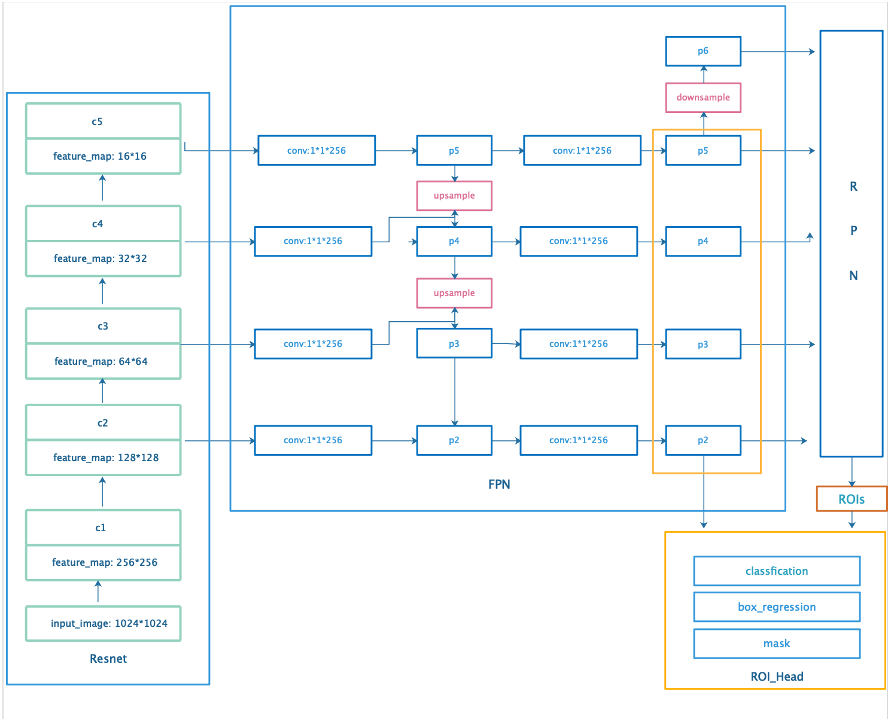
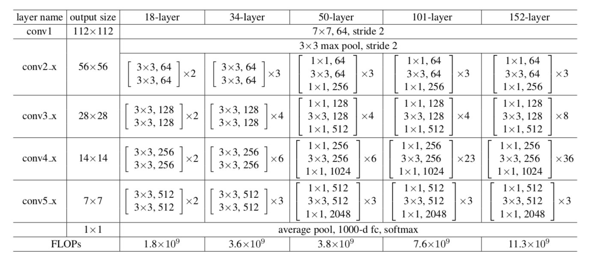
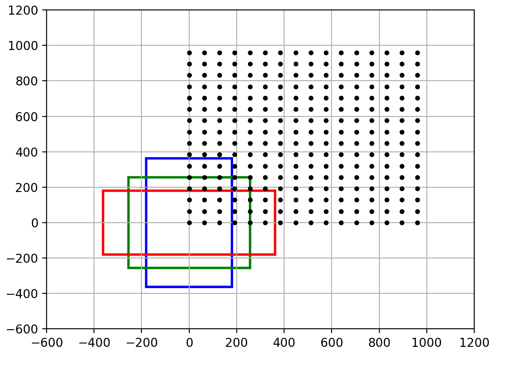
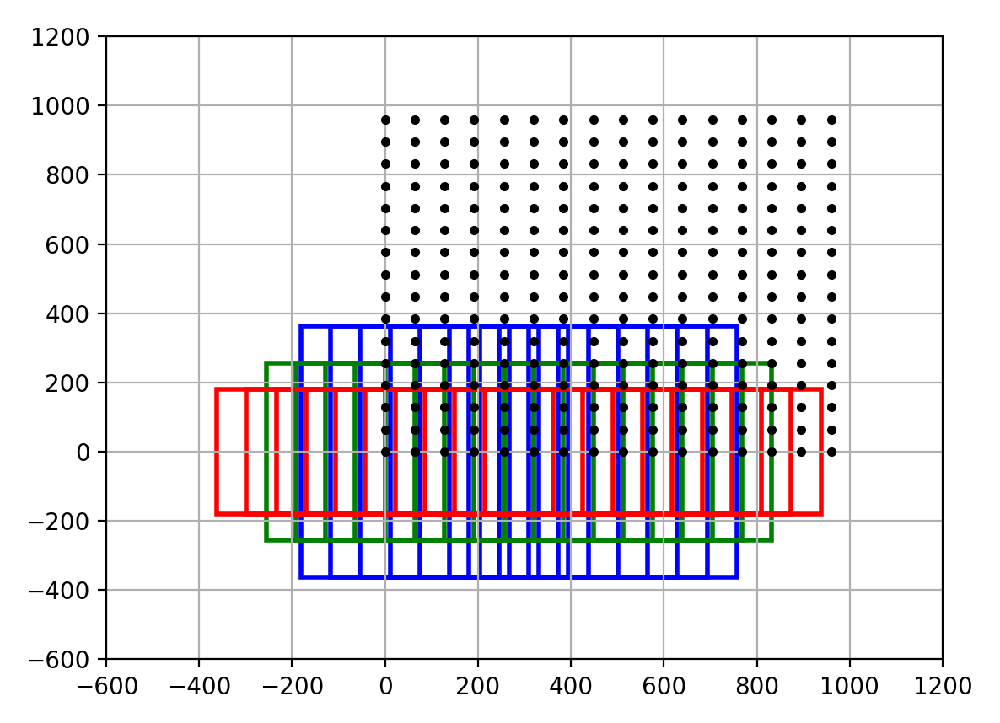
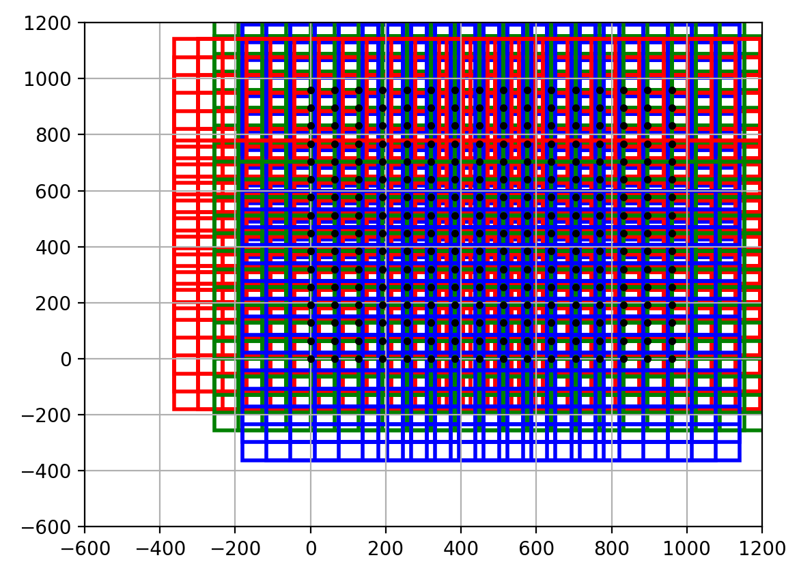
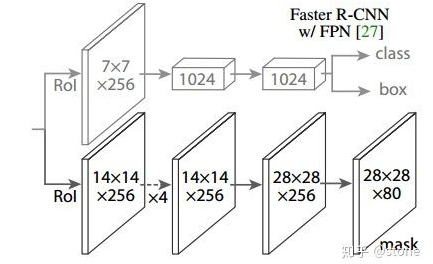

<!DOCTYPE html>
<html>
<head><meta name="generator" content="Hexo 3.8.0">
  <meta charset="utf-8">
  
  <meta name="renderer" content="webkit">
  <meta http-equiv="X-UA-Compatible" content="IE=edge">
  <link rel="dns-prefetch" href="http://yoursite.com">
  <title>Mask RCNN论文笔记 | Tshangs</title>
  <meta name="viewport" content="width=device-width, initial-scale=1, maximum-scale=1">
  <meta name="description" content="&amp;ensp;&amp;ensp;&amp;ensp;&amp;ensp;With- out bells and whistles,Mask RCNN是现在最流行的实例分割的深度学习模型之一，它是在Faster RCNN的RPN基础之上保留目标分类和边界框回归的两个分支，新增了一个mask分支来对RPN层得到的ROI实现像素级别的分类也就是分割任务的。">
<meta name="keywords" content="深度学习,语义分割,Mask RCNN">
<meta property="og:type" content="article">
<meta property="og:title" content="Mask RCNN论文笔记">
<meta property="og:url" content="http://yoursite.com/2019/08/19/mask_rcnn/index.html">
<meta property="og:site_name" content="Tshangs">
<meta property="og:description" content="&amp;ensp;&amp;ensp;&amp;ensp;&amp;ensp;With- out bells and whistles,Mask RCNN是现在最流行的实例分割的深度学习模型之一，它是在Faster RCNN的RPN基础之上保留目标分类和边界框回归的两个分支，新增了一个mask分支来对RPN层得到的ROI实现像素级别的分类也就是分割任务的。">
<meta property="og:locale" content="default">
<meta property="og:image" content="http://yoursite.com/2019/08/19/mask_rcnn/images/network.png">
<meta property="og:image" content="http://yoursite.com/2019/08/19/mask_rcnn/images/resnet.png">
<meta property="og:image" content="http://yoursite.com/2019/08/19/mask_rcnn/images/anchor_1.png">
<meta property="og:image" content="http://yoursite.com/2019/08/19/mask_rcnn/images/anchor_2.png">
<meta property="og:image" content="http://yoursite.com/2019/08/19/mask_rcnn/images/anchor_3.png">
<meta property="og:image" content="http://yoursite.com/2019/08/19/mask_rcnn/images/roi_head.png">
<meta property="og:updated_time" content="2019-08-19T07:24:04.645Z">
<meta name="twitter:card" content="summary">
<meta name="twitter:title" content="Mask RCNN论文笔记">
<meta name="twitter:description" content="&amp;ensp;&amp;ensp;&amp;ensp;&amp;ensp;With- out bells and whistles,Mask RCNN是现在最流行的实例分割的深度学习模型之一，它是在Faster RCNN的RPN基础之上保留目标分类和边界框回归的两个分支，新增了一个mask分支来对RPN层得到的ROI实现像素级别的分类也就是分割任务的。">
<meta name="twitter:image" content="http://yoursite.com/2019/08/19/mask_rcnn/images/network.png">
  
    <link rel="alternative" href="/atom.xml" title="Tshangs" type="application/atom+xml">
  
  
    <link rel="icon" href="/favicon.png">
  
  <link rel="stylesheet" type="text/css" href="/./main.0cf68a.css">
  <style type="text/css">
  
    #container.show {
      background: linear-gradient(200deg,#a0cfe4,#e8c37e);
    }
  </style>
  

  

</head>
</html>
<body>
  <div id="container" q-class="show:isCtnShow">
    <canvas id="anm-canvas" class="anm-canvas"></canvas>
    <div class="left-col" q-class="show:isShow">
      
<div class="overlay" style="background: #4d4d4d"></div>
<div class="intrude-less">
	<header id="header" class="inner">
		<a href="/" class="profilepic">
			
		</a>
		<hgroup>
		  <h1 class="header-author"><a href="/">Tshangs</a></h1>
		</hgroup>
		

		<nav class="header-menu">
			<ul>
			
				<li><a href="/">主页</a></li>
	        
				<li><a href="/tags/随笔/">随笔</a></li>
	        
			</ul>
		</nav>
		<nav class="header-smart-menu">
    		
    			
    			<a q-on="click: openSlider(e, 'innerArchive')" href="javascript:void(0)">所有文章</a>
    			
            
    			
    			<a q-on="click: openSlider(e, 'friends')" href="javascript:void(0)">友链</a>
    			
            
    			
    			<a q-on="click: openSlider(e, 'aboutme')" href="javascript:void(0)">关于我</a>
    			
            
		</nav>
		<nav class="header-nav">
			<div class="social">
				
					<a class="github" target="_blank" href="#" title="github"><i class="icon-github"></i></a>
		        
					<a class="weibo" target="_blank" href="#" title="weibo"><i class="icon-weibo"></i></a>
		        
					<a class="rss" target="_blank" href="#" title="rss"><i class="icon-rss"></i></a>
		        
					<a class="zhihu" target="_blank" href="#" title="zhihu"><i class="icon-zhihu"></i></a>
		        
			</div>
		</nav>
	</header>		
</div>

    </div>
    <div class="mid-col" q-class="show:isShow,hide:isShow|isFalse">
      
<nav id="mobile-nav">
  	<div class="overlay js-overlay" style="background: #4d4d4d"></div>
	<div class="btnctn js-mobile-btnctn">
  		<div class="slider-trigger list" q-on="click: openSlider(e)"><i class="icon icon-sort"></i></div>
	</div>
	<div class="intrude-less">
		<header id="header" class="inner">
			<div class="profilepic">
				
			</div>
			<hgroup>
			  <h1 class="header-author js-header-author">Tshangs</h1>
			</hgroup>
			
			
			
				
			
				
			
			
			
			<nav class="header-nav">
				<div class="social">
					
						<a class="github" target="_blank" href="#" title="github"><i class="icon-github"></i></a>
			        
						<a class="weibo" target="_blank" href="#" title="weibo"><i class="icon-weibo"></i></a>
			        
						<a class="rss" target="_blank" href="#" title="rss"><i class="icon-rss"></i></a>
			        
						<a class="zhihu" target="_blank" href="#" title="zhihu"><i class="icon-zhihu"></i></a>
			        
				</div>
			</nav>

			<nav class="header-menu js-header-menu">
				<ul style="width: 50%">
				
				
					<li style="width: 50%"><a href="/">主页</a></li>
		        
					<li style="width: 50%"><a href="/tags/随笔/">随笔</a></li>
		        
				</ul>
			</nav>
		</header>				
	</div>
	<div class="mobile-mask" style="display:none" q-show="isShow"></div>
</nav>

      <div id="wrapper" class="body-wrap">
        <div class="menu-l">
          <div class="canvas-wrap">
            <canvas data-colors="#eaeaea" data-sectionHeight="100" data-contentId="js-content" id="myCanvas1" class="anm-canvas"></canvas>
          </div>
          <div id="js-content" class="content-ll">
            <article id="post-mask_rcnn" class="article article-type-post " itemscope itemprop="blogPost">
  <div class="article-inner">
    
      <header class="article-header">
        
  
    <h1 class="article-title" itemprop="name">
      Mask RCNN论文笔记
    </h1>
  


  <a href="javascript:;" class="archive-article-date">
      <i class="icon-smile icon"></i> 阅读数:<span id="/2019/08/19/mask_rcnn/" class="pageViews">0</span>次
  </a>

        
        <a href="/2019/08/19/mask_rcnn/" class="archive-article-date">
  	<time datetime="2019-08-19T07:12:45.293Z" itemprop="datePublished"><i class="icon-calendar icon"></i>2019-08-19</time>
</a>
        
      </header>
    
    <div class="article-entry" itemprop="articleBody">
      
        <p>&ensp;&ensp;&ensp;&ensp;<strong>With- out bells and whistles</strong>,<strong>Mask RCNN</strong>是现在最流行的实例分割的深度学习模型之一，它是在<strong>Faster RCNN</strong>的<strong>RPN</strong>基础之上保留目标分类和边界框回归的两个分支，新增了一个<strong>mask</strong>分支来对<strong>RPN</strong>层得到的<strong>ROI</strong>实现像素级别的分类也就是分割任务的。<br><a id="more"></a><br>&ensp;&ensp;&ensp;&ensp;虽说<strong>Mask RCNN</strong>是由<strong>Faster RCNN</strong>进行改进得到的，但是相对于<strong>Faster RCNN</strong>的主要任务已经改变，所以在<strong>Mask RCNN</strong>与<strong>Faster RCNN</strong>也有许多不同之处，首先<strong>Mask RCNN</strong>的网络结构主要借鉴了<strong>FPN</strong>的思想，采用了自底向上和自顶向下的思想，融合多级细粒度特征图来进行特征提取，再者在<strong>Faster RCNN</strong>中对得到的<strong>ROI</strong>采用<strong>ROI Pooling</strong>的方法来修整到统一的大小，而在<strong>Mask RCNN</strong>中对这种方法进行了修正，采用了<strong>RoIAlign</strong>的方法来<strong>resize</strong>得到的<strong>ROI</strong>的大小，其次模型的原始训练数据也有所不同，不仅需要目标的标签和边界框的信息还需要目标的分割信息。<br>&ensp;&ensp;&ensp;&ensp;现在对于<strong>Mask RCNN</strong>的复现有很多个版本，例如<a href="https://github.com/matterport/Mask_RCNN" target="_blank" rel="noopener">tensorflow版本</a>,还有<a href="https://github.com/multimodallearning/pytorch-mask-rcnn" target="_blank" rel="noopener">pytorch版本</a>,当然还有作者论文中给出的代码版本<a href="https://github.com/facebookresearch/Detectron" target="_blank" rel="noopener">Detectron</a>，本文所参考的的代码为上述给出的pytorch版本，下面还是按照<strong>Dataset</strong>和<strong>Model</strong>两个部分来进行代码和逻辑的梳理。</p>
<h5 id="Dataset"><a href="#Dataset" class="headerlink" title="Dataset"></a>Dataset</h5><p>&ensp;&ensp;&ensp;&ensp;从作者的README.md中的train命令行，我们可以定位到其训练的入口代码位于coco.py中：<br><figure class="highlight javascript"><table><tr><td class="gutter"><pre><span class="line">1</span><br></pre></td><td class="code"><pre><span class="line">python coco.py train --dataset=<span class="regexp">/path/</span>to/coco/ --model=coco</span><br></pre></td></tr></table></figure></p>
<p>在coco.py中的main函数中我们可以看到关于Dataset处理的代码：<br><figure class="highlight javascript"><table><tr><td class="gutter"><pre><span class="line">1</span><br><span class="line">2</span><br><span class="line">3</span><br><span class="line">4</span><br><span class="line">5</span><br><span class="line">6</span><br><span class="line">7</span><br><span class="line">8</span><br><span class="line">9</span><br><span class="line">10</span><br><span class="line">11</span><br><span class="line">12</span><br></pre></td><td class="code"><pre><span class="line"><span class="keyword">if</span> args.command == <span class="string">"train"</span>:</span><br><span class="line">   # Training dataset. Use the training set and 35K from the</span><br><span class="line">   # validation set, as as in the Mask RCNN paper.</span><br><span class="line">   dataset_train = CocoDataset()</span><br><span class="line">   dataset_train.load_coco(args.dataset, <span class="string">"train"</span>, year=args.year, auto_download=args.download)</span><br><span class="line">   dataset_train.load_coco(args.dataset, <span class="string">"valminusminival"</span>, year=args.year, auto_download=args.download)</span><br><span class="line">   dataset_train.prepare()</span><br><span class="line"></span><br><span class="line">   # Validation dataset</span><br><span class="line">   dataset_val = CocoDataset()</span><br><span class="line">   dataset_val.load_coco(args.dataset, <span class="string">"minival"</span>, year=args.year, auto_download=args.download)</span><br><span class="line">   dataset_val.prepare()</span><br></pre></td></tr></table></figure></p>
<p>首先初始化了一个CocoDataset()类为dataset_train对象，然后调用该类的load_coco函数进行下载，这里的下载使用了一个python处理coco数据集的包pycocotools，该api的作用就是为了提取标注文件中的信息, 使其分别用于各自的场景, 比如图像检测使用的边界框参数, 图像分割使用的 mask 参数, 人体姿态检测使用的关节点参数等，更具体的内容可以看<a href="https://github.com/dengdan/coco/blob/master/PythonAPI/pycocoDemo.ipynb" target="_blank" rel="noopener">pycocoDemo.ipynb</a>和<a href="https://blog.csdn.net/zym19941119/article/details/80241663?utm_source=blogxgwz7" target="_blank" rel="noopener">COCO2017数据集api说明</a>。CocoDataset类继承自utils.py中定义的Dataset类，该类的代码如下：<br><figure class="highlight javascript"><table><tr><td class="gutter"><pre><span class="line">1</span><br><span class="line">2</span><br><span class="line">3</span><br><span class="line">4</span><br><span class="line">5</span><br><span class="line">6</span><br><span class="line">7</span><br><span class="line">8</span><br><span class="line">9</span><br><span class="line">10</span><br><span class="line">11</span><br><span class="line">12</span><br><span class="line">13</span><br><span class="line">14</span><br><span class="line">15</span><br><span class="line">16</span><br><span class="line">17</span><br><span class="line">18</span><br><span class="line">19</span><br><span class="line">20</span><br><span class="line">21</span><br><span class="line">22</span><br><span class="line">23</span><br><span class="line">24</span><br><span class="line">25</span><br><span class="line">26</span><br><span class="line">27</span><br><span class="line">28</span><br><span class="line">29</span><br><span class="line">30</span><br><span class="line">31</span><br><span class="line">32</span><br><span class="line">33</span><br><span class="line">34</span><br><span class="line">35</span><br><span class="line">36</span><br><span class="line">37</span><br><span class="line">38</span><br><span class="line">39</span><br><span class="line">40</span><br><span class="line">41</span><br><span class="line">42</span><br><span class="line">43</span><br><span class="line">44</span><br><span class="line">45</span><br><span class="line">46</span><br><span class="line">47</span><br><span class="line">48</span><br><span class="line">49</span><br><span class="line">50</span><br><span class="line">51</span><br><span class="line">52</span><br><span class="line">53</span><br><span class="line">54</span><br><span class="line">55</span><br><span class="line">56</span><br><span class="line">57</span><br><span class="line">58</span><br><span class="line">59</span><br><span class="line">60</span><br><span class="line">61</span><br><span class="line">62</span><br><span class="line">63</span><br><span class="line">64</span><br><span class="line">65</span><br><span class="line">66</span><br><span class="line">67</span><br><span class="line">68</span><br><span class="line">69</span><br><span class="line">70</span><br><span class="line">71</span><br><span class="line">72</span><br><span class="line">73</span><br><span class="line">74</span><br><span class="line">75</span><br><span class="line">76</span><br><span class="line">77</span><br><span class="line">78</span><br><span class="line">79</span><br><span class="line">80</span><br><span class="line">81</span><br><span class="line">82</span><br><span class="line">83</span><br><span class="line">84</span><br><span class="line">85</span><br><span class="line">86</span><br><span class="line">87</span><br><span class="line">88</span><br><span class="line">89</span><br><span class="line">90</span><br><span class="line">91</span><br><span class="line">92</span><br><span class="line">93</span><br><span class="line">94</span><br><span class="line">95</span><br><span class="line">96</span><br><span class="line">97</span><br><span class="line">98</span><br><span class="line">99</span><br><span class="line">100</span><br><span class="line">101</span><br><span class="line">102</span><br><span class="line">103</span><br><span class="line">104</span><br><span class="line">105</span><br><span class="line">106</span><br><span class="line">107</span><br><span class="line">108</span><br><span class="line">109</span><br><span class="line">110</span><br><span class="line">111</span><br><span class="line">112</span><br><span class="line">113</span><br><span class="line">114</span><br><span class="line">115</span><br><span class="line">116</span><br><span class="line">117</span><br><span class="line">118</span><br><span class="line">119</span><br><span class="line">120</span><br><span class="line">121</span><br><span class="line">122</span><br><span class="line">123</span><br><span class="line">124</span><br><span class="line">125</span><br><span class="line">126</span><br><span class="line">127</span><br><span class="line">128</span><br><span class="line">129</span><br><span class="line">130</span><br><span class="line">131</span><br><span class="line">132</span><br><span class="line">133</span><br><span class="line">134</span><br><span class="line">135</span><br><span class="line">136</span><br><span class="line">137</span><br><span class="line">138</span><br><span class="line">139</span><br><span class="line">140</span><br><span class="line">141</span><br><span class="line">142</span><br><span class="line">143</span><br><span class="line">144</span><br><span class="line">145</span><br><span class="line">146</span><br><span class="line">147</span><br><span class="line">148</span><br><span class="line">149</span><br><span class="line">150</span><br></pre></td><td class="code"><pre><span class="line">class Dataset(object):</span><br><span class="line">   <span class="string">""</span><span class="string">"The base class for dataset classes.</span></span><br><span class="line"><span class="string">   To use it, create a new class that adds functions specific to the dataset</span></span><br><span class="line"><span class="string">   you want to use. For example:</span></span><br><span class="line"><span class="string"></span></span><br><span class="line"><span class="string">   class CatsAndDogsDataset(Dataset):</span></span><br><span class="line"><span class="string">       def load_cats_and_dogs(self):</span></span><br><span class="line"><span class="string">           ...</span></span><br><span class="line"><span class="string">       def load_mask(self, image_id):</span></span><br><span class="line"><span class="string">           ...</span></span><br><span class="line"><span class="string">       def image_reference(self, image_id):</span></span><br><span class="line"><span class="string">           ...</span></span><br><span class="line"><span class="string"></span></span><br><span class="line"><span class="string">   See COCODataset and ShapesDataset as examples.</span></span><br><span class="line"><span class="string">   "</span><span class="string">""</span></span><br><span class="line"></span><br><span class="line">   def __init__(self, class_map=None):</span><br><span class="line">       self._image_ids = []</span><br><span class="line">       self.image_info = []</span><br><span class="line">       # Background is always the first class</span><br><span class="line">       self.class_info = [&#123;<span class="string">"source"</span>: <span class="string">""</span>, <span class="string">"id"</span>: <span class="number">0</span>, <span class="string">"name"</span>: <span class="string">"BG"</span>&#125;]</span><br><span class="line">       self.source_class_ids = &#123;&#125;</span><br><span class="line"></span><br><span class="line">   def add_class(self, source, class_id, class_name):</span><br><span class="line">       assert <span class="string">"."</span> not <span class="keyword">in</span> source, <span class="string">"Source name cannot contain a dot"</span></span><br><span class="line">       # Does the class exist already?</span><br><span class="line">       <span class="keyword">for</span> info <span class="keyword">in</span> self.class_info:</span><br><span class="line">           <span class="keyword">if</span> info[<span class="string">'source'</span>] == source and info[<span class="string">"id"</span>] == class_id:</span><br><span class="line">               # source.class_id combination already available, skip</span><br><span class="line">               <span class="keyword">return</span></span><br><span class="line">       # Add the class</span><br><span class="line">       self.class_info.append(&#123;</span><br><span class="line">           <span class="string">"source"</span>: source,</span><br><span class="line">           <span class="string">"id"</span>: class_id,</span><br><span class="line">           <span class="string">"name"</span>: class_name,</span><br><span class="line">       &#125;)</span><br><span class="line"></span><br><span class="line">   def add_image(self, source, image_id, path, **kwargs):</span><br><span class="line">       image_info = &#123;</span><br><span class="line">           <span class="string">"id"</span>: image_id,</span><br><span class="line">           <span class="string">"source"</span>: source,</span><br><span class="line">           <span class="string">"path"</span>: path,</span><br><span class="line">       &#125;</span><br><span class="line">       image_info.update(kwargs)</span><br><span class="line">       self.image_info.append(image_info)</span><br><span class="line"></span><br><span class="line">   def image_reference(self, image_id):</span><br><span class="line">       <span class="string">""</span><span class="string">"Return a link to the image in its source Website or details about</span></span><br><span class="line"><span class="string">       the image that help looking it up or debugging it.</span></span><br><span class="line"><span class="string"></span></span><br><span class="line"><span class="string">       Override for your dataset, but pass to this function</span></span><br><span class="line"><span class="string">       if you encounter images not in your dataset.</span></span><br><span class="line"><span class="string">       "</span><span class="string">""</span></span><br><span class="line">       <span class="keyword">return</span> <span class="string">""</span></span><br><span class="line"></span><br><span class="line">   def prepare(self, class_map=None):</span><br><span class="line">       <span class="string">""</span><span class="string">"Prepares the Dataset class for use.</span></span><br><span class="line"><span class="string"></span></span><br><span class="line"><span class="string">       TODO: class map is not supported yet. When done, it should handle mapping</span></span><br><span class="line"><span class="string">             classes from different datasets to the same class ID.</span></span><br><span class="line"><span class="string">       "</span><span class="string">""</span></span><br><span class="line">       def clean_name(name):</span><br><span class="line">           <span class="string">""</span><span class="string">"Returns a shorter version of object names for cleaner display."</span><span class="string">""</span></span><br><span class="line">           <span class="keyword">return</span> <span class="string">","</span>.join(name.split(<span class="string">","</span>)[:<span class="number">1</span>])</span><br><span class="line"></span><br><span class="line">       # Build (or rebuild) everything else from the info dicts.</span><br><span class="line">       self.num_classes = len(self.class_info)</span><br><span class="line">       self.class_ids = np.arange(self.num_classes)</span><br><span class="line">       self.class_names = [clean_name(c[<span class="string">"name"</span>]) <span class="keyword">for</span> c <span class="keyword">in</span> self.class_info]</span><br><span class="line">       self.num_images = len(self.image_info)</span><br><span class="line">       self._image_ids = np.arange(self.num_images)</span><br><span class="line"></span><br><span class="line">       self.class_from_source_map = &#123;<span class="string">"&#123;&#125;.&#123;&#125;"</span>.format(info[<span class="string">'source'</span>], info[<span class="string">'id'</span>]): id</span><br><span class="line">                                     <span class="keyword">for</span> info, id <span class="keyword">in</span> zip(self.class_info, self.class_ids)&#125;</span><br><span class="line"></span><br><span class="line">       # Map sources to class_ids they support</span><br><span class="line">       self.sources = list(<span class="keyword">set</span>([i['source'] for i in self.class_info]))</span><br><span class="line">       self.source_class_ids = &#123;&#125;</span><br><span class="line">       # Loop over datasets</span><br><span class="line">       <span class="keyword">for</span> source <span class="keyword">in</span> self.sources:</span><br><span class="line">           self.source_class_ids[source] = []</span><br><span class="line">           # Find classes that belong to this dataset</span><br><span class="line">           <span class="keyword">for</span> i, info <span class="keyword">in</span> enumerate(self.class_info):</span><br><span class="line">               # Include BG class in all datasets</span><br><span class="line">               <span class="keyword">if</span> i == <span class="number">0</span> or source == info[<span class="string">'source'</span>]:</span><br><span class="line">                   self.source_class_ids[source].append(i)</span><br><span class="line"></span><br><span class="line">   def map_source_class_id(self, source_class_id):</span><br><span class="line">       <span class="string">""</span><span class="string">"Takes a source class ID and returns the int class ID assigned to it.</span></span><br><span class="line"><span class="string"></span></span><br><span class="line"><span class="string">       For example:</span></span><br><span class="line"><span class="string">       dataset.map_source_class_id("</span>coco<span class="number">.12</span><span class="string">") -&gt; 23</span></span><br><span class="line"><span class="string">       "</span><span class="string">""</span></span><br><span class="line">       <span class="keyword">return</span> self.class_from_source_map[source_class_id]</span><br><span class="line"></span><br><span class="line">   def get_source_class_id(self, class_id, source):</span><br><span class="line">       <span class="string">""</span><span class="string">"Map an internal class ID to the corresponding class ID in the source dataset."</span><span class="string">""</span></span><br><span class="line">       info = self.class_info[class_id]</span><br><span class="line">       assert info[<span class="string">'source'</span>] == source</span><br><span class="line">       <span class="keyword">return</span> info[<span class="string">'id'</span>]</span><br><span class="line"></span><br><span class="line">   def append_data(self, class_info, image_info):</span><br><span class="line">       self.external_to_class_id = &#123;&#125;</span><br><span class="line">       <span class="keyword">for</span> i, c <span class="keyword">in</span> enumerate(self.class_info):</span><br><span class="line">           <span class="keyword">for</span> ds, id <span class="keyword">in</span> c[<span class="string">"map"</span>]:</span><br><span class="line">               self.external_to_class_id[ds + str(id)] = i</span><br><span class="line"></span><br><span class="line">       # Map external image IDs to internal ones.</span><br><span class="line">       self.external_to_image_id = &#123;&#125;</span><br><span class="line">       <span class="keyword">for</span> i, info <span class="keyword">in</span> enumerate(self.image_info):</span><br><span class="line">           self.external_to_image_id[info[<span class="string">"ds"</span>] + str(info[<span class="string">"id"</span>])] = i</span><br><span class="line"></span><br><span class="line">   @property</span><br><span class="line">   def image_ids(self):</span><br><span class="line">       <span class="keyword">return</span> self._image_ids</span><br><span class="line"></span><br><span class="line">   def source_image_link(self, image_id):</span><br><span class="line">       <span class="string">""</span><span class="string">"Returns the path or URL to the image.</span></span><br><span class="line"><span class="string">       Override this to return a URL to the image if it's availble online for easy</span></span><br><span class="line"><span class="string">       debugging.</span></span><br><span class="line"><span class="string">       "</span><span class="string">""</span></span><br><span class="line">       <span class="keyword">return</span> self.image_info[image_id][<span class="string">"path"</span>]</span><br><span class="line"></span><br><span class="line">   def load_image(self, image_id):</span><br><span class="line">       <span class="string">""</span><span class="string">"Load the specified image and return a [H,W,3] Numpy array.</span></span><br><span class="line"><span class="string">       "</span><span class="string">""</span></span><br><span class="line">       # Load image</span><br><span class="line">       image = skimage.io.imread(self.image_info[image_id][<span class="string">'path'</span>])</span><br><span class="line">       # If grayscale. Convert to RGB for consistency.</span><br><span class="line">       <span class="keyword">if</span> image.ndim != <span class="number">3</span>:</span><br><span class="line">           image = skimage.color.gray2rgb(image)</span><br><span class="line">       <span class="keyword">return</span> image</span><br><span class="line"></span><br><span class="line">   def load_mask(self, image_id):</span><br><span class="line">       <span class="string">""</span><span class="string">"Load instance masks for the given image.</span></span><br><span class="line"><span class="string"></span></span><br><span class="line"><span class="string">       Different datasets use different ways to store masks. Override this</span></span><br><span class="line"><span class="string">       method to load instance masks and return them in the form of am</span></span><br><span class="line"><span class="string">       array of binary masks of shape [height, width, instances].</span></span><br><span class="line"><span class="string"></span></span><br><span class="line"><span class="string">       Returns:</span></span><br><span class="line"><span class="string">           masks: A bool array of shape [height, width, instance count] with</span></span><br><span class="line"><span class="string">               a binary mask per instance.</span></span><br><span class="line"><span class="string">           class_ids: a 1D array of class IDs of the instance masks.</span></span><br><span class="line"><span class="string">       "</span><span class="string">""</span></span><br><span class="line">       # Override this function to load a mask from your dataset.</span><br><span class="line">       # Otherwise, it returns an empty mask.</span><br><span class="line">       mask = np.empty([<span class="number">0</span>, <span class="number">0</span>, <span class="number">0</span>])</span><br><span class="line">       class_ids = np.empty([<span class="number">0</span>], np.int32)</span><br><span class="line">       <span class="keyword">return</span> mask, class_ids</span><br></pre></td></tr></table></figure></p>
<p>从上面代码可以看出，Dataset是定义了针对所有类别数据集的操作，在这里我们只需coco数据集，所以需要继承该类得到CocoDataset类，该类的代码如下：<br><figure class="highlight javascript"><table><tr><td class="gutter"><pre><span class="line">1</span><br><span class="line">2</span><br><span class="line">3</span><br><span class="line">4</span><br><span class="line">5</span><br><span class="line">6</span><br><span class="line">7</span><br><span class="line">8</span><br><span class="line">9</span><br><span class="line">10</span><br><span class="line">11</span><br><span class="line">12</span><br><span class="line">13</span><br><span class="line">14</span><br><span class="line">15</span><br><span class="line">16</span><br><span class="line">17</span><br><span class="line">18</span><br><span class="line">19</span><br><span class="line">20</span><br><span class="line">21</span><br><span class="line">22</span><br><span class="line">23</span><br><span class="line">24</span><br><span class="line">25</span><br><span class="line">26</span><br><span class="line">27</span><br><span class="line">28</span><br><span class="line">29</span><br><span class="line">30</span><br><span class="line">31</span><br><span class="line">32</span><br><span class="line">33</span><br><span class="line">34</span><br><span class="line">35</span><br><span class="line">36</span><br><span class="line">37</span><br><span class="line">38</span><br><span class="line">39</span><br><span class="line">40</span><br><span class="line">41</span><br><span class="line">42</span><br><span class="line">43</span><br><span class="line">44</span><br><span class="line">45</span><br><span class="line">46</span><br><span class="line">47</span><br><span class="line">48</span><br><span class="line">49</span><br><span class="line">50</span><br><span class="line">51</span><br><span class="line">52</span><br><span class="line">53</span><br></pre></td><td class="code"><pre><span class="line">class CocoDataset(utils.Dataset):</span><br><span class="line">   def load_coco(self, dataset_dir, subset, year=DEFAULT_DATASET_YEAR, class_ids=None,</span><br><span class="line">                 class_map=None, return_coco=False, auto_download=False):</span><br><span class="line">       <span class="string">""</span><span class="string">"Load a subset of the COCO dataset.</span></span><br><span class="line"><span class="string">       dataset_dir: The root directory of the COCO dataset.</span></span><br><span class="line"><span class="string">       subset: What to load (train, val, minival, valminusminival)</span></span><br><span class="line"><span class="string">       year: What dataset year to load (2014, 2017) as a string, not an integer</span></span><br><span class="line"><span class="string">       class_ids: If provided, only loads images that have the given classes.</span></span><br><span class="line"><span class="string">       class_map: TODO: Not implemented yet. Supports maping classes from</span></span><br><span class="line"><span class="string">           different datasets to the same class ID.</span></span><br><span class="line"><span class="string">       return_coco: If True, returns the COCO object.</span></span><br><span class="line"><span class="string">       auto_download: Automatically download and unzip MS-COCO images and annotations</span></span><br><span class="line"><span class="string">       "</span><span class="string">""</span></span><br><span class="line"></span><br><span class="line">       <span class="keyword">if</span> auto_download is True:</span><br><span class="line">           self.auto_download(dataset_dir, subset, year)</span><br><span class="line"></span><br><span class="line">       coco = COCO(<span class="string">"&#123;&#125;/annotations/instances_&#123;&#125;&#123;&#125;.json"</span>.format(dataset_dir, subset, year))</span><br><span class="line">       <span class="keyword">if</span> subset == <span class="string">"minival"</span> or subset == <span class="string">"valminusminival"</span>:</span><br><span class="line">           subset = <span class="string">"val"</span></span><br><span class="line">       image_dir = <span class="string">"&#123;&#125;/&#123;&#125;&#123;&#125;"</span>.format(dataset_dir, subset, year)</span><br><span class="line"></span><br><span class="line">       # Load all classes or a subset?</span><br><span class="line">       <span class="keyword">if</span> not class_ids:</span><br><span class="line">           # All classes</span><br><span class="line">           class_ids = sorted(coco.getCatIds())#得到所有类的id</span><br><span class="line"></span><br><span class="line">       # All images or a subset?</span><br><span class="line">       <span class="keyword">if</span> class_ids:</span><br><span class="line">           image_ids = []</span><br><span class="line">           <span class="keyword">for</span> id <span class="keyword">in</span> class_ids:</span><br><span class="line">               image_ids.extend(list(coco.getImgIds(catIds=[id])))#得到所有的图片id</span><br><span class="line">           # Remove duplicates</span><br><span class="line">           image_ids = list(<span class="keyword">set</span>(image_ids))</span><br><span class="line">       else:</span><br><span class="line">           # All images</span><br><span class="line">           image_ids = list(coco.imgs.keys())</span><br><span class="line"></span><br><span class="line">       # Add classes</span><br><span class="line">       for i in class_ids:</span><br><span class="line">           self.add_class("coco", i, coco.loadCats(i)[0]["name"])#将"coco",class_id,class_name,加入到class_info中</span><br><span class="line"></span><br><span class="line">       # Add images</span><br><span class="line">       for i in image_ids:</span><br><span class="line">           self.add_image(</span><br><span class="line">               "coco", image_id=i,</span><br><span class="line">               path=os.path.join(image_dir, coco.imgs[i]['file_name']),</span><br><span class="line">               width=coco.imgs[i]["width"],</span><br><span class="line">               height=coco.imgs[i]["height"],</span><br><span class="line">               annotations=coco.loadAnns(coco.getAnnIds(</span><br><span class="line">                   imgIds=[i], catIds=class_ids, iscrowd=None)))#将以上信息加入到image_info中</span><br><span class="line">       if return_coco:</span><br><span class="line">           return coco</span><br></pre></td></tr></table></figure></p>
<p>接着对初始化CocoDataset()类得到dataset_train对象调用load_coco()和prepare()成员函数构造数据集，当然这至此的Dataset的处理只是得到了class_info和image_info的一些数据集结构信息，要想得到真正使用的rpn_match, rpn_bbox, gt_class_ids, gt_boxes, gt_masks等数据还需经一步的处理，而这些都放在<strong>model</strong>部分，这是按照代码的逻辑顺序来进行说明。</p>
<h6 id="model"><a href="#model" class="headerlink" title="model"></a>model</h6><p>对于<strong>model</strong>部分，框架结构基本上和<strong>Faster RCNN</strong>一致，分为<strong>Extractor</strong>,<strong>RPN</strong>,<strong>ROIHead</strong>三个部分，<strong>Extractor</strong>负责提取特征，<strong>RPN</strong>负责得到<strong>ROI</strong>，<strong>ROIHead</strong>又分为两个部分，分别是<strong>classifier</strong>，<strong>mask</strong>。<br>代码中model的定义部分位于model.py的MaskRCNN类中的build函数中，其代码如下：<br><figure class="highlight javascript"><table><tr><td class="gutter"><pre><span class="line">1</span><br><span class="line">2</span><br><span class="line">3</span><br><span class="line">4</span><br><span class="line">5</span><br><span class="line">6</span><br><span class="line">7</span><br><span class="line">8</span><br><span class="line">9</span><br><span class="line">10</span><br><span class="line">11</span><br><span class="line">12</span><br><span class="line">13</span><br><span class="line">14</span><br><span class="line">15</span><br><span class="line">16</span><br><span class="line">17</span><br><span class="line">18</span><br><span class="line">19</span><br><span class="line">20</span><br><span class="line">21</span><br><span class="line">22</span><br><span class="line">23</span><br><span class="line">24</span><br><span class="line">25</span><br><span class="line">26</span><br><span class="line">27</span><br><span class="line">28</span><br><span class="line">29</span><br><span class="line">30</span><br><span class="line">31</span><br><span class="line">32</span><br><span class="line">33</span><br><span class="line">34</span><br><span class="line">35</span><br><span class="line">36</span><br><span class="line">37</span><br><span class="line">38</span><br><span class="line">39</span><br><span class="line">40</span><br><span class="line">41</span><br><span class="line">42</span><br><span class="line">43</span><br><span class="line">44</span><br><span class="line">45</span><br><span class="line">46</span><br><span class="line">47</span><br><span class="line">48</span><br><span class="line">49</span><br><span class="line">50</span><br><span class="line">51</span><br><span class="line">52</span><br><span class="line">53</span><br><span class="line">54</span><br><span class="line">55</span><br><span class="line">56</span><br><span class="line">57</span><br><span class="line">58</span><br><span class="line">59</span><br><span class="line">60</span><br><span class="line">61</span><br><span class="line">62</span><br><span class="line">63</span><br><span class="line">64</span><br><span class="line">65</span><br></pre></td><td class="code"><pre><span class="line">class MaskRCNN(nn.Module):</span><br><span class="line">   <span class="string">""</span><span class="string">"Encapsulates the Mask RCNN model functionality.</span></span><br><span class="line"><span class="string">   "</span><span class="string">""</span></span><br><span class="line"></span><br><span class="line">   def __init__(self, config, model_dir):</span><br><span class="line">       <span class="string">""</span><span class="string">"</span></span><br><span class="line"><span class="string">       config: A Sub-class of the Config class</span></span><br><span class="line"><span class="string">       model_dir: Directory to save training logs and trained weights</span></span><br><span class="line"><span class="string">       "</span><span class="string">""</span></span><br><span class="line">       <span class="keyword">super</span>(MaskRCNN, self).__init__()</span><br><span class="line">       self.config = config</span><br><span class="line">       self.model_dir = model_dir</span><br><span class="line">       self.set_log_dir()</span><br><span class="line">       self.build(config=config)</span><br><span class="line">       self.initialize_weights()</span><br><span class="line">       self.loss_history = []</span><br><span class="line">       self.val_loss_history = []</span><br><span class="line"></span><br><span class="line">   def build(self, config):</span><br><span class="line">       <span class="string">""</span><span class="string">"Build Mask R-CNN architecture.</span></span><br><span class="line"><span class="string">       "</span><span class="string">""</span></span><br><span class="line"></span><br><span class="line">       # Image size must be dividable by 2 multiple times</span><br><span class="line">       h, w = config.IMAGE_SHAPE[:<span class="number">2</span>]</span><br><span class="line">       <span class="keyword">if</span> h / <span class="number">2</span>**<span class="number">6</span> != int(h / <span class="number">2</span>**<span class="number">6</span>) or w / <span class="number">2</span>**<span class="number">6</span> != int(w / <span class="number">2</span>**<span class="number">6</span>):</span><br><span class="line">           raise Exception(<span class="string">"Image size must be dividable by 2 at least 6 times "</span></span><br><span class="line">                           <span class="string">"to avoid fractions when downscaling and upscaling."</span></span><br><span class="line">                           <span class="string">"For example, use 256, 320, 384, 448, 512, ... etc. "</span>)</span><br><span class="line"></span><br><span class="line">       # Build the shared convolutional layers.</span><br><span class="line">       # Bottom-up Layers</span><br><span class="line">       # Returns a list of the last layers of each stage, 5 in total.</span><br><span class="line">       # Don't create the thead (stage 5), so we pick the 4th item in the list.</span><br><span class="line">       resnet = ResNet(<span class="string">"resnet101"</span>, stage5=True)</span><br><span class="line">       C1, C2, C3, C4, C5 = resnet.stages()</span><br><span class="line"></span><br><span class="line">       # Top-down Layers</span><br><span class="line">       # TODO: add assert to varify feature map sizes match what's in config</span><br><span class="line">       self.fpn = FPN(C1, C2, C3, C4, C5, out_channels=<span class="number">256</span>)</span><br><span class="line"></span><br><span class="line">       # Generate Anchors</span><br><span class="line">       self.anchors = Variable(torch.from_numpy(utils.generate_pyramid_anchors(config.RPN_ANCHOR_SCALES,</span><br><span class="line">                                                                               config.RPN_ANCHOR_RATIOS,</span><br><span class="line">                                                                               config.BACKBONE_SHAPES,</span><br><span class="line">                                                                               config.BACKBONE_STRIDES,</span><br><span class="line">                                                                               config.RPN_ANCHOR_STRIDE)).float(), requires_grad=False)</span><br><span class="line">       <span class="keyword">if</span> self.config.GPU_COUNT:</span><br><span class="line">           self.anchors = self.anchors.cuda()</span><br><span class="line"></span><br><span class="line">       # RPN</span><br><span class="line">       self.rpn = RPN(len(config.RPN_ANCHOR_RATIOS), config.RPN_ANCHOR_STRIDE, <span class="number">256</span>)</span><br><span class="line"></span><br><span class="line">       # FPN Classifier</span><br><span class="line">       self.classifier = Classifier(<span class="number">256</span>, config.POOL_SIZE, config.IMAGE_SHAPE, config.NUM_CLASSES)</span><br><span class="line"></span><br><span class="line">       # FPN Mask</span><br><span class="line">       self.mask = Mask(<span class="number">256</span>, config.MASK_POOL_SIZE, config.IMAGE_SHAPE, config.NUM_CLASSES)</span><br><span class="line"></span><br><span class="line">       # Fix batch norm layers</span><br><span class="line">       def set_bn_fix(m):</span><br><span class="line">           classname = m.__class__.__name__</span><br><span class="line">           <span class="keyword">if</span> classname.find(<span class="string">'BatchNorm'</span>) != <span class="number">-1</span>:</span><br><span class="line">               <span class="keyword">for</span> p <span class="keyword">in</span> m.parameters(): p.requires_grad = False</span><br><span class="line"></span><br><span class="line">       self.apply(set_bn_fix)</span><br></pre></td></tr></table></figure></p>
<p>从上述代码可以看处，共定义了6个模块组件部分，第一个为<strong>resnet</strong>，第二个为<strong>FPN</strong>，第三个为<strong>RPN</strong>，第四个为<strong>classifier</strong>，第五个为<strong>mask</strong>，并且还生成了<strong>anchors</strong>，<strong>Mask RCNN</strong>的<strong>Extractor</strong>采用的是<strong>FPN_Resnet101</strong>,首先构建<strong>resnet</strong>得到五个将采样阶段的特征图[c1,c2,c3,c4,c5]，在得到这五个阶段的输出之后输入到<strong>FPN</strong>中得到[p2,p3,p4,p5,p6]这另外五个阶段然后输入到<strong>RPN</strong>中来得到<strong>ROI</strong>，整体的结构图如下所示：</p>
<div align="center"></div>

<p>这里采用的是<strong>resnet101</strong>，其网络结构如下表所示：</p>
<p><div align="center"></div><br>其主要代码位于model.py，，如下：<br><figure class="highlight javascript"><table><tr><td class="gutter"><pre><span class="line">1</span><br><span class="line">2</span><br><span class="line">3</span><br><span class="line">4</span><br><span class="line">5</span><br><span class="line">6</span><br><span class="line">7</span><br><span class="line">8</span><br><span class="line">9</span><br><span class="line">10</span><br><span class="line">11</span><br><span class="line">12</span><br><span class="line">13</span><br><span class="line">14</span><br><span class="line">15</span><br><span class="line">16</span><br><span class="line">17</span><br><span class="line">18</span><br><span class="line">19</span><br><span class="line">20</span><br><span class="line">21</span><br><span class="line">22</span><br><span class="line">23</span><br><span class="line">24</span><br><span class="line">25</span><br><span class="line">26</span><br><span class="line">27</span><br><span class="line">28</span><br><span class="line">29</span><br><span class="line">30</span><br><span class="line">31</span><br><span class="line">32</span><br><span class="line">33</span><br><span class="line">34</span><br><span class="line">35</span><br><span class="line">36</span><br><span class="line">37</span><br><span class="line">38</span><br><span class="line">39</span><br><span class="line">40</span><br><span class="line">41</span><br><span class="line">42</span><br><span class="line">43</span><br><span class="line">44</span><br><span class="line">45</span><br><span class="line">46</span><br><span class="line">47</span><br><span class="line">48</span><br><span class="line">49</span><br><span class="line">50</span><br><span class="line">51</span><br><span class="line">52</span><br><span class="line">53</span><br><span class="line">54</span><br><span class="line">55</span><br><span class="line">56</span><br><span class="line">57</span><br><span class="line">58</span><br><span class="line">59</span><br><span class="line">60</span><br><span class="line">61</span><br><span class="line">62</span><br><span class="line">63</span><br><span class="line">64</span><br><span class="line">65</span><br><span class="line">66</span><br><span class="line">67</span><br><span class="line">68</span><br><span class="line">69</span><br><span class="line">70</span><br><span class="line">71</span><br><span class="line">72</span><br><span class="line">73</span><br><span class="line">74</span><br><span class="line">75</span><br><span class="line">76</span><br><span class="line">77</span><br><span class="line">78</span><br><span class="line">79</span><br><span class="line">80</span><br><span class="line">81</span><br><span class="line">82</span><br><span class="line">83</span><br><span class="line">84</span><br><span class="line">85</span><br><span class="line">86</span><br><span class="line">87</span><br><span class="line">88</span><br><span class="line">89</span><br><span class="line">90</span><br><span class="line">91</span><br><span class="line">92</span><br></pre></td><td class="code"><pre><span class="line">	class Bottleneck(nn.Module):</span><br><span class="line">    expansion = <span class="number">4</span></span><br><span class="line"></span><br><span class="line">    def __init__(self, inplanes, planes, stride=<span class="number">1</span>, downsample=None):</span><br><span class="line">        <span class="keyword">super</span>(Bottleneck, self).__init__()</span><br><span class="line">        self.conv1 = nn.Conv2d(inplanes, planes, kernel_size=<span class="number">1</span>, stride=stride)</span><br><span class="line">        self.bn1 = nn.BatchNorm2d(planes, eps=<span class="number">0.001</span>, momentum=<span class="number">0.01</span>)</span><br><span class="line">        self.padding2 = SamePad2d(kernel_size=<span class="number">3</span>, stride=<span class="number">1</span>)</span><br><span class="line">        self.conv2 = nn.Conv2d(planes, planes, kernel_size=<span class="number">3</span>)</span><br><span class="line">        self.bn2 = nn.BatchNorm2d(planes, eps=<span class="number">0.001</span>, momentum=<span class="number">0.01</span>)</span><br><span class="line">        self.conv3 = nn.Conv2d(planes, planes * <span class="number">4</span>, kernel_size=<span class="number">1</span>)</span><br><span class="line">        self.bn3 = nn.BatchNorm2d(planes * <span class="number">4</span>, eps=<span class="number">0.001</span>, momentum=<span class="number">0.01</span>)</span><br><span class="line">        self.relu = nn.ReLU(inplace=True)</span><br><span class="line">        self.downsample = downsample</span><br><span class="line">        self.stride = stride</span><br><span class="line"></span><br><span class="line">    def forward(self, x):</span><br><span class="line">        residual = x</span><br><span class="line"></span><br><span class="line">        out = self.conv1(x)</span><br><span class="line">        out = self.bn1(out)</span><br><span class="line">        out = self.relu(out)</span><br><span class="line"></span><br><span class="line">        out = self.padding2(out)</span><br><span class="line">        out = self.conv2(out)</span><br><span class="line">        out = self.bn2(out)</span><br><span class="line">        out = self.relu(out)</span><br><span class="line"></span><br><span class="line">        out = self.conv3(out)</span><br><span class="line">        out = self.bn3(out)</span><br><span class="line"></span><br><span class="line">        <span class="keyword">if</span> self.downsample is not None:</span><br><span class="line">            residual = self.downsample(x)</span><br><span class="line"></span><br><span class="line">        out += residual</span><br><span class="line">        out = self.relu(out)</span><br><span class="line"></span><br><span class="line">        <span class="keyword">return</span> out</span><br><span class="line"></span><br><span class="line">class ResNet(nn.Module):</span><br><span class="line"></span><br><span class="line">    def __init__(self, architecture, stage5=False):</span><br><span class="line">        <span class="keyword">super</span>(ResNet, self).__init__()</span><br><span class="line">        assert architecture <span class="keyword">in</span> [<span class="string">"resnet50"</span>, <span class="string">"resnet101"</span>]</span><br><span class="line">        self.inplanes = <span class="number">64</span></span><br><span class="line">        self.layers = [<span class="number">3</span>, <span class="number">4</span>, &#123;<span class="string">"resnet50"</span>: <span class="number">6</span>, <span class="string">"resnet101"</span>: <span class="number">23</span>&#125;[architecture], <span class="number">3</span>]</span><br><span class="line">        self.block = Bottleneck</span><br><span class="line">        self.stage5 = stage5</span><br><span class="line"></span><br><span class="line">        self.C1 = nn.Sequential(</span><br><span class="line">            nn.Conv2d(<span class="number">3</span>, <span class="number">64</span>, kernel_size=<span class="number">7</span>, stride=<span class="number">2</span>, padding=<span class="number">3</span>),</span><br><span class="line">            nn.BatchNorm2d(<span class="number">64</span>, eps=<span class="number">0.001</span>, momentum=<span class="number">0.01</span>),</span><br><span class="line">            nn.ReLU(inplace=True),</span><br><span class="line">            SamePad2d(kernel_size=<span class="number">3</span>, stride=<span class="number">2</span>),</span><br><span class="line">            nn.MaxPool2d(kernel_size=<span class="number">3</span>, stride=<span class="number">2</span>),</span><br><span class="line">        )</span><br><span class="line">        self.C2 = self.make_layer(self.block, <span class="number">64</span>, self.layers[<span class="number">0</span>])</span><br><span class="line">        self.C3 = self.make_layer(self.block, <span class="number">128</span>, self.layers[<span class="number">1</span>], stride=<span class="number">2</span>)</span><br><span class="line">        self.C4 = self.make_layer(self.block, <span class="number">256</span>, self.layers[<span class="number">2</span>], stride=<span class="number">2</span>)</span><br><span class="line">        <span class="keyword">if</span> self.stage5:</span><br><span class="line">            self.C5 = self.make_layer(self.block, <span class="number">512</span>, self.layers[<span class="number">3</span>], stride=<span class="number">2</span>)</span><br><span class="line">        <span class="keyword">else</span>:</span><br><span class="line">            self.C5 = None</span><br><span class="line"></span><br><span class="line">    def forward(self, x):</span><br><span class="line">        x = self.C1(x)</span><br><span class="line">        x = self.C2(x)</span><br><span class="line">        x = self.C3(x)</span><br><span class="line">        x = self.C4(x)</span><br><span class="line">        x = self.C5(x)</span><br><span class="line">        <span class="keyword">return</span> x</span><br><span class="line"></span><br><span class="line"></span><br><span class="line">    def stages(self):</span><br><span class="line">        <span class="keyword">return</span> [self.C1, self.C2, self.C3, self.C4, self.C5]</span><br><span class="line"></span><br><span class="line">    def make_layer(self, block, planes, blocks, stride=<span class="number">1</span>):</span><br><span class="line">        downsample = None</span><br><span class="line">        <span class="keyword">if</span> stride != <span class="number">1</span> or self.inplanes != planes * block.expansion:</span><br><span class="line">            downsample = nn.Sequential(</span><br><span class="line">                nn.Conv2d(self.inplanes, planes * block.expansion,</span><br><span class="line">                          kernel_size=<span class="number">1</span>, stride=stride),</span><br><span class="line">                nn.BatchNorm2d(planes * block.expansion, eps=<span class="number">0.001</span>, momentum=<span class="number">0.01</span>),</span><br><span class="line">            )</span><br><span class="line"></span><br><span class="line">        layers = []</span><br><span class="line">        layers.append(block(self.inplanes, planes, stride, downsample))</span><br><span class="line">        self.inplanes = planes * block.expansion</span><br><span class="line">        <span class="keyword">for</span> i <span class="keyword">in</span> range(<span class="number">1</span>, blocks):</span><br><span class="line">            layers.append(block(self.inplanes, planes))</span><br><span class="line"></span><br><span class="line">        <span class="keyword">return</span> nn.Sequential(*layers)</span><br></pre></td></tr></table></figure></p>
<p>上述代码可以得到<strong>resnet</strong>的[c1,c2,c3,c4,c5]的五个阶段的输出，下面就要构建<strong>FPN</strong>，主要代码如下：<br><figure class="highlight javascript"><table><tr><td class="gutter"><pre><span class="line">1</span><br><span class="line">2</span><br><span class="line">3</span><br><span class="line">4</span><br><span class="line">5</span><br><span class="line">6</span><br><span class="line">7</span><br><span class="line">8</span><br><span class="line">9</span><br><span class="line">10</span><br><span class="line">11</span><br><span class="line">12</span><br><span class="line">13</span><br><span class="line">14</span><br><span class="line">15</span><br><span class="line">16</span><br><span class="line">17</span><br><span class="line">18</span><br><span class="line">19</span><br><span class="line">20</span><br><span class="line">21</span><br><span class="line">22</span><br><span class="line">23</span><br><span class="line">24</span><br><span class="line">25</span><br><span class="line">26</span><br><span class="line">27</span><br><span class="line">28</span><br><span class="line">29</span><br><span class="line">30</span><br><span class="line">31</span><br><span class="line">32</span><br><span class="line">33</span><br><span class="line">34</span><br><span class="line">35</span><br><span class="line">36</span><br><span class="line">37</span><br><span class="line">38</span><br><span class="line">39</span><br><span class="line">40</span><br><span class="line">41</span><br><span class="line">42</span><br><span class="line">43</span><br><span class="line">44</span><br><span class="line">45</span><br><span class="line">46</span><br><span class="line">47</span><br><span class="line">48</span><br><span class="line">49</span><br><span class="line">50</span><br><span class="line">51</span><br><span class="line">52</span><br><span class="line">53</span><br><span class="line">54</span><br><span class="line">55</span><br></pre></td><td class="code"><pre><span class="line">class FPN(nn.Module):</span><br><span class="line">   def __init__(self, C1, C2, C3, C4, C5, out_channels):</span><br><span class="line">       <span class="keyword">super</span>(FPN, self).__init__()</span><br><span class="line">       self.out_channels = out_channels</span><br><span class="line">       self.C1 = C1</span><br><span class="line">       self.C2 = C2</span><br><span class="line">       self.C3 = C3</span><br><span class="line">       self.C4 = C4</span><br><span class="line">       self.C5 = C5</span><br><span class="line">       self.P6 = nn.MaxPool2d(kernel_size=<span class="number">1</span>, stride=<span class="number">2</span>)</span><br><span class="line">       self.P5_conv1 = nn.Conv2d(<span class="number">2048</span>, self.out_channels, kernel_size=<span class="number">1</span>, stride=<span class="number">1</span>)</span><br><span class="line">       self.P5_conv2 = nn.Sequential(</span><br><span class="line">           SamePad2d(kernel_size=<span class="number">3</span>, stride=<span class="number">1</span>),</span><br><span class="line">           nn.Conv2d(self.out_channels, self.out_channels, kernel_size=<span class="number">3</span>, stride=<span class="number">1</span>),</span><br><span class="line">       )</span><br><span class="line">       self.P4_conv1 =  nn.Conv2d(<span class="number">1024</span>, self.out_channels, kernel_size=<span class="number">1</span>, stride=<span class="number">1</span>)</span><br><span class="line">       self.P4_conv2 = nn.Sequential(</span><br><span class="line">           SamePad2d(kernel_size=<span class="number">3</span>, stride=<span class="number">1</span>),</span><br><span class="line">           nn.Conv2d(self.out_channels, self.out_channels, kernel_size=<span class="number">3</span>, stride=<span class="number">1</span>),</span><br><span class="line">       )</span><br><span class="line">       self.P3_conv1 = nn.Conv2d(<span class="number">512</span>, self.out_channels, kernel_size=<span class="number">1</span>, stride=<span class="number">1</span>)</span><br><span class="line">       self.P3_conv2 = nn.Sequential(</span><br><span class="line">           SamePad2d(kernel_size=<span class="number">3</span>, stride=<span class="number">1</span>),</span><br><span class="line">           nn.Conv2d(self.out_channels, self.out_channels, kernel_size=<span class="number">3</span>, stride=<span class="number">1</span>),</span><br><span class="line">       )</span><br><span class="line">       self.P2_conv1 = nn.Conv2d(<span class="number">256</span>, self.out_channels, kernel_size=<span class="number">1</span>, stride=<span class="number">1</span>)</span><br><span class="line">       self.P2_conv2 = nn.Sequential(</span><br><span class="line">           SamePad2d(kernel_size=<span class="number">3</span>, stride=<span class="number">1</span>),</span><br><span class="line">           nn.Conv2d(self.out_channels, self.out_channels, kernel_size=<span class="number">3</span>, stride=<span class="number">1</span>),</span><br><span class="line">       )</span><br><span class="line"></span><br><span class="line">   def forward(self, x):</span><br><span class="line">       x = self.C1(x)</span><br><span class="line">       x = self.C2(x)</span><br><span class="line">       c2_out = x</span><br><span class="line">       x = self.C3(x)</span><br><span class="line">       c3_out = x</span><br><span class="line">       x = self.C4(x)</span><br><span class="line">       c4_out = x</span><br><span class="line">       x = self.C5(x)</span><br><span class="line">       p5_out = self.P5_conv1(x)</span><br><span class="line">       p4_out = self.P4_conv1(c4_out) + F.upsample(p5_out, scale_factor=<span class="number">2</span>)</span><br><span class="line">       p3_out = self.P3_conv1(c3_out) + F.upsample(p4_out, scale_factor=<span class="number">2</span>)</span><br><span class="line">       p2_out = self.P2_conv1(c2_out) + F.upsample(p3_out, scale_factor=<span class="number">2</span>)</span><br><span class="line"></span><br><span class="line">       p5_out = self.P5_conv2(p5_out)</span><br><span class="line">       p4_out = self.P4_conv2(p4_out)</span><br><span class="line">       p3_out = self.P3_conv2(p3_out)</span><br><span class="line">       p2_out = self.P2_conv2(p2_out)</span><br><span class="line"></span><br><span class="line">       # P6 is used for the 5th anchor scale in RPN. Generated by</span><br><span class="line">       # subsampling from P5 with stride of 2.</span><br><span class="line">       p6_out = self.P6(p5_out)</span><br><span class="line"></span><br><span class="line">       <span class="keyword">return</span> [p2_out, p3_out, p4_out, p5_out, p6_out]</span><br></pre></td></tr></table></figure></p>
<p>经过<strong>FPN</strong>之后得到了[p2,p3,p4,p5,p6]输入到<strong>RPN</strong>层，<strong>FPN</strong>的代码也位于model.py，其主要代码如下：<br><figure class="highlight javascript"><table><tr><td class="gutter"><pre><span class="line">1</span><br><span class="line">2</span><br><span class="line">3</span><br><span class="line">4</span><br><span class="line">5</span><br><span class="line">6</span><br><span class="line">7</span><br><span class="line">8</span><br><span class="line">9</span><br><span class="line">10</span><br><span class="line">11</span><br><span class="line">12</span><br><span class="line">13</span><br><span class="line">14</span><br><span class="line">15</span><br><span class="line">16</span><br><span class="line">17</span><br><span class="line">18</span><br><span class="line">19</span><br><span class="line">20</span><br><span class="line">21</span><br><span class="line">22</span><br><span class="line">23</span><br><span class="line">24</span><br><span class="line">25</span><br><span class="line">26</span><br><span class="line">27</span><br><span class="line">28</span><br><span class="line">29</span><br><span class="line">30</span><br><span class="line">31</span><br><span class="line">32</span><br><span class="line">33</span><br><span class="line">34</span><br><span class="line">35</span><br><span class="line">36</span><br><span class="line">37</span><br><span class="line">38</span><br><span class="line">39</span><br><span class="line">40</span><br><span class="line">41</span><br><span class="line">42</span><br><span class="line">43</span><br><span class="line">44</span><br><span class="line">45</span><br><span class="line">46</span><br><span class="line">47</span><br><span class="line">48</span><br><span class="line">49</span><br><span class="line">50</span><br><span class="line">51</span><br><span class="line">52</span><br><span class="line">53</span><br><span class="line">54</span><br><span class="line">55</span><br></pre></td><td class="code"><pre><span class="line">class FPN(nn.Module):</span><br><span class="line">  def __init__(self, C1, C2, C3, C4, C5, out_channels):</span><br><span class="line">      <span class="keyword">super</span>(FPN, self).__init__()</span><br><span class="line">      self.out_channels = out_channels</span><br><span class="line">      self.C1 = C1</span><br><span class="line">      self.C2 = C2</span><br><span class="line">      self.C3 = C3</span><br><span class="line">      self.C4 = C4</span><br><span class="line">      self.C5 = C5</span><br><span class="line">      self.P6 = nn.MaxPool2d(kernel_size=<span class="number">1</span>, stride=<span class="number">2</span>)</span><br><span class="line">      self.P5_conv1 = nn.Conv2d(<span class="number">2048</span>, self.out_channels, kernel_size=<span class="number">1</span>, stride=<span class="number">1</span>)</span><br><span class="line">      self.P5_conv2 = nn.Sequential(</span><br><span class="line">          SamePad2d(kernel_size=<span class="number">3</span>, stride=<span class="number">1</span>),</span><br><span class="line">          nn.Conv2d(self.out_channels, self.out_channels, kernel_size=<span class="number">3</span>, stride=<span class="number">1</span>),</span><br><span class="line">      )</span><br><span class="line">      self.P4_conv1 =  nn.Conv2d(<span class="number">1024</span>, self.out_channels, kernel_size=<span class="number">1</span>, stride=<span class="number">1</span>)</span><br><span class="line">      self.P4_conv2 = nn.Sequential(</span><br><span class="line">          SamePad2d(kernel_size=<span class="number">3</span>, stride=<span class="number">1</span>),</span><br><span class="line">          nn.Conv2d(self.out_channels, self.out_channels, kernel_size=<span class="number">3</span>, stride=<span class="number">1</span>),</span><br><span class="line">      )</span><br><span class="line">      self.P3_conv1 = nn.Conv2d(<span class="number">512</span>, self.out_channels, kernel_size=<span class="number">1</span>, stride=<span class="number">1</span>)</span><br><span class="line">      self.P3_conv2 = nn.Sequential(</span><br><span class="line">          SamePad2d(kernel_size=<span class="number">3</span>, stride=<span class="number">1</span>),</span><br><span class="line">          nn.Conv2d(self.out_channels, self.out_channels, kernel_size=<span class="number">3</span>, stride=<span class="number">1</span>),</span><br><span class="line">      )</span><br><span class="line">      self.P2_conv1 = nn.Conv2d(<span class="number">256</span>, self.out_channels, kernel_size=<span class="number">1</span>, stride=<span class="number">1</span>)</span><br><span class="line">      self.P2_conv2 = nn.Sequential(</span><br><span class="line">          SamePad2d(kernel_size=<span class="number">3</span>, stride=<span class="number">1</span>),</span><br><span class="line">          nn.Conv2d(self.out_channels, self.out_channels, kernel_size=<span class="number">3</span>, stride=<span class="number">1</span>),</span><br><span class="line">      )</span><br><span class="line"></span><br><span class="line">  def forward(self, x):</span><br><span class="line">      x = self.C1(x)</span><br><span class="line">      x = self.C2(x)</span><br><span class="line">      c2_out = x</span><br><span class="line">      x = self.C3(x)</span><br><span class="line">      c3_out = x</span><br><span class="line">      x = self.C4(x)</span><br><span class="line">      c4_out = x</span><br><span class="line">      x = self.C5(x)</span><br><span class="line">      p5_out = self.P5_conv1(x)</span><br><span class="line">      p4_out = self.P4_conv1(c4_out) + F.upsample(p5_out, scale_factor=<span class="number">2</span>)</span><br><span class="line">      p3_out = self.P3_conv1(c3_out) + F.upsample(p4_out, scale_factor=<span class="number">2</span>)</span><br><span class="line">      p2_out = self.P2_conv1(c2_out) + F.upsample(p3_out, scale_factor=<span class="number">2</span>)</span><br><span class="line"></span><br><span class="line">      p5_out = self.P5_conv2(p5_out)</span><br><span class="line">      p4_out = self.P4_conv2(p4_out)</span><br><span class="line">      p3_out = self.P3_conv2(p3_out)</span><br><span class="line">      p2_out = self.P2_conv2(p2_out)</span><br><span class="line"></span><br><span class="line">      # P6 is used for the 5th anchor scale in RPN. Generated by</span><br><span class="line">      # subsampling from P5 with stride of 2.</span><br><span class="line">      p6_out = self.P6(p5_out)</span><br><span class="line"></span><br><span class="line">      <span class="keyword">return</span> [p2_out, p3_out, p4_out, p5_out, p6_out]</span><br></pre></td></tr></table></figure></p>
<p>从前面的代码可以看出，在构建完<strong>FPN</strong>之后调用了utils.generate_pyramid_anchor函数生成了<strong>anchors</strong>，这些<strong>anchors</strong>在经过筛选和微调之后构成了<strong>ROI</strong>，这些<strong>anchors</strong>是分别在5个尺度的特征图上生成的，分别是[[256,256],[128,128],[64,64],[32,32],[16,16]],每个特征图尺度上对应的scales为[32,64,128,256,512],每个scales又对应3个ratios[0.5,1,2],这些参数定义在config.py中，所以相当于每个尺度的特征图上的每个像素点分别生成3个<strong>anchors</strong>，所以共生成(256&times;256+128&times;128+64&times;64+32&times;32+16&times;16)&times;3=261888个<strong>anchors</strong>，以下为三个示意图，分别是尺度为[16]上一个像素点上的生成的<strong>anchors</strong>为1个像素点，10个像素点和所有像素点的情况。<br>偏移为1个像素点：</p>
<p><div align="center"></div><br>偏移为10个像素点：</p>
<p><div align="center"></div><br>得到所有的anchors：</p>
<p><div align="center"></div><br>其中generate_anchors的代码位于utils.py中，其主要代码如下：<br><figure class="highlight javascript"><table><tr><td class="gutter"><pre><span class="line">1</span><br><span class="line">2</span><br><span class="line">3</span><br><span class="line">4</span><br><span class="line">5</span><br><span class="line">6</span><br><span class="line">7</span><br><span class="line">8</span><br><span class="line">9</span><br><span class="line">10</span><br><span class="line">11</span><br><span class="line">12</span><br><span class="line">13</span><br><span class="line">14</span><br><span class="line">15</span><br><span class="line">16</span><br><span class="line">17</span><br><span class="line">18</span><br><span class="line">19</span><br><span class="line">20</span><br><span class="line">21</span><br><span class="line">22</span><br><span class="line">23</span><br><span class="line">24</span><br><span class="line">25</span><br><span class="line">26</span><br><span class="line">27</span><br><span class="line">28</span><br><span class="line">29</span><br><span class="line">30</span><br><span class="line">31</span><br><span class="line">32</span><br><span class="line">33</span><br><span class="line">34</span><br><span class="line">35</span><br><span class="line">36</span><br><span class="line">37</span><br><span class="line">38</span><br><span class="line">39</span><br><span class="line">40</span><br><span class="line">41</span><br><span class="line">42</span><br><span class="line">43</span><br><span class="line">44</span><br><span class="line">45</span><br><span class="line">46</span><br><span class="line">47</span><br><span class="line">48</span><br><span class="line">49</span><br><span class="line">50</span><br><span class="line">51</span><br><span class="line">52</span><br><span class="line">53</span><br><span class="line">54</span><br><span class="line">55</span><br><span class="line">56</span><br><span class="line">57</span><br><span class="line">58</span><br><span class="line">59</span><br><span class="line">60</span><br><span class="line">61</span><br></pre></td><td class="code"><pre><span class="line">	############################################################</span><br><span class="line">#  Anchors</span><br><span class="line">############################################################</span><br><span class="line"></span><br><span class="line">def generate_anchors(scales, ratios, shape, feature_stride, anchor_stride):</span><br><span class="line">    <span class="string">""</span><span class="string">"</span></span><br><span class="line"><span class="string">    scales: 1D array of anchor sizes in pixels. Example: [32, 64, 128]</span></span><br><span class="line"><span class="string">    ratios: 1D array of anchor ratios of width/height. Example: [0.5, 1, 2]</span></span><br><span class="line"><span class="string">    shape: [height, width] spatial shape of the feature map over which</span></span><br><span class="line"><span class="string">            to generate anchors.</span></span><br><span class="line"><span class="string">    feature_stride: Stride of the feature map relative to the image in pixels.</span></span><br><span class="line"><span class="string">    anchor_stride: Stride of anchors on the feature map. For example, if the</span></span><br><span class="line"><span class="string">        value is 2 then generate anchors for every other feature map pixel.</span></span><br><span class="line"><span class="string">    "</span><span class="string">""</span></span><br><span class="line">    # Get all combinations of scales and ratios</span><br><span class="line">    scales, ratios = np.meshgrid(np.array(scales), np.array(ratios))</span><br><span class="line">    scales = scales.flatten()</span><br><span class="line">    ratios = ratios.flatten()</span><br><span class="line"></span><br><span class="line">    # Enumerate heights and widths from scales and ratios</span><br><span class="line">    heights = scales / np.sqrt(ratios)</span><br><span class="line">    widths = scales * np.sqrt(ratios)</span><br><span class="line"></span><br><span class="line">    # Enumerate shifts in feature space</span><br><span class="line">    shifts_y = np.arange(<span class="number">0</span>, shape[<span class="number">0</span>], anchor_stride) * feature_stride</span><br><span class="line">    shifts_x = np.arange(<span class="number">0</span>, shape[<span class="number">1</span>], anchor_stride) * feature_stride</span><br><span class="line">    shifts_x, shifts_y = np.meshgrid(shifts_x, shifts_y)</span><br><span class="line"></span><br><span class="line">    # Enumerate combinations of shifts, widths, and heights</span><br><span class="line">    box_widths, box_centers_x = np.meshgrid(widths, shifts_x)</span><br><span class="line">    box_heights, box_centers_y = np.meshgrid(heights, shifts_y)</span><br><span class="line"></span><br><span class="line">    # Reshape to get a list of (y, x) and a list of (h, w)</span><br><span class="line">    box_centers = np.stack(</span><br><span class="line">        [box_centers_y, box_centers_x], axis=<span class="number">2</span>).reshape([<span class="number">-1</span>, <span class="number">2</span>])</span><br><span class="line">    box_sizes = np.stack([box_heights, box_widths], axis=<span class="number">2</span>).reshape([<span class="number">-1</span>, <span class="number">2</span>])</span><br><span class="line"></span><br><span class="line">    # Convert to corner coordinates (y1, x1, y2, x2)</span><br><span class="line">    boxes = np.concatenate([box_centers - <span class="number">0.5</span> * box_sizes,</span><br><span class="line">                            box_centers + <span class="number">0.5</span> * box_sizes], axis=<span class="number">1</span>)</span><br><span class="line">    <span class="keyword">return</span> boxes</span><br><span class="line"></span><br><span class="line"></span><br><span class="line">def generate_pyramid_anchors(scales, ratios, feature_shapes, feature_strides,</span><br><span class="line">                             anchor_stride):</span><br><span class="line">    <span class="string">""</span><span class="string">"Generate anchors at different levels of a feature pyramid. Each scale</span></span><br><span class="line"><span class="string">    is associated with a level of the pyramid, but each ratio is used in</span></span><br><span class="line"><span class="string">    all levels of the pyramid.</span></span><br><span class="line"><span class="string"></span></span><br><span class="line"><span class="string">    Returns:</span></span><br><span class="line"><span class="string">    anchors: [N, (y1, x1, y2, x2)]. All generated anchors in one array. Sorted</span></span><br><span class="line"><span class="string">        with the same order of the given scales. So, anchors of scale[0] come</span></span><br><span class="line"><span class="string">        first, then anchors of scale[1], and so on.</span></span><br><span class="line"><span class="string">    "</span><span class="string">""</span></span><br><span class="line">    # Anchors</span><br><span class="line">    # [anchor_count, (y1, x1, y2, x2)]</span><br><span class="line">    anchors = []</span><br><span class="line">    <span class="keyword">for</span> i <span class="keyword">in</span> range(len(scales)):</span><br><span class="line">        anchors.append(generate_anchors(scales[i], ratios, feature_shapes[i],</span><br><span class="line">                                        feature_strides[i], anchor_stride))</span><br><span class="line">    <span class="keyword">return</span> np.concatenate(anchors, axis=<span class="number">0</span>)</span><br></pre></td></tr></table></figure></p>
<p>在<strong>anchors</strong>生成结束之后，便开始定义<strong>RPN</strong>网络，这里的<strong>RPN</strong>网络的定义与<strong>Faster RCNN</strong>的一致，不同的是这里是要将一个特征图金字塔送入<strong>RPN</strong>中，而不是单个的特征图，这里现在只是定义<strong>RPN</strong>的网络结构，不同的是这里有三个输出分支，一个是前景和背景的分类，另一个是位置回归，还有一个是置信度的输出。代码位于model.py，其代码如下：<br><figure class="highlight javascript"><table><tr><td class="gutter"><pre><span class="line">1</span><br><span class="line">2</span><br><span class="line">3</span><br><span class="line">4</span><br><span class="line">5</span><br><span class="line">6</span><br><span class="line">7</span><br><span class="line">8</span><br><span class="line">9</span><br><span class="line">10</span><br><span class="line">11</span><br><span class="line">12</span><br><span class="line">13</span><br><span class="line">14</span><br><span class="line">15</span><br><span class="line">16</span><br><span class="line">17</span><br><span class="line">18</span><br><span class="line">19</span><br><span class="line">20</span><br><span class="line">21</span><br><span class="line">22</span><br><span class="line">23</span><br><span class="line">24</span><br><span class="line">25</span><br><span class="line">26</span><br><span class="line">27</span><br><span class="line">28</span><br><span class="line">29</span><br><span class="line">30</span><br><span class="line">31</span><br><span class="line">32</span><br><span class="line">33</span><br><span class="line">34</span><br><span class="line">35</span><br><span class="line">36</span><br><span class="line">37</span><br><span class="line">38</span><br><span class="line">39</span><br><span class="line">40</span><br><span class="line">41</span><br><span class="line">42</span><br><span class="line">43</span><br><span class="line">44</span><br><span class="line">45</span><br><span class="line">46</span><br><span class="line">47</span><br><span class="line">48</span><br><span class="line">49</span><br><span class="line">50</span><br><span class="line">51</span><br><span class="line">52</span><br></pre></td><td class="code"><pre><span class="line">class RPN(nn.Module):</span><br><span class="line"><span class="string">""</span><span class="string">"Builds the model of Region Proposal Network.</span></span><br><span class="line"><span class="string"></span></span><br><span class="line"><span class="string">anchors_per_location: number of anchors per pixel in the feature map</span></span><br><span class="line"><span class="string">anchor_stride: Controls the density of anchors. Typically 1 (anchors for</span></span><br><span class="line"><span class="string">               every pixel in the feature map), or 2 (every other pixel).</span></span><br><span class="line"><span class="string"></span></span><br><span class="line"><span class="string">Returns:</span></span><br><span class="line"><span class="string">    rpn_logits: [batch, H*W*anchors per location, 2] Anchor classifier logits (before softmax)</span></span><br><span class="line"><span class="string">    rpn_probs: [batch, H*W*anchors per location, 2] Anchor classifier probabilities.</span></span><br><span class="line"><span class="string">    rpn_bbox: [batch, H*W*anchors per location, (dy, dx, log(dh), log(dw))] Deltas to be</span></span><br><span class="line"><span class="string">              applied to anchors.</span></span><br><span class="line"><span class="string">"</span><span class="string">""</span></span><br><span class="line"></span><br><span class="line">def __init__(self, anchors_per_location, anchor_stride, depth):</span><br><span class="line">    <span class="keyword">super</span>(RPN, self).__init__()</span><br><span class="line">    self.anchors_per_location = anchors_per_location</span><br><span class="line">    self.anchor_stride = anchor_stride</span><br><span class="line">    self.depth = depth</span><br><span class="line"></span><br><span class="line">    self.padding = SamePad2d(kernel_size=<span class="number">3</span>, stride=self.anchor_stride)</span><br><span class="line">    self.conv_shared = nn.Conv2d(self.depth, <span class="number">512</span>, kernel_size=<span class="number">3</span>, stride=self.anchor_stride)</span><br><span class="line">    self.relu = nn.ReLU(inplace=True)</span><br><span class="line">    self.conv_class = nn.Conv2d(<span class="number">512</span>, <span class="number">2</span> * anchors_per_location, kernel_size=<span class="number">1</span>, stride=<span class="number">1</span>)</span><br><span class="line">    self.softmax = nn.Softmax(dim=<span class="number">2</span>)</span><br><span class="line">    self.conv_bbox = nn.Conv2d(<span class="number">512</span>, <span class="number">4</span> * anchors_per_location, kernel_size=<span class="number">1</span>, stride=<span class="number">1</span>)</span><br><span class="line"></span><br><span class="line">def forward(self, x):</span><br><span class="line">    # Shared convolutional base of the RPN</span><br><span class="line">    x = self.relu(self.conv_shared(self.padding(x)))</span><br><span class="line"></span><br><span class="line">    # Anchor Score. [batch, anchors per location * 2, height, width].</span><br><span class="line">    rpn_class_logits = self.conv_class(x)</span><br><span class="line"></span><br><span class="line">    # Reshape to [batch, 2, anchors]</span><br><span class="line">    rpn_class_logits = rpn_class_logits.permute(<span class="number">0</span>,<span class="number">2</span>,<span class="number">3</span>,<span class="number">1</span>)</span><br><span class="line">    rpn_class_logits = rpn_class_logits.contiguous()</span><br><span class="line">    rpn_class_logits = rpn_class_logits.view(x.size()[<span class="number">0</span>], <span class="number">-1</span>, <span class="number">2</span>)</span><br><span class="line"></span><br><span class="line">    # Softmax on last dimension of BG/FG.</span><br><span class="line">    rpn_probs = self.softmax(rpn_class_logits)</span><br><span class="line"></span><br><span class="line">    # Bounding box refinement. [batch, H, W, anchors per location, depth]</span><br><span class="line">    # where depth is [x, y, log(w), log(h)]</span><br><span class="line">    rpn_bbox = self.conv_bbox(x)</span><br><span class="line"></span><br><span class="line">    # Reshape to [batch, 4, anchors]</span><br><span class="line">    rpn_bbox = rpn_bbox.permute(<span class="number">0</span>,<span class="number">2</span>,<span class="number">3</span>,<span class="number">1</span>)</span><br><span class="line">    rpn_bbox = rpn_bbox.contiguous()</span><br><span class="line">    rpn_bbox = rpn_bbox.view(x.size()[<span class="number">0</span>], <span class="number">-1</span>, <span class="number">4</span>)</span><br><span class="line"></span><br><span class="line">    <span class="keyword">return</span> [rpn_class_logits, rpn_probs, rpn_bbox]</span><br></pre></td></tr></table></figure></p>
<p>在经过上述定义之后，便是<strong>ROIHead</strong>部分的定义，<strong>ROIHead</strong>又分为两个部分，分别是<strong>classifier</strong>，<strong>mask</strong>，其中<strong>classifier</strong>也分为三个部分，置信度，分类和位置回归。在经过<strong>RPN</strong>之后得到的rpn_box都需要先根据box的大小在对应的特征图上得到对应的<strong>ROI</strong>，再通过<strong>ROI align</strong>变为统一大小在进入后续的网络，其中<strong>classifier</strong>部分经过<strong>ROI align</strong>变为7&times;7大小，<strong>mask</strong>部分经过<strong>ROI align</strong>变为14&times;14大小，这由传入的参数决定，这些参数定义在config.py中为别为POOL_SIZE和MASK_POOL_SIZE，</p>
<p><div align="center"></div><br><strong>ROI_Head</strong>部分的代码位于model.py中，其代码为：<br><figure class="highlight javascript"><table><tr><td class="gutter"><pre><span class="line">1</span><br><span class="line">2</span><br><span class="line">3</span><br><span class="line">4</span><br><span class="line">5</span><br><span class="line">6</span><br><span class="line">7</span><br><span class="line">8</span><br><span class="line">9</span><br><span class="line">10</span><br><span class="line">11</span><br><span class="line">12</span><br><span class="line">13</span><br><span class="line">14</span><br><span class="line">15</span><br><span class="line">16</span><br><span class="line">17</span><br><span class="line">18</span><br><span class="line">19</span><br><span class="line">20</span><br><span class="line">21</span><br><span class="line">22</span><br><span class="line">23</span><br><span class="line">24</span><br><span class="line">25</span><br><span class="line">26</span><br><span class="line">27</span><br><span class="line">28</span><br><span class="line">29</span><br><span class="line">30</span><br><span class="line">31</span><br><span class="line">32</span><br><span class="line">33</span><br><span class="line">34</span><br><span class="line">35</span><br><span class="line">36</span><br><span class="line">37</span><br><span class="line">38</span><br><span class="line">39</span><br><span class="line">40</span><br><span class="line">41</span><br><span class="line">42</span><br><span class="line">43</span><br><span class="line">44</span><br><span class="line">45</span><br><span class="line">46</span><br><span class="line">47</span><br><span class="line">48</span><br><span class="line">49</span><br><span class="line">50</span><br><span class="line">51</span><br><span class="line">52</span><br><span class="line">53</span><br><span class="line">54</span><br><span class="line">55</span><br><span class="line">56</span><br><span class="line">57</span><br><span class="line">58</span><br><span class="line">59</span><br><span class="line">60</span><br><span class="line">61</span><br><span class="line">62</span><br><span class="line">63</span><br><span class="line">64</span><br><span class="line">65</span><br><span class="line">66</span><br><span class="line">67</span><br><span class="line">68</span><br><span class="line">69</span><br><span class="line">70</span><br><span class="line">71</span><br><span class="line">72</span><br><span class="line">73</span><br><span class="line">74</span><br><span class="line">75</span><br><span class="line">76</span><br><span class="line">77</span><br></pre></td><td class="code"><pre><span class="line">class Classifier(nn.Module):</span><br><span class="line">    def __init__(self, depth, pool_size, image_shape, num_classes):</span><br><span class="line">        <span class="keyword">super</span>(Classifier, self).__init__()</span><br><span class="line">        self.depth = depth</span><br><span class="line">        self.pool_size = pool_size</span><br><span class="line">        self.image_shape = image_shape</span><br><span class="line">        self.num_classes = num_classes</span><br><span class="line">        self.conv1 = nn.Conv2d(self.depth, <span class="number">1024</span>, kernel_size=self.pool_size, stride=<span class="number">1</span>)</span><br><span class="line">        self.bn1 = nn.BatchNorm2d(<span class="number">1024</span>, eps=<span class="number">0.001</span>, momentum=<span class="number">0.01</span>)</span><br><span class="line">        self.conv2 = nn.Conv2d(<span class="number">1024</span>, <span class="number">1024</span>, kernel_size=<span class="number">1</span>, stride=<span class="number">1</span>)</span><br><span class="line">        self.bn2 = nn.BatchNorm2d(<span class="number">1024</span>, eps=<span class="number">0.001</span>, momentum=<span class="number">0.01</span>)</span><br><span class="line">        self.relu = nn.ReLU(inplace=True)</span><br><span class="line"></span><br><span class="line">        self.linear_class = nn.Linear(<span class="number">1024</span>, num_classes)</span><br><span class="line">        self.softmax = nn.Softmax(dim=<span class="number">1</span>)</span><br><span class="line"></span><br><span class="line">        self.linear_bbox = nn.Linear(<span class="number">1024</span>, num_classes * <span class="number">4</span>)</span><br><span class="line"></span><br><span class="line">    def forward(self, x, rois):</span><br><span class="line">        x = pyramid_roi_align([rois]+x, self.pool_size, self.image_shape)</span><br><span class="line">        x = self.conv1(x)</span><br><span class="line">        x = self.bn1(x)</span><br><span class="line">        x = self.relu(x)</span><br><span class="line">        x = self.conv2(x)</span><br><span class="line">        x = self.bn2(x)</span><br><span class="line">        x = self.relu(x)</span><br><span class="line"></span><br><span class="line">        x = x.view(<span class="number">-1</span>,<span class="number">1024</span>)</span><br><span class="line">        mrcnn_class_logits = self.linear_class(x)</span><br><span class="line">        mrcnn_probs = self.softmax(mrcnn_class_logits)</span><br><span class="line"></span><br><span class="line">        mrcnn_bbox = self.linear_bbox(x)</span><br><span class="line">        mrcnn_bbox = mrcnn_bbox.view(mrcnn_bbox.size()[<span class="number">0</span>], <span class="number">-1</span>, <span class="number">4</span>)</span><br><span class="line"></span><br><span class="line">        <span class="keyword">return</span> [mrcnn_class_logits, mrcnn_probs, mrcnn_bbox]</span><br><span class="line"></span><br><span class="line">class Mask(nn.Module):</span><br><span class="line">    def __init__(self, depth, pool_size, image_shape, num_classes):</span><br><span class="line">        <span class="keyword">super</span>(Mask, self).__init__()</span><br><span class="line">        self.depth = depth</span><br><span class="line">        self.pool_size = pool_size</span><br><span class="line">        self.image_shape = image_shape</span><br><span class="line">        self.num_classes = num_classes</span><br><span class="line">        self.padding = SamePad2d(kernel_size=<span class="number">3</span>, stride=<span class="number">1</span>)</span><br><span class="line">        self.conv1 = nn.Conv2d(self.depth, <span class="number">256</span>, kernel_size=<span class="number">3</span>, stride=<span class="number">1</span>)</span><br><span class="line">        self.bn1 = nn.BatchNorm2d(<span class="number">256</span>, eps=<span class="number">0.001</span>)</span><br><span class="line">        self.conv2 = nn.Conv2d(<span class="number">256</span>, <span class="number">256</span>, kernel_size=<span class="number">3</span>, stride=<span class="number">1</span>)</span><br><span class="line">        self.bn2 = nn.BatchNorm2d(<span class="number">256</span>, eps=<span class="number">0.001</span>)</span><br><span class="line">        self.conv3 = nn.Conv2d(<span class="number">256</span>, <span class="number">256</span>, kernel_size=<span class="number">3</span>, stride=<span class="number">1</span>)</span><br><span class="line">        self.bn3 = nn.BatchNorm2d(<span class="number">256</span>, eps=<span class="number">0.001</span>)</span><br><span class="line">        self.conv4 = nn.Conv2d(<span class="number">256</span>, <span class="number">256</span>, kernel_size=<span class="number">3</span>, stride=<span class="number">1</span>)</span><br><span class="line">        self.bn4 = nn.BatchNorm2d(<span class="number">256</span>, eps=<span class="number">0.001</span>)</span><br><span class="line">        self.deconv = nn.ConvTranspose2d(<span class="number">256</span>, <span class="number">256</span>, kernel_size=<span class="number">2</span>, stride=<span class="number">2</span>)</span><br><span class="line">        self.conv5 = nn.Conv2d(<span class="number">256</span>, num_classes, kernel_size=<span class="number">1</span>, stride=<span class="number">1</span>)</span><br><span class="line">        self.sigmoid = nn.Sigmoid()</span><br><span class="line">        self.relu = nn.ReLU(inplace=True)</span><br><span class="line"></span><br><span class="line">    def forward(self, x, rois):</span><br><span class="line">        x = pyramid_roi_align([rois] + x, self.pool_size, self.image_shape)</span><br><span class="line">        x = self.conv1(self.padding(x))</span><br><span class="line">        x = self.bn1(x)</span><br><span class="line">        x = self.relu(x)</span><br><span class="line">        x = self.conv2(self.padding(x))</span><br><span class="line">        x = self.bn2(x)</span><br><span class="line">        x = self.relu(x)</span><br><span class="line">        x = self.conv3(self.padding(x))</span><br><span class="line">        x = self.bn3(x)</span><br><span class="line">        x = self.relu(x)</span><br><span class="line">        x = self.conv4(self.padding(x))</span><br><span class="line">        x = self.bn4(x)</span><br><span class="line">        x = self.relu(x)</span><br><span class="line">        x = self.deconv(x)</span><br><span class="line">        x = self.relu(x)</span><br><span class="line">        x = self.conv5(x)</span><br><span class="line">        x = self.sigmoid(x)</span><br><span class="line"></span><br><span class="line">        <span class="keyword">return</span> x</span><br></pre></td></tr></table></figure></p>
<p>以上所有的部分只是定义了整个网络的各个组件部分，还并没有联系在一起构成一个完整的网络，下面就要将前面<strong>Dataset</strong>和<strong>model</strong>内容组合在一起，这一部分内容定义在model.py中的train_model函数中，代码如下：<br><figure class="highlight javascript"><table><tr><td class="gutter"><pre><span class="line">1</span><br><span class="line">2</span><br><span class="line">3</span><br><span class="line">4</span><br><span class="line">5</span><br><span class="line">6</span><br><span class="line">7</span><br><span class="line">8</span><br><span class="line">9</span><br><span class="line">10</span><br><span class="line">11</span><br><span class="line">12</span><br><span class="line">13</span><br><span class="line">14</span><br><span class="line">15</span><br><span class="line">16</span><br><span class="line">17</span><br><span class="line">18</span><br><span class="line">19</span><br><span class="line">20</span><br><span class="line">21</span><br><span class="line">22</span><br><span class="line">23</span><br><span class="line">24</span><br><span class="line">25</span><br><span class="line">26</span><br><span class="line">27</span><br><span class="line">28</span><br><span class="line">29</span><br><span class="line">30</span><br><span class="line">31</span><br><span class="line">32</span><br><span class="line">33</span><br><span class="line">34</span><br><span class="line">35</span><br><span class="line">36</span><br><span class="line">37</span><br><span class="line">38</span><br><span class="line">39</span><br><span class="line">40</span><br><span class="line">41</span><br><span class="line">42</span><br><span class="line">43</span><br><span class="line">44</span><br><span class="line">45</span><br><span class="line">46</span><br><span class="line">47</span><br><span class="line">48</span><br><span class="line">49</span><br><span class="line">50</span><br><span class="line">51</span><br><span class="line">52</span><br><span class="line">53</span><br><span class="line">54</span><br><span class="line">55</span><br><span class="line">56</span><br><span class="line">57</span><br><span class="line">58</span><br><span class="line">59</span><br><span class="line">60</span><br><span class="line">61</span><br><span class="line">62</span><br><span class="line">63</span><br><span class="line">64</span><br><span class="line">65</span><br><span class="line">66</span><br><span class="line">67</span><br><span class="line">68</span><br><span class="line">69</span><br><span class="line">70</span><br><span class="line">71</span><br><span class="line">72</span><br><span class="line">73</span><br></pre></td><td class="code"><pre><span class="line">def train_model(self, train_dataset, val_dataset, learning_rate, epochs, layers):</span><br><span class="line"><span class="string">""</span><span class="string">"Train the model.</span></span><br><span class="line"><span class="string">train_dataset, val_dataset: Training and validation Dataset objects.</span></span><br><span class="line"><span class="string">learning_rate: The learning rate to train with</span></span><br><span class="line"><span class="string">epochs: Number of training epochs. Note that previous training epochs</span></span><br><span class="line"><span class="string">        are considered to be done alreay, so this actually determines</span></span><br><span class="line"><span class="string">        the epochs to train in total rather than in this particaular</span></span><br><span class="line"><span class="string">        call.</span></span><br><span class="line"><span class="string">layers: Allows selecting wich layers to train. It can be:</span></span><br><span class="line"><span class="string">    - A regular expression to match layer names to train</span></span><br><span class="line"><span class="string">    - One of these predefined values:</span></span><br><span class="line"><span class="string">      heaads: The RPN, classifier and mask heads of the network</span></span><br><span class="line"><span class="string">      all: All the layers</span></span><br><span class="line"><span class="string">      3+: Train Resnet stage 3 and up</span></span><br><span class="line"><span class="string">      4+: Train Resnet stage 4 and up</span></span><br><span class="line"><span class="string">      5+: Train Resnet stage 5 and up</span></span><br><span class="line"><span class="string">"</span><span class="string">""</span></span><br><span class="line"></span><br><span class="line"># Pre-defined layer regular expressions</span><br><span class="line">layer_regex = &#123;</span><br><span class="line">    # all layers but the backbone</span><br><span class="line">    <span class="string">"heads"</span>: r<span class="string">"(fpn.P5\_.*)|(fpn.P4\_.*)|(fpn.P3\_.*)|(fpn.P2\_.*)|(rpn.*)|(classifier.*)|(mask.*)"</span>,</span><br><span class="line">    # From a specific Resnet stage and up</span><br><span class="line">    <span class="string">"3+"</span>: r<span class="string">"(fpn.C3.*)|(fpn.C4.*)|(fpn.C5.*)|(fpn.P5\_.*)|(fpn.P4\_.*)|(fpn.P3\_.*)|(fpn.P2\_.*)|(rpn.*)|(classifier.*)|(mask.*)"</span>,</span><br><span class="line">    <span class="string">"4+"</span>: r<span class="string">"(fpn.C4.*)|(fpn.C5.*)|(fpn.P5\_.*)|(fpn.P4\_.*)|(fpn.P3\_.*)|(fpn.P2\_.*)|(rpn.*)|(classifier.*)|(mask.*)"</span>,</span><br><span class="line">    <span class="string">"5+"</span>: r<span class="string">"(fpn.C5.*)|(fpn.P5\_.*)|(fpn.P4\_.*)|(fpn.P3\_.*)|(fpn.P2\_.*)|(rpn.*)|(classifier.*)|(mask.*)"</span>,</span><br><span class="line">    # All layers</span><br><span class="line">    <span class="string">"all"</span>: <span class="string">".*"</span>,</span><br><span class="line">&#125;</span><br><span class="line"><span class="keyword">if</span> layers <span class="keyword">in</span> layer_regex.keys():</span><br><span class="line">    layers = layer_regex[layers]</span><br><span class="line"></span><br><span class="line"># Data generators</span><br><span class="line"># train_set包含images, image_metas, rpn_match, rpn_bbox, gt_class_ids, gt_boxes, gt_masks</span><br><span class="line">train_set = Dataset(train_dataset, self.config, augment=True)</span><br><span class="line">train_generator = torch.utils.data.DataLoader(train_set, batch_size=<span class="number">1</span>, shuffle=True, num_workers=<span class="number">4</span>)</span><br><span class="line">val_set = Dataset(val_dataset, self.config, augment=True)</span><br><span class="line">val_generator = torch.utils.data.DataLoader(val_set, batch_size=<span class="number">1</span>, shuffle=True, num_workers=<span class="number">4</span>)</span><br><span class="line"></span><br><span class="line"># Train</span><br><span class="line">log(<span class="string">"\nStarting at epoch &#123;&#125;. LR=&#123;&#125;\n"</span>.format(self.epoch+<span class="number">1</span>, learning_rate))</span><br><span class="line">log(<span class="string">"Checkpoint Path: &#123;&#125;"</span>.format(self.checkpoint_path))</span><br><span class="line">self.set_trainable(layers)</span><br><span class="line"></span><br><span class="line"># Optimizer object</span><br><span class="line"># Add L2 Regularization</span><br><span class="line"># Skip gamma and beta weights of batch normalization layers.</span><br><span class="line">trainables_wo_bn = [param <span class="keyword">for</span> name, param <span class="keyword">in</span> self.named_parameters() <span class="keyword">if</span> param.requires_grad and not <span class="string">'bn'</span> <span class="keyword">in</span> name]</span><br><span class="line">trainables_only_bn = [param <span class="keyword">for</span> name, param <span class="keyword">in</span> self.named_parameters() <span class="keyword">if</span> param.requires_grad and <span class="string">'bn'</span> <span class="keyword">in</span> name]</span><br><span class="line">optimizer = optim.SGD([</span><br><span class="line">    &#123;<span class="string">'params'</span>: trainables_wo_bn, <span class="string">'weight_decay'</span>: self.config.WEIGHT_DECAY&#125;,</span><br><span class="line">    &#123;<span class="string">'params'</span>: trainables_only_bn&#125;</span><br><span class="line">], lr=learning_rate, momentum=self.config.LEARNING_MOMENTUM)</span><br><span class="line"></span><br><span class="line"><span class="keyword">for</span> epoch <span class="keyword">in</span> range(self.epoch+<span class="number">1</span>, epochs+<span class="number">1</span>):</span><br><span class="line">    log(<span class="string">"Epoch &#123;&#125;/&#123;&#125;."</span>.format(epoch,epochs))</span><br><span class="line"></span><br><span class="line"></span><br><span class="line">    # Training</span><br><span class="line">    loss, loss_rpn_class, loss_rpn_bbox, loss_mrcnn_class, loss_mrcnn_bbox, loss_mrcnn_mask = self.train_epoch(train_generator, optimizer, self.config.STEPS_PER_EPOCH)</span><br><span class="line"></span><br><span class="line">    # Validation</span><br><span class="line">    val_loss, val_loss_rpn_class, val_loss_rpn_bbox, val_loss_mrcnn_class, val_loss_mrcnn_bbox, val_loss_mrcnn_mask = self.valid_epoch(val_generator, self.config.VALIDATION_STEPS)</span><br><span class="line"></span><br><span class="line">    # Statistics</span><br><span class="line">    self.loss_history.append([loss, loss_rpn_class, loss_rpn_bbox, loss_mrcnn_class, loss_mrcnn_bbox, loss_mrcnn_mask])</span><br><span class="line">    self.val_loss_history.append([val_loss, val_loss_rpn_class, val_loss_rpn_bbox, val_loss_mrcnn_class, val_loss_mrcnn_bbox, val_loss_mrcnn_mask])</span><br><span class="line">    visualize.plot_loss(self.loss_history, self.val_loss_history, save=True, log_dir=self.log_dir)</span><br><span class="line"></span><br><span class="line">    # Save model</span><br><span class="line">    torch.save(self.state_dict(), self.checkpoint_path.format(epoch))</span><br><span class="line"></span><br><span class="line">self.epoch = epochs</span><br></pre></td></tr></table></figure></p>
<p>首先将之前<strong>Dataset</strong>处理得到的class_info和image_info的数据集结构信息送入Dataset函数中得到images, image_metas, rpn_match, rpn_bbox, gt_class_ids, gt_boxes, gt_masks这些信息，Dataset类位于model.py中，其代码如下：<br><figure class="highlight javascript"><table><tr><td class="gutter"><pre><span class="line">1</span><br><span class="line">2</span><br><span class="line">3</span><br><span class="line">4</span><br><span class="line">5</span><br><span class="line">6</span><br><span class="line">7</span><br><span class="line">8</span><br><span class="line">9</span><br><span class="line">10</span><br><span class="line">11</span><br><span class="line">12</span><br><span class="line">13</span><br><span class="line">14</span><br><span class="line">15</span><br><span class="line">16</span><br><span class="line">17</span><br><span class="line">18</span><br><span class="line">19</span><br><span class="line">20</span><br><span class="line">21</span><br><span class="line">22</span><br><span class="line">23</span><br><span class="line">24</span><br><span class="line">25</span><br><span class="line">26</span><br><span class="line">27</span><br><span class="line">28</span><br><span class="line">29</span><br><span class="line">30</span><br><span class="line">31</span><br><span class="line">32</span><br><span class="line">33</span><br><span class="line">34</span><br><span class="line">35</span><br><span class="line">36</span><br><span class="line">37</span><br><span class="line">38</span><br><span class="line">39</span><br><span class="line">40</span><br><span class="line">41</span><br><span class="line">42</span><br><span class="line">43</span><br><span class="line">44</span><br><span class="line">45</span><br><span class="line">46</span><br><span class="line">47</span><br><span class="line">48</span><br><span class="line">49</span><br><span class="line">50</span><br><span class="line">51</span><br><span class="line">52</span><br><span class="line">53</span><br><span class="line">54</span><br><span class="line">55</span><br><span class="line">56</span><br><span class="line">57</span><br><span class="line">58</span><br><span class="line">59</span><br><span class="line">60</span><br><span class="line">61</span><br><span class="line">62</span><br><span class="line">63</span><br><span class="line">64</span><br><span class="line">65</span><br><span class="line">66</span><br><span class="line">67</span><br><span class="line">68</span><br><span class="line">69</span><br><span class="line">70</span><br><span class="line">71</span><br><span class="line">72</span><br><span class="line">73</span><br><span class="line">74</span><br><span class="line">75</span><br><span class="line">76</span><br><span class="line">77</span><br><span class="line">78</span><br><span class="line">79</span><br><span class="line">80</span><br><span class="line">81</span><br><span class="line">82</span><br><span class="line">83</span><br><span class="line">84</span><br><span class="line">85</span><br><span class="line">86</span><br><span class="line">87</span><br><span class="line">88</span><br><span class="line">89</span><br><span class="line">90</span><br><span class="line">91</span><br></pre></td><td class="code"><pre><span class="line">    </span><br><span class="line">class Dataset(torch.utils.data.Dataset):</span><br><span class="line">    def __init__(self, dataset, config, augment=True):</span><br><span class="line">        <span class="string">""</span><span class="string">"A generator that returns images and corresponding target class ids,</span></span><br><span class="line"><span class="string">            bounding box deltas, and masks.</span></span><br><span class="line"><span class="string"></span></span><br><span class="line"><span class="string">            dataset: The Dataset object to pick data from</span></span><br><span class="line"><span class="string">            config: The model config object</span></span><br><span class="line"><span class="string">            shuffle: If True, shuffles the samples before every epoch</span></span><br><span class="line"><span class="string">            augment: If True, applies image augmentation to images (currently only</span></span><br><span class="line"><span class="string">                     horizontal flips are supported)</span></span><br><span class="line"><span class="string"></span></span><br><span class="line"><span class="string">            Returns a Python generator. Upon calling next() on it, the</span></span><br><span class="line"><span class="string">            generator returns two lists, inputs and outputs. The containtes</span></span><br><span class="line"><span class="string">            of the lists differs depending on the received arguments:</span></span><br><span class="line"><span class="string">            inputs list:</span></span><br><span class="line"><span class="string">            - images: [batch, H, W, C]</span></span><br><span class="line"><span class="string">            - image_metas: [batch, size of image meta]</span></span><br><span class="line"><span class="string">            - rpn_match: [batch, N] Integer (1=positive anchor, -1=negative, 0=neutral)</span></span><br><span class="line"><span class="string">            - rpn_bbox: [batch, N, (dy, dx, log(dh), log(dw))] Anchor bbox deltas.</span></span><br><span class="line"><span class="string">            - gt_class_ids: [batch, MAX_GT_INSTANCES] Integer class IDs</span></span><br><span class="line"><span class="string">            - gt_boxes: [batch, MAX_GT_INSTANCES, (y1, x1, y2, x2)]</span></span><br><span class="line"><span class="string">            - gt_masks: [batch, height, width, MAX_GT_INSTANCES]. The height and width</span></span><br><span class="line"><span class="string">                        are those of the image unless use_mini_mask is True, in which</span></span><br><span class="line"><span class="string">                        case they are defined in MINI_MASK_SHAPE.</span></span><br><span class="line"><span class="string"></span></span><br><span class="line"><span class="string">            outputs list: Usually empty in regular training. But if detection_targets</span></span><br><span class="line"><span class="string">                is True then the outputs list contains target class_ids, bbox deltas,</span></span><br><span class="line"><span class="string">                and masks.</span></span><br><span class="line"><span class="string">            "</span><span class="string">""</span></span><br><span class="line">        self.b = 0  # batch item index</span><br><span class="line">        self.image_index = <span class="number">-1</span></span><br><span class="line">        self.image_ids = np.copy(dataset.image_ids)</span><br><span class="line">        self.error_count = <span class="number">0</span></span><br><span class="line"></span><br><span class="line">        self.dataset = dataset</span><br><span class="line">        self.config = config</span><br><span class="line">        self.augment = augment</span><br><span class="line"></span><br><span class="line">        # Anchors</span><br><span class="line">        # [anchor_count, (y1, x1, y2, x2)]</span><br><span class="line">        self.anchors = utils.generate_pyramid_anchors(config.RPN_ANCHOR_SCALES,</span><br><span class="line">                                                 config.RPN_ANCHOR_RATIOS,</span><br><span class="line">                                                 config.BACKBONE_SHAPES,</span><br><span class="line">                                                 config.BACKBONE_STRIDES,</span><br><span class="line">                                                 config.RPN_ANCHOR_STRIDE)</span><br><span class="line"></span><br><span class="line">    def __getitem__(self, image_index):</span><br><span class="line">        # Get GT bounding boxes and masks for image.</span><br><span class="line">        image_id = self.image_ids[image_index]</span><br><span class="line">        image, image_metas, gt_class_ids, gt_boxes, gt_masks = \</span><br><span class="line">            load_image_gt(self.dataset, self.config, image_id, augment=self.augment,</span><br><span class="line">                          use_mini_mask=self.config.USE_MINI_MASK)</span><br><span class="line"></span><br><span class="line">        # Skip images that have no instances. This can happen in cases</span><br><span class="line">        # where we train on a subset of classes and the image doesn't</span><br><span class="line">        # have any of the classes we care about.</span><br><span class="line">        <span class="keyword">if</span> not np.any(gt_class_ids &gt; <span class="number">0</span>):</span><br><span class="line">            <span class="keyword">return</span> None</span><br><span class="line"></span><br><span class="line">        # RPN Targets</span><br><span class="line">        rpn_match, rpn_bbox = build_rpn_targets(image.shape, self.anchors,</span><br><span class="line">                                                gt_class_ids, gt_boxes, self.config)</span><br><span class="line"></span><br><span class="line">        # If more instances than fits in the array, sub-sample from them.</span><br><span class="line">        # MAX_GT_INSTANCES = 100</span><br><span class="line">        <span class="keyword">if</span> gt_boxes.shape[<span class="number">0</span>] &gt; self.config.MAX_GT_INSTANCES:</span><br><span class="line">            ids = np.random.choice(</span><br><span class="line">                np.arange(gt_boxes.shape[<span class="number">0</span>]), self.config.MAX_GT_INSTANCES, replace=False)</span><br><span class="line">            gt_class_ids = gt_class_ids[ids]</span><br><span class="line">            gt_boxes = gt_boxes[ids]</span><br><span class="line">            gt_masks = gt_masks[:, :, ids]</span><br><span class="line"></span><br><span class="line">        # Add to batch</span><br><span class="line">        rpn_match = rpn_match[:, np.newaxis]</span><br><span class="line">        # subtraces the mean pixel and converts it to float.</span><br><span class="line">        images = mold_image(image.astype(np.float32), self.config)</span><br><span class="line"></span><br><span class="line">        # Convert</span><br><span class="line">        images = torch.from_numpy(images.transpose(<span class="number">2</span>, <span class="number">0</span>, <span class="number">1</span>)).float()</span><br><span class="line">        image_metas = torch.from_numpy(image_metas)</span><br><span class="line">        rpn_match = torch.from_numpy(rpn_match)</span><br><span class="line">        rpn_bbox = torch.from_numpy(rpn_bbox).float()</span><br><span class="line">        gt_class_ids = torch.from_numpy(gt_class_ids)</span><br><span class="line">        gt_boxes = torch.from_numpy(gt_boxes).float()</span><br><span class="line">        gt_masks = torch.from_numpy(gt_masks.astype(int).transpose(<span class="number">2</span>, <span class="number">0</span>, <span class="number">1</span>)).float()</span><br><span class="line"></span><br><span class="line">        <span class="keyword">return</span> images, image_metas, rpn_match, rpn_bbox, gt_class_ids, gt_boxes, gt_masks</span><br><span class="line"></span><br><span class="line">    def __len__(self):</span><br><span class="line">        <span class="keyword">return</span> self.image_ids.shape[<span class="number">0</span>]</span><br></pre></td></tr></table></figure></p>
<p>从上述代码可以看出，首先是通过load_image_gt函数得到image, image_metas, gt_class_ids, gt_boxes, gt_masks，下载的这些数据都是coco数据集里自带的标签信息，但是这里也要对原始的数据进行一些处理，对原始图片需要进行resize到1024&times;1024，原始的mask信息需要resize到56&times;56，这里还要注意一点，这里的box信息不是使用的coco数据集里自带的信息而是通过计算目标mask标签信息的外接最小矩形得到的，这主要是考虑到除了coco数据集意外有些数据集不提供box信息而采取的方案，load_image_gt的函数如下：<br><figure class="highlight javascript"><table><tr><td class="gutter"><pre><span class="line">1</span><br><span class="line">2</span><br><span class="line">3</span><br><span class="line">4</span><br><span class="line">5</span><br><span class="line">6</span><br><span class="line">7</span><br><span class="line">8</span><br><span class="line">9</span><br><span class="line">10</span><br><span class="line">11</span><br><span class="line">12</span><br><span class="line">13</span><br><span class="line">14</span><br><span class="line">15</span><br><span class="line">16</span><br><span class="line">17</span><br><span class="line">18</span><br><span class="line">19</span><br><span class="line">20</span><br><span class="line">21</span><br><span class="line">22</span><br><span class="line">23</span><br><span class="line">24</span><br><span class="line">25</span><br><span class="line">26</span><br><span class="line">27</span><br><span class="line">28</span><br><span class="line">29</span><br><span class="line">30</span><br><span class="line">31</span><br><span class="line">32</span><br><span class="line">33</span><br><span class="line">34</span><br><span class="line">35</span><br><span class="line">36</span><br><span class="line">37</span><br><span class="line">38</span><br><span class="line">39</span><br><span class="line">40</span><br><span class="line">41</span><br><span class="line">42</span><br><span class="line">43</span><br><span class="line">44</span><br><span class="line">45</span><br><span class="line">46</span><br><span class="line">47</span><br><span class="line">48</span><br><span class="line">49</span><br><span class="line">50</span><br><span class="line">51</span><br><span class="line">52</span><br><span class="line">53</span><br><span class="line">54</span><br><span class="line">55</span><br><span class="line">56</span><br><span class="line">57</span><br><span class="line">58</span><br><span class="line">59</span><br><span class="line">60</span><br><span class="line">61</span><br><span class="line">62</span><br></pre></td><td class="code"><pre><span class="line">def load_image_gt(dataset, config, image_id, augment=False,</span><br><span class="line">              use_mini_mask=False):</span><br><span class="line">	<span class="string">""</span><span class="string">"Load and return ground truth data for an image (image, mask, bounding boxes).</span></span><br><span class="line"><span class="string"></span></span><br><span class="line"><span class="string">	augment: If true, apply random image augmentation. Currently, only</span></span><br><span class="line"><span class="string">		horizontal flipping is offered.</span></span><br><span class="line"><span class="string">	use_mini_mask: If False, returns full-size masks that are the same height</span></span><br><span class="line"><span class="string">		and width as the original image. These can be big, for example</span></span><br><span class="line"><span class="string">		1024x1024x100 (for 100 instances). Mini masks are smaller, typically,</span></span><br><span class="line"><span class="string">		224x224 and are generated by extracting the bounding box of the</span></span><br><span class="line"><span class="string">		object and resizing it to MINI_MASK_SHAPE.</span></span><br><span class="line"><span class="string"></span></span><br><span class="line"><span class="string">	Returns:</span></span><br><span class="line"><span class="string">	image: [height, width, 3]</span></span><br><span class="line"><span class="string">	shape: the original shape of the image before resizing and cropping.</span></span><br><span class="line"><span class="string">	class_ids: [instance_count] Integer class IDs</span></span><br><span class="line"><span class="string">	bbox: [instance_count, (y1, x1, y2, x2)]</span></span><br><span class="line"><span class="string">	mask: [height, width, instance_count]. The height and width are those</span></span><br><span class="line"><span class="string">		of the image unless use_mini_mask is True, in which case they are</span></span><br><span class="line"><span class="string">		defined in MINI_MASK_SHAPE.</span></span><br><span class="line"><span class="string">	"</span><span class="string">""</span></span><br><span class="line">	# Load image and mask</span><br><span class="line">	image = dataset.load_image(image_id)</span><br><span class="line">	mask, class_ids = dataset.load_mask(image_id)</span><br><span class="line">	shape = image.shape</span><br><span class="line">	#先resize然后padding到max_dim * max_dim,window代表padding之后原图在padding之后的坐标</span><br><span class="line">	image, <span class="built_in">window</span>, scale, padding = utils.resize_image(</span><br><span class="line">		image,</span><br><span class="line">		min_dim=config.IMAGE_MIN_DIM,</span><br><span class="line">		max_dim=config.IMAGE_MAX_DIM,</span><br><span class="line">		padding=config.IMAGE_PADDING)</span><br><span class="line">	#将mask也resize到新的image大小，mask的shape为[h, w, num_instances]</span><br><span class="line">	mask = utils.resize_mask(mask, scale, padding)</span><br><span class="line"></span><br><span class="line">	# Random horizontal flips.</span><br><span class="line">	<span class="keyword">if</span> augment:</span><br><span class="line">		<span class="keyword">if</span> random.randint(<span class="number">0</span>, <span class="number">1</span>):</span><br><span class="line">			image = np.fliplr(image)</span><br><span class="line">			mask = np.fliplr(mask)</span><br><span class="line"></span><br><span class="line">	# Bounding boxes. Note that some boxes might be all zeros</span><br><span class="line">	# if the corresponding mask got cropped out.</span><br><span class="line">	# bbox: [num_instances, (y1, x1, y2, x2)]</span><br><span class="line">	#使用mask得到boungding box,这里的mask是和图片大小一样，并且图片中的每一个instance对应一个mask，bbox array [num_instances, (y1, x1, y2, x2)].</span><br><span class="line">	bbox = utils.extract_bboxes(mask)</span><br><span class="line"></span><br><span class="line">	# Active classes</span><br><span class="line">	# Different datasets have different classes, so track the</span><br><span class="line">	# classes supported in the dataset of this image.</span><br><span class="line">	active_class_ids = np.zeros([dataset.num_classes], dtype=np.int32)</span><br><span class="line">	source_class_ids = dataset.source_class_ids[dataset.image_info[image_id][<span class="string">"source"</span>]]</span><br><span class="line">	active_class_ids[source_class_ids] = <span class="number">1</span></span><br><span class="line"></span><br><span class="line">	# Resize masks to smaller size to reduce memory usage</span><br><span class="line">	<span class="keyword">if</span> use_mini_mask:</span><br><span class="line">		mask = utils.minimize_mask(bbox, mask, config.MINI_MASK_SHAPE)</span><br><span class="line"></span><br><span class="line">	# Image meta data</span><br><span class="line">	#将image的属性image_id, image_shape, window, active_class_ids组合为一个列表进行表示</span><br><span class="line">	image_meta = compose_image_meta(image_id, shape, <span class="built_in">window</span>, active_class_ids)</span><br><span class="line"></span><br><span class="line">	<span class="keyword">return</span> image, image_meta, class_ids, bbox, mask</span><br></pre></td></tr></table></figure></p>
<p>在上述代码的load_mask函数中需要注意一下coco数据集的mask标签的存储形式，<strong>主要是实例是一个单个的对象（即iscrowd=0，将使用polygons格式）还是一组对象（即iscrowd=1，将使用RLE格式）的区别</strong>，    详细介绍请参考<a href="https://zhuanlan.zhihu.com/p/29393415" target="_blank" rel="noopener">COCO数据集的标注格式</a>。<br>从上面的代码可以看出首先将图片resize，resize的代码位于utils.py中如下：<br><figure class="highlight javascript"><table><tr><td class="gutter"><pre><span class="line">1</span><br><span class="line">2</span><br><span class="line">3</span><br><span class="line">4</span><br><span class="line">5</span><br><span class="line">6</span><br><span class="line">7</span><br><span class="line">8</span><br><span class="line">9</span><br><span class="line">10</span><br><span class="line">11</span><br><span class="line">12</span><br><span class="line">13</span><br><span class="line">14</span><br><span class="line">15</span><br><span class="line">16</span><br><span class="line">17</span><br><span class="line">18</span><br><span class="line">19</span><br><span class="line">20</span><br><span class="line">21</span><br><span class="line">22</span><br><span class="line">23</span><br><span class="line">24</span><br><span class="line">25</span><br><span class="line">26</span><br><span class="line">27</span><br><span class="line">28</span><br><span class="line">29</span><br><span class="line">30</span><br><span class="line">31</span><br><span class="line">32</span><br><span class="line">33</span><br><span class="line">34</span><br><span class="line">35</span><br><span class="line">36</span><br><span class="line">37</span><br><span class="line">38</span><br><span class="line">39</span><br><span class="line">40</span><br><span class="line">41</span><br><span class="line">42</span><br><span class="line">43</span><br><span class="line">44</span><br><span class="line">45</span><br><span class="line">46</span><br><span class="line">47</span><br><span class="line">48</span><br><span class="line">49</span><br></pre></td><td class="code"><pre><span class="line">def resize_image(image, min_dim=None, max_dim=None, padding=False):</span><br><span class="line"><span class="string">""</span><span class="string">"</span></span><br><span class="line"><span class="string">Resizes an image keeping the aspect ratio.</span></span><br><span class="line"><span class="string"></span></span><br><span class="line"><span class="string">min_dim: if provided, resizes the image such that it's smaller</span></span><br><span class="line"><span class="string">    dimension == min_dim</span></span><br><span class="line"><span class="string">max_dim: if provided, ensures that the image longest side doesn't</span></span><br><span class="line"><span class="string">    exceed this value.</span></span><br><span class="line"><span class="string">padding: If true, pads image with zeros so it's size is max_dim x max_dim</span></span><br><span class="line"><span class="string"></span></span><br><span class="line"><span class="string">Returns:</span></span><br><span class="line"><span class="string">image: the resized image</span></span><br><span class="line"><span class="string">window: (y1, x1, y2, x2). If max_dim is provided, padding might</span></span><br><span class="line"><span class="string">    be inserted in the returned image. If so, this window is the</span></span><br><span class="line"><span class="string">    coordinates of the image part of the full image (excluding</span></span><br><span class="line"><span class="string">    the padding). The x2, y2 pixels are not included.</span></span><br><span class="line"><span class="string">scale: The scale factor used to resize the image</span></span><br><span class="line"><span class="string">padding: Padding added to the image [(top, bottom), (left, right), (0, 0)]</span></span><br><span class="line"><span class="string">"</span><span class="string">""</span></span><br><span class="line"># Default window (y1, x1, y2, x2) and default scale == 1.</span><br><span class="line">h, w = image.shape[:<span class="number">2</span>]</span><br><span class="line"><span class="built_in">window</span> = (<span class="number">0</span>, <span class="number">0</span>, h, w)</span><br><span class="line">scale = <span class="number">1</span></span><br><span class="line"></span><br><span class="line"># Scale?</span><br><span class="line"><span class="keyword">if</span> min_dim:</span><br><span class="line">    # Scale up but not down</span><br><span class="line">    scale = max(<span class="number">1</span>, min_dim / min(h, w))</span><br><span class="line"># Does it exceed max dim?</span><br><span class="line"><span class="keyword">if</span> max_dim:</span><br><span class="line">    image_max = max(h, w)</span><br><span class="line">    <span class="keyword">if</span> round(image_max * scale) &gt; max_dim:</span><br><span class="line">        scale = max_dim / image_max</span><br><span class="line"># Resize image and mask</span><br><span class="line"><span class="keyword">if</span> scale != <span class="number">1</span>:</span><br><span class="line">    image = scipy.misc.imresize(</span><br><span class="line">        image, (round(h * scale), round(w * scale)))</span><br><span class="line"># Need padding?</span><br><span class="line"><span class="keyword">if</span> padding:</span><br><span class="line">    # Get new height and width</span><br><span class="line">    h, w = image.shape[:<span class="number">2</span>]</span><br><span class="line">    top_pad = (max_dim - h) <span class="comment">// 2</span></span><br><span class="line">    bottom_pad = max_dim - h - top_pad</span><br><span class="line">    left_pad = (max_dim - w) <span class="comment">// 2</span></span><br><span class="line">    right_pad = max_dim - w - left_pad</span><br><span class="line">    padding = [(top_pad, bottom_pad), (left_pad, right_pad), (<span class="number">0</span>, <span class="number">0</span>)]</span><br><span class="line">    image = np.pad(image, padding, mode=<span class="string">'constant'</span>, constant_values=<span class="number">0</span>)</span><br><span class="line">    <span class="built_in">window</span> = (top_pad, left_pad, h + top_pad, w + left_pad)</span><br><span class="line"><span class="keyword">return</span> image, <span class="built_in">window</span>, scale, padding</span><br></pre></td></tr></table></figure></p>
<p>从上面的代码可以看出对图片的resize过程总共经过了两个步骤，首先同<strong>Faster RCNN</strong>一样，对图片进行缩放，使得长边小于等于1024，短边小于等于800（至少有一个等于），在这一步需要记录缩放比例返回用于其对应的mask进行缩放。然后在将缩放之后的图片通过padding缩放到1024&times;1024，在图片缩放结束之后对对应的图片的mask标签信息也要进行缩放和padding到1024&times1024;，resize_mask的代码如下：<br><figure class="highlight javascript"><table><tr><td class="gutter"><pre><span class="line">1</span><br><span class="line">2</span><br><span class="line">3</span><br><span class="line">4</span><br><span class="line">5</span><br><span class="line">6</span><br><span class="line">7</span><br><span class="line">8</span><br><span class="line">9</span><br><span class="line">10</span><br><span class="line">11</span><br><span class="line">12</span><br><span class="line">13</span><br></pre></td><td class="code"><pre><span class="line">def resize_mask(mask, scale, padding):</span><br><span class="line"><span class="string">""</span><span class="string">"Resizes a mask using the given scale and padding.</span></span><br><span class="line"><span class="string">Typically, you get the scale and padding from resize_image() to</span></span><br><span class="line"><span class="string">ensure both, the image and the mask, are resized consistently.</span></span><br><span class="line"><span class="string"></span></span><br><span class="line"><span class="string">scale: mask scaling factor</span></span><br><span class="line"><span class="string">padding: Padding to add to the mask in the form</span></span><br><span class="line"><span class="string">        [(top, bottom), (left, right), (0, 0)]</span></span><br><span class="line"><span class="string">"</span><span class="string">""</span></span><br><span class="line">h, w = mask.shape[:<span class="number">2</span>]</span><br><span class="line">mask = scipy.ndimage.zoom(mask, zoom=[scale, scale, <span class="number">1</span>], order=<span class="number">0</span>)</span><br><span class="line">mask = np.pad(mask, padding, mode=<span class="string">'constant'</span>, constant_values=<span class="number">0</span>)</span><br><span class="line"><span class="keyword">return</span> mask</span><br></pre></td></tr></table></figure></p>
<p>接下来就要根据图片中每个实例的mask信息来计算其外接最小矩阵来当作其ground truth box的标签信息，这是通过extract_bboxes的函数来计算得到的，extract_bboxes的代码如下：<br><figure class="highlight javascript"><table><tr><td class="gutter"><pre><span class="line">1</span><br><span class="line">2</span><br><span class="line">3</span><br><span class="line">4</span><br><span class="line">5</span><br><span class="line">6</span><br><span class="line">7</span><br><span class="line">8</span><br><span class="line">9</span><br><span class="line">10</span><br><span class="line">11</span><br><span class="line">12</span><br><span class="line">13</span><br><span class="line">14</span><br><span class="line">15</span><br><span class="line">16</span><br><span class="line">17</span><br><span class="line">18</span><br><span class="line">19</span><br><span class="line">20</span><br><span class="line">21</span><br><span class="line">22</span><br><span class="line">23</span><br><span class="line">24</span><br></pre></td><td class="code"><pre><span class="line">def extract_bboxes(mask):</span><br><span class="line"><span class="string">""</span><span class="string">"Compute bounding boxes from masks.</span></span><br><span class="line"><span class="string">mask: [height, width, num_instances]. Mask pixels are either 1 or 0.</span></span><br><span class="line"><span class="string"></span></span><br><span class="line"><span class="string">Returns: bbox array [num_instances, (y1, x1, y2, x2)].</span></span><br><span class="line"><span class="string">"</span><span class="string">""</span></span><br><span class="line">boxes = np.zeros([mask.shape[<span class="number">-1</span>], <span class="number">4</span>], dtype=np.int32)</span><br><span class="line"><span class="keyword">for</span> i <span class="keyword">in</span> range(mask.shape[<span class="number">-1</span>]):</span><br><span class="line">    m = mask[:, :, i]</span><br><span class="line">    # Bounding box.</span><br><span class="line">    horizontal_indicies = np.where(np.any(m, axis=<span class="number">0</span>))[<span class="number">0</span>]</span><br><span class="line">    vertical_indicies = np.where(np.any(m, axis=<span class="number">1</span>))[<span class="number">0</span>]</span><br><span class="line">    <span class="keyword">if</span> horizontal_indicies.shape[<span class="number">0</span>]:</span><br><span class="line">        x1, x2 = horizontal_indicies[[<span class="number">0</span>, <span class="number">-1</span>]]</span><br><span class="line">        y1, y2 = vertical_indicies[[<span class="number">0</span>, <span class="number">-1</span>]]</span><br><span class="line">        # x2 and y2 should not be part of the box. Increment by 1.</span><br><span class="line">        x2 += <span class="number">1</span></span><br><span class="line">        y2 += <span class="number">1</span></span><br><span class="line">    <span class="keyword">else</span>:</span><br><span class="line">        # No mask for this instance. Might happen due to</span><br><span class="line">        # resizing or cropping. Set bbox to zeros</span><br><span class="line">        x1, x2, y1, y2 = <span class="number">0</span>, <span class="number">0</span>, <span class="number">0</span>, <span class="number">0</span></span><br><span class="line">    boxes[i] = np.array([y1, x1, y2, x2])</span><br><span class="line"><span class="keyword">return</span> boxes.astype(np.int32)</span><br></pre></td></tr></table></figure></p>
<p>经过上一步之后，最后就是将mask的信息进行缩放到56&times;56的大小来减少内存，当然这个后续的使用会有相应的函数扩展到原来的大小，minimize_mask的代码定义在utils.py中如下：<br><figure class="highlight javascript"><table><tr><td class="gutter"><pre><span class="line">1</span><br><span class="line">2</span><br><span class="line">3</span><br><span class="line">4</span><br><span class="line">5</span><br><span class="line">6</span><br><span class="line">7</span><br><span class="line">8</span><br><span class="line">9</span><br><span class="line">10</span><br><span class="line">11</span><br><span class="line">12</span><br><span class="line">13</span><br><span class="line">14</span><br><span class="line">15</span><br><span class="line">16</span><br></pre></td><td class="code"><pre><span class="line">def minimize_mask(bbox, mask, mini_shape):</span><br><span class="line"><span class="string">""</span><span class="string">"Resize masks to a smaller version to cut memory load.</span></span><br><span class="line"><span class="string">Mini-masks can then resized back to image scale using expand_masks()</span></span><br><span class="line"><span class="string"></span></span><br><span class="line"><span class="string">See inspect_data.ipynb notebook for more details.</span></span><br><span class="line"><span class="string">"</span><span class="string">""</span></span><br><span class="line">mini_mask = np.zeros(mini_shape + (mask.shape[<span class="number">-1</span>],), dtype=bool)</span><br><span class="line"><span class="keyword">for</span> i <span class="keyword">in</span> range(mask.shape[<span class="number">-1</span>]):</span><br><span class="line">    m = mask[:, :, i]</span><br><span class="line">    y1, x1, y2, x2 = bbox[i][:<span class="number">4</span>]</span><br><span class="line">    m = m[y1:y2, <span class="attr">x1</span>:x2]</span><br><span class="line">    <span class="keyword">if</span> m.size == <span class="number">0</span>:</span><br><span class="line">        raise Exception(<span class="string">"Invalid bounding box with area of zero"</span>)</span><br><span class="line">    m = scipy.misc.imresize(m.astype(float), mini_shape, interp=<span class="string">'bilinear'</span>)</span><br><span class="line">    mini_mask[:, :, i] = np.where(m &gt;= <span class="number">128</span>, <span class="number">1</span>, <span class="number">0</span>)</span><br><span class="line"><span class="keyword">return</span> mini_mask</span><br></pre></td></tr></table></figure></p>
<p>接下来便是要准备进行<strong>RPN</strong>训练时的数据了，这个过程和<strong>Faster RCNN</strong>的<strong>AnchorTargetCreator</strong>过程完全一样，将20000多个候选的anchor选出256个anchor进行分类和回归位置。选择过程如下：<br>    1）对于每一个ground truth bounding box (gt_bbox)，选择和它重叠度（IoU）最高的一个anchor作为正样本。<br>    2）对于剩下的anchor，从中选择和任意一个gt_bbox重叠度超过0.7的anchor，作为正样本，正样本的数目不超过128个。<br>    3）随机选择和gt_bbox重叠度小于0.3的anchor作为负样本。负样本和正样本的总数为256，其余的所有anchor标记为neutral。<br>这个过程在<strong>Mask RCNN</strong>中是通过调用build_rpn_targets函数实现的，其代码位于model.py中，如下：<br><figure class="highlight javascript"><table><tr><td class="gutter"><pre><span class="line">1</span><br><span class="line">2</span><br><span class="line">3</span><br><span class="line">4</span><br><span class="line">5</span><br><span class="line">6</span><br><span class="line">7</span><br><span class="line">8</span><br><span class="line">9</span><br><span class="line">10</span><br><span class="line">11</span><br><span class="line">12</span><br><span class="line">13</span><br><span class="line">14</span><br><span class="line">15</span><br><span class="line">16</span><br><span class="line">17</span><br><span class="line">18</span><br><span class="line">19</span><br><span class="line">20</span><br><span class="line">21</span><br><span class="line">22</span><br><span class="line">23</span><br><span class="line">24</span><br><span class="line">25</span><br><span class="line">26</span><br><span class="line">27</span><br><span class="line">28</span><br><span class="line">29</span><br><span class="line">30</span><br><span class="line">31</span><br><span class="line">32</span><br><span class="line">33</span><br><span class="line">34</span><br><span class="line">35</span><br><span class="line">36</span><br><span class="line">37</span><br><span class="line">38</span><br><span class="line">39</span><br><span class="line">40</span><br><span class="line">41</span><br><span class="line">42</span><br><span class="line">43</span><br><span class="line">44</span><br><span class="line">45</span><br><span class="line">46</span><br><span class="line">47</span><br><span class="line">48</span><br><span class="line">49</span><br><span class="line">50</span><br><span class="line">51</span><br><span class="line">52</span><br><span class="line">53</span><br><span class="line">54</span><br><span class="line">55</span><br><span class="line">56</span><br><span class="line">57</span><br><span class="line">58</span><br><span class="line">59</span><br><span class="line">60</span><br><span class="line">61</span><br><span class="line">62</span><br><span class="line">63</span><br><span class="line">64</span><br><span class="line">65</span><br><span class="line">66</span><br><span class="line">67</span><br><span class="line">68</span><br><span class="line">69</span><br><span class="line">70</span><br><span class="line">71</span><br><span class="line">72</span><br><span class="line">73</span><br><span class="line">74</span><br><span class="line">75</span><br><span class="line">76</span><br><span class="line">77</span><br><span class="line">78</span><br><span class="line">79</span><br><span class="line">80</span><br><span class="line">81</span><br><span class="line">82</span><br><span class="line">83</span><br><span class="line">84</span><br><span class="line">85</span><br><span class="line">86</span><br><span class="line">87</span><br><span class="line">88</span><br><span class="line">89</span><br><span class="line">90</span><br><span class="line">91</span><br><span class="line">92</span><br><span class="line">93</span><br><span class="line">94</span><br><span class="line">95</span><br><span class="line">96</span><br><span class="line">97</span><br><span class="line">98</span><br><span class="line">99</span><br><span class="line">100</span><br><span class="line">101</span><br><span class="line">102</span><br><span class="line">103</span><br><span class="line">104</span><br><span class="line">105</span><br><span class="line">106</span><br><span class="line">107</span><br><span class="line">108</span><br><span class="line">109</span><br><span class="line">110</span><br><span class="line">111</span><br><span class="line">112</span><br><span class="line">113</span><br><span class="line">114</span><br><span class="line">115</span><br></pre></td><td class="code"><pre><span class="line">def build_rpn_targets(image_shape, anchors, gt_class_ids, gt_boxes, config):</span><br><span class="line"><span class="string">""</span><span class="string">"Given the anchors and GT boxes, compute overlaps and identify positive</span></span><br><span class="line"><span class="string">anchors and deltas to refine them to match their corresponding GT boxes.</span></span><br><span class="line"><span class="string"></span></span><br><span class="line"><span class="string">anchors: [num_anchors, (y1, x1, y2, x2)]</span></span><br><span class="line"><span class="string">gt_class_ids: [num_gt_boxes] Integer class IDs.</span></span><br><span class="line"><span class="string">gt_boxes: [num_gt_boxes, (y1, x1, y2, x2)]</span></span><br><span class="line"><span class="string"></span></span><br><span class="line"><span class="string">Returns:</span></span><br><span class="line"><span class="string">rpn_match: [N] (int32) matches between anchors and GT boxes.</span></span><br><span class="line"><span class="string">           1 = positive anchor, -1 = negative anchor, 0 = neutral</span></span><br><span class="line"><span class="string">rpn_bbox: [N, (dy, dx, log(dh), log(dw))] Anchor bbox deltas.</span></span><br><span class="line"><span class="string">"</span><span class="string">""</span></span><br><span class="line"># RPN Match: 1 = positive anchor, -1 = negative anchor, 0 = neutral</span><br><span class="line">rpn_match = np.zeros([anchors.shape[<span class="number">0</span>]], dtype=np.int32)</span><br><span class="line"># RPN bounding boxes: [max anchors per image, (dy, dx, log(dh), log(dw))]</span><br><span class="line"># RPN_TRAIN_ANCHORS_PER_IMAGE = 256</span><br><span class="line">rpn_bbox = np.zeros((config.RPN_TRAIN_ANCHORS_PER_IMAGE, <span class="number">4</span>))</span><br><span class="line"></span><br><span class="line"># Handle COCO crowds</span><br><span class="line"># A crowd box in COCO is a bounding box around several instances. Exclude</span><br><span class="line"># them from training. A crowd box is given a negative class ID.</span><br><span class="line">crowd_ix = np.where(gt_class_ids &lt; <span class="number">0</span>)[<span class="number">0</span>]</span><br><span class="line"><span class="keyword">if</span> crowd_ix.shape[<span class="number">0</span>] &gt; <span class="number">0</span>:</span><br><span class="line">    # Filter out crowds from ground truth class IDs and boxes</span><br><span class="line">    non_crowd_ix = np.where(gt_class_ids &gt; <span class="number">0</span>)[<span class="number">0</span>]</span><br><span class="line">    crowd_boxes = gt_boxes[crowd_ix]</span><br><span class="line">    gt_class_ids = gt_class_ids[non_crowd_ix]</span><br><span class="line">    gt_boxes = gt_boxes[non_crowd_ix]</span><br><span class="line">    # Compute overlaps with crowd boxes [anchors, crowds]</span><br><span class="line">    #计算每一个anchor与crow_boxes的iou,输出的shape为[anchors_num, crow_boxes_num]</span><br><span class="line">    crowd_overlaps = utils.compute_overlaps(anchors, crowd_boxes)</span><br><span class="line">    #返回每一行的最大值，shape为[anchors_num]</span><br><span class="line">    crowd_iou_max = np.amax(crowd_overlaps, axis=<span class="number">1</span>)</span><br><span class="line">    #返回一个mask矩阵，代表了该位置的anchor是否与crow_boxes重合，1代表没有，0代表有</span><br><span class="line">    no_crowd_bool = (crowd_iou_max &lt; <span class="number">0.001</span>)</span><br><span class="line"><span class="keyword">else</span>:</span><br><span class="line">    # All anchors don't intersect a crowd</span><br><span class="line">    no_crowd_bool = np.ones([anchors.shape[<span class="number">0</span>]], dtype=bool)</span><br><span class="line"></span><br><span class="line"># Compute overlaps [num_anchors, num_gt_boxes]，此处的gt_boxes已经是没有crow_box的了</span><br><span class="line">overlaps = utils.compute_overlaps(anchors, gt_boxes)</span><br><span class="line"></span><br><span class="line"># Match anchors to GT Boxes</span><br><span class="line"># If an anchor overlaps a GT box with IoU &gt;= 0.7 then it's positive.</span><br><span class="line"># If an anchor overlaps a GT box with IoU &lt; 0.3 then it's negative.</span><br><span class="line"># Neutral anchors are those that don't match the conditions above,</span><br><span class="line"># and they don't influence the loss function.</span><br><span class="line"># However, don't keep any GT box unmatched (rare, but happens). Instead,</span><br><span class="line"># match it to the closest anchor (even if its max IoU is &lt; 0.3).</span><br><span class="line">#</span><br><span class="line"># 1. Set negative anchors first. They get overwritten below if a GT box is</span><br><span class="line"># matched to them. Skip boxes in crowd areas.</span><br><span class="line"># 计算每一行的最大值，如果小于0.3标记为负样本，并且跳过与crow_boxes重合的anchor</span><br><span class="line">anchor_iou_argmax = np.argmax(overlaps, axis=<span class="number">1</span>)</span><br><span class="line">anchor_iou_max = overlaps[np.arange(overlaps.shape[<span class="number">0</span>]), anchor_iou_argmax]</span><br><span class="line">rpn_match[(anchor_iou_max &lt; <span class="number">0.3</span>) &amp; (no_crowd_bool)] = <span class="number">-1</span></span><br><span class="line"># 2. Set an anchor for each GT box (regardless of IoU value).</span><br><span class="line"># TODO: If multiple anchors have the same IoU match all of them</span><br><span class="line"># 按列进行匹配</span><br><span class="line">gt_iou_argmax = np.argmax(overlaps, axis=<span class="number">0</span>)</span><br><span class="line">rpn_match[gt_iou_argmax] = <span class="number">1</span></span><br><span class="line"># 3. Set anchors with high overlap as positive.</span><br><span class="line">rpn_match[anchor_iou_max &gt;= <span class="number">0.7</span>] = <span class="number">1</span></span><br><span class="line"></span><br><span class="line"># Subsample to balance positive and negative anchors</span><br><span class="line"># Don't let positives be more than half the anchors</span><br><span class="line">ids = np.where(rpn_match == <span class="number">1</span>)[<span class="number">0</span>]</span><br><span class="line">extra = len(ids) - (config.RPN_TRAIN_ANCHORS_PER_IMAGE <span class="comment">// 2)</span></span><br><span class="line"><span class="keyword">if</span> extra &gt; <span class="number">0</span>:</span><br><span class="line">    # Reset the extra ones to neutral</span><br><span class="line">    ids = np.random.choice(ids, extra, replace=False)</span><br><span class="line">    rpn_match[ids] = <span class="number">0</span></span><br><span class="line"># Same for negative proposals</span><br><span class="line">ids = np.where(rpn_match == <span class="number">-1</span>)[<span class="number">0</span>]</span><br><span class="line">extra = len(ids) - (config.RPN_TRAIN_ANCHORS_PER_IMAGE -</span><br><span class="line">                    np.sum(rpn_match == <span class="number">1</span>))</span><br><span class="line"><span class="keyword">if</span> extra &gt; <span class="number">0</span>:</span><br><span class="line">    # Rest the extra ones to neutral</span><br><span class="line">    ids = np.random.choice(ids, extra, replace=False)</span><br><span class="line">    rpn_match[ids] = <span class="number">0</span></span><br><span class="line"></span><br><span class="line"># For positive anchors, compute shift and scale needed to transform them</span><br><span class="line"># to match the corresponding GT boxes.</span><br><span class="line">ids = np.where(rpn_match == <span class="number">1</span>)[<span class="number">0</span>]</span><br><span class="line">ix = 0  # index into rpn_bbox</span><br><span class="line"># TODO: use box_refinment() rather than duplicating the code here</span><br><span class="line"><span class="keyword">for</span> i, a <span class="keyword">in</span> zip(ids, anchors[ids]):</span><br><span class="line">    # Closest gt box (it might have IoU &lt; 0.7)</span><br><span class="line">    gt = gt_boxes[anchor_iou_argmax[i]]</span><br><span class="line"></span><br><span class="line">    # Convert coordinates to center plus width/height.</span><br><span class="line">    # GT Box</span><br><span class="line">    gt_h = gt[<span class="number">2</span>] - gt[<span class="number">0</span>]</span><br><span class="line">    gt_w = gt[<span class="number">3</span>] - gt[<span class="number">1</span>]</span><br><span class="line">    gt_center_y = gt[<span class="number">0</span>] + <span class="number">0.5</span> * gt_h</span><br><span class="line">    gt_center_x = gt[<span class="number">1</span>] + <span class="number">0.5</span> * gt_w</span><br><span class="line">    # Anchor</span><br><span class="line">    a_h = a[<span class="number">2</span>] - a[<span class="number">0</span>]</span><br><span class="line">    a_w = a[<span class="number">3</span>] - a[<span class="number">1</span>]</span><br><span class="line">    a_center_y = a[<span class="number">0</span>] + <span class="number">0.5</span> * a_h</span><br><span class="line">    a_center_x = a[<span class="number">1</span>] + <span class="number">0.5</span> * a_w</span><br><span class="line"></span><br><span class="line">    # Compute the bbox refinement that the RPN should predict.</span><br><span class="line">    rpn_bbox[ix] = [</span><br><span class="line">        (gt_center_y - a_center_y) / a_h,</span><br><span class="line">        (gt_center_x - a_center_x) / a_w,</span><br><span class="line">        np.log(gt_h / a_h),</span><br><span class="line">        np.log(gt_w / a_w),</span><br><span class="line">    ]</span><br><span class="line">    # Normalize</span><br><span class="line">    rpn_bbox[ix] /= config.RPN_BBOX_STD_DEV</span><br><span class="line">    ix += <span class="number">1</span></span><br><span class="line"></span><br><span class="line"><span class="keyword">return</span> rpn_match, rpn_bbox</span><br></pre></td></tr></table></figure></p>
<p>接下来在准备好<strong>RPN</strong>的训练数据之后，便要准备<strong>ROI_Head</strong>部分的训练数据了，准备好这两部分数据之后就可以进行网络的训练了，整体的训练部分的代码位于model.py中的train_epoch函数，代码如下：<br><figure class="highlight javascript"><table><tr><td class="gutter"><pre><span class="line">1</span><br><span class="line">2</span><br><span class="line">3</span><br><span class="line">4</span><br><span class="line">5</span><br><span class="line">6</span><br><span class="line">7</span><br><span class="line">8</span><br><span class="line">9</span><br><span class="line">10</span><br><span class="line">11</span><br><span class="line">12</span><br><span class="line">13</span><br><span class="line">14</span><br><span class="line">15</span><br><span class="line">16</span><br><span class="line">17</span><br><span class="line">18</span><br><span class="line">19</span><br><span class="line">20</span><br><span class="line">21</span><br><span class="line">22</span><br><span class="line">23</span><br><span class="line">24</span><br><span class="line">25</span><br><span class="line">26</span><br><span class="line">27</span><br><span class="line">28</span><br><span class="line">29</span><br><span class="line">30</span><br><span class="line">31</span><br><span class="line">32</span><br><span class="line">33</span><br><span class="line">34</span><br><span class="line">35</span><br><span class="line">36</span><br><span class="line">37</span><br><span class="line">38</span><br><span class="line">39</span><br><span class="line">40</span><br><span class="line">41</span><br><span class="line">42</span><br><span class="line">43</span><br><span class="line">44</span><br><span class="line">45</span><br><span class="line">46</span><br><span class="line">47</span><br><span class="line">48</span><br><span class="line">49</span><br><span class="line">50</span><br><span class="line">51</span><br><span class="line">52</span><br><span class="line">53</span><br><span class="line">54</span><br><span class="line">55</span><br><span class="line">56</span><br><span class="line">57</span><br><span class="line">58</span><br><span class="line">59</span><br><span class="line">60</span><br><span class="line">61</span><br><span class="line">62</span><br><span class="line">63</span><br><span class="line">64</span><br><span class="line">65</span><br><span class="line">66</span><br><span class="line">67</span><br><span class="line">68</span><br><span class="line">69</span><br><span class="line">70</span><br><span class="line">71</span><br><span class="line">72</span><br><span class="line">73</span><br><span class="line">74</span><br><span class="line">75</span><br><span class="line">76</span><br><span class="line">77</span><br><span class="line">78</span><br><span class="line">79</span><br><span class="line">80</span><br></pre></td><td class="code"><pre><span class="line">def train_epoch(self, datagenerator, optimizer, steps):</span><br><span class="line">batch_count = <span class="number">0</span></span><br><span class="line">loss_sum = <span class="number">0</span></span><br><span class="line">loss_rpn_class_sum = <span class="number">0</span></span><br><span class="line">loss_rpn_bbox_sum = <span class="number">0</span></span><br><span class="line">loss_mrcnn_class_sum = <span class="number">0</span></span><br><span class="line">loss_mrcnn_bbox_sum = <span class="number">0</span></span><br><span class="line">loss_mrcnn_mask_sum = <span class="number">0</span></span><br><span class="line">step = <span class="number">0</span></span><br><span class="line"></span><br><span class="line">optimizer.zero_grad()</span><br><span class="line"></span><br><span class="line"><span class="keyword">for</span> inputs <span class="keyword">in</span> datagenerator:</span><br><span class="line">    batch_count += <span class="number">1</span></span><br><span class="line"></span><br><span class="line">    images = inputs[<span class="number">0</span>]</span><br><span class="line">    image_metas = inputs[<span class="number">1</span>]</span><br><span class="line">    rpn_match = inputs[<span class="number">2</span>]</span><br><span class="line">    rpn_bbox = inputs[<span class="number">3</span>]</span><br><span class="line">    gt_class_ids = inputs[<span class="number">4</span>]</span><br><span class="line">    gt_boxes = inputs[<span class="number">5</span>]</span><br><span class="line">    gt_masks = inputs[<span class="number">6</span>]</span><br><span class="line"></span><br><span class="line">    # image_metas as numpy array</span><br><span class="line">    image_metas = image_metas.numpy()</span><br><span class="line"></span><br><span class="line">    # Wrap in variables</span><br><span class="line">    images = Variable(images)</span><br><span class="line">    rpn_match = Variable(rpn_match)</span><br><span class="line">    rpn_bbox = Variable(rpn_bbox)</span><br><span class="line">    gt_class_ids = Variable(gt_class_ids)</span><br><span class="line">    gt_boxes = Variable(gt_boxes)</span><br><span class="line">    gt_masks = Variable(gt_masks)</span><br><span class="line"></span><br><span class="line">    # To GPU</span><br><span class="line">    <span class="keyword">if</span> self.config.GPU_COUNT:</span><br><span class="line">        images = images.cuda()</span><br><span class="line">        rpn_match = rpn_match.cuda()</span><br><span class="line">        rpn_bbox = rpn_bbox.cuda()</span><br><span class="line">        gt_class_ids = gt_class_ids.cuda()</span><br><span class="line">        gt_boxes = gt_boxes.cuda()</span><br><span class="line">        gt_masks = gt_masks.cuda()</span><br><span class="line"></span><br><span class="line">    # Run object detection</span><br><span class="line">    rpn_class_logits, rpn_pred_bbox, target_class_ids, mrcnn_class_logits, target_deltas, mrcnn_bbox, target_mask, mrcnn_mask = \</span><br><span class="line">        self.predict([images, image_metas, gt_class_ids, gt_boxes, gt_masks], mode=<span class="string">'training'</span>)</span><br><span class="line"></span><br><span class="line">    # Compute losses</span><br><span class="line">    rpn_class_loss, rpn_bbox_loss, mrcnn_class_loss, mrcnn_bbox_loss, mrcnn_mask_loss = compute_losses(rpn_match, rpn_bbox, rpn_class_logits, rpn_pred_bbox, target_class_ids, mrcnn_class_logits, target_deltas, mrcnn_bbox, target_mask, mrcnn_mask)</span><br><span class="line">    loss = rpn_class_loss + rpn_bbox_loss + mrcnn_class_loss + mrcnn_bbox_loss + mrcnn_mask_loss</span><br><span class="line"></span><br><span class="line">    # Backpropagation</span><br><span class="line">    loss.backward()</span><br><span class="line">    torch.nn.utils.clip_grad_norm(self.parameters(), <span class="number">5.0</span>)</span><br><span class="line">    <span class="keyword">if</span> (batch_count % self.config.BATCH_SIZE) == <span class="number">0</span>:</span><br><span class="line">        optimizer.step()</span><br><span class="line">        optimizer.zero_grad()</span><br><span class="line">        batch_count = <span class="number">0</span></span><br><span class="line"></span><br><span class="line">    # Progress</span><br><span class="line">    printProgressBar(step + <span class="number">1</span>, steps, prefix=<span class="string">"\t&#123;&#125;/&#123;&#125;"</span>.format(step + <span class="number">1</span>, steps),</span><br><span class="line">                     suffix=<span class="string">"Complete - loss: &#123;:.5f&#125; - rpn_class_loss: &#123;:.5f&#125; - rpn_bbox_loss: &#123;:.5f&#125; - mrcnn_class_loss: &#123;:.5f&#125; - mrcnn_bbox_loss: &#123;:.5f&#125; - mrcnn_mask_loss: &#123;:.5f&#125;"</span>.format(</span><br><span class="line">                         loss.data.cpu()[<span class="number">0</span>], rpn_class_loss.data.cpu()[<span class="number">0</span>], rpn_bbox_loss.data.cpu()[<span class="number">0</span>],</span><br><span class="line">                         mrcnn_class_loss.data.cpu()[<span class="number">0</span>], mrcnn_bbox_loss.data.cpu()[<span class="number">0</span>],</span><br><span class="line">                         mrcnn_mask_loss.data.cpu()[<span class="number">0</span>]), length=<span class="number">10</span>)</span><br><span class="line"></span><br><span class="line">    # Statistics</span><br><span class="line">    loss_sum += loss.data.cpu()[<span class="number">0</span>]/steps</span><br><span class="line">    loss_rpn_class_sum += rpn_class_loss.data.cpu()[<span class="number">0</span>]/steps</span><br><span class="line">    loss_rpn_bbox_sum += rpn_bbox_loss.data.cpu()[<span class="number">0</span>]/steps</span><br><span class="line">    loss_mrcnn_class_sum += mrcnn_class_loss.data.cpu()[<span class="number">0</span>]/steps</span><br><span class="line">    loss_mrcnn_bbox_sum += mrcnn_bbox_loss.data.cpu()[<span class="number">0</span>]/steps</span><br><span class="line">    loss_mrcnn_mask_sum += mrcnn_mask_loss.data.cpu()[<span class="number">0</span>]/steps</span><br><span class="line"></span><br><span class="line">    # Break after 'steps' steps</span><br><span class="line">    <span class="keyword">if</span> step==steps<span class="number">-1</span>:</span><br><span class="line">        <span class="keyword">break</span></span><br><span class="line">    step += <span class="number">1</span></span><br><span class="line"></span><br><span class="line"><span class="keyword">return</span> loss_sum, loss_rpn_class_sum, loss_rpn_bbox_sum, loss_mrcnn_class_sum, loss_mrcnn_bbox_sum, loss_mrcnn_mask_sum</span><br></pre></td></tr></table></figure></p>
<p>从上述代码可以看出，首先调用了predict函数得到了<strong>RPN</strong>训练所需的rpn_class_logits, rpn_pred_bbox预测，和<strong>ROI_Head</strong>部分训练所需的标签数据target_class_ids,target_deltas,target_mask和预测数据mrcnn_class_logits,mrcnn_bbox,mrcnn_mask，在得到这些预测数据和标签数据对之后便可进行loss的计算从而进行网络的训练，predict的函数代码如下：<br><figure class="highlight javascript"><table><tr><td class="gutter"><pre><span class="line">1</span><br><span class="line">2</span><br><span class="line">3</span><br><span class="line">4</span><br><span class="line">5</span><br><span class="line">6</span><br><span class="line">7</span><br><span class="line">8</span><br><span class="line">9</span><br><span class="line">10</span><br><span class="line">11</span><br><span class="line">12</span><br><span class="line">13</span><br><span class="line">14</span><br><span class="line">15</span><br><span class="line">16</span><br><span class="line">17</span><br><span class="line">18</span><br><span class="line">19</span><br><span class="line">20</span><br><span class="line">21</span><br><span class="line">22</span><br><span class="line">23</span><br><span class="line">24</span><br><span class="line">25</span><br><span class="line">26</span><br><span class="line">27</span><br><span class="line">28</span><br><span class="line">29</span><br><span class="line">30</span><br><span class="line">31</span><br><span class="line">32</span><br><span class="line">33</span><br><span class="line">34</span><br><span class="line">35</span><br><span class="line">36</span><br><span class="line">37</span><br><span class="line">38</span><br><span class="line">39</span><br><span class="line">40</span><br><span class="line">41</span><br><span class="line">42</span><br><span class="line">43</span><br><span class="line">44</span><br><span class="line">45</span><br><span class="line">46</span><br><span class="line">47</span><br><span class="line">48</span><br><span class="line">49</span><br><span class="line">50</span><br><span class="line">51</span><br><span class="line">52</span><br><span class="line">53</span><br><span class="line">54</span><br><span class="line">55</span><br><span class="line">56</span><br><span class="line">57</span><br><span class="line">58</span><br><span class="line">59</span><br><span class="line">60</span><br><span class="line">61</span><br><span class="line">62</span><br><span class="line">63</span><br><span class="line">64</span><br><span class="line">65</span><br><span class="line">66</span><br><span class="line">67</span><br><span class="line">68</span><br><span class="line">69</span><br><span class="line">70</span><br><span class="line">71</span><br><span class="line">72</span><br><span class="line">73</span><br><span class="line">74</span><br><span class="line">75</span><br><span class="line">76</span><br><span class="line">77</span><br><span class="line">78</span><br><span class="line">79</span><br><span class="line">80</span><br><span class="line">81</span><br><span class="line">82</span><br><span class="line">83</span><br><span class="line">84</span><br><span class="line">85</span><br><span class="line">86</span><br><span class="line">87</span><br><span class="line">88</span><br><span class="line">89</span><br><span class="line">90</span><br><span class="line">91</span><br><span class="line">92</span><br><span class="line">93</span><br><span class="line">94</span><br><span class="line">95</span><br><span class="line">96</span><br><span class="line">97</span><br><span class="line">98</span><br><span class="line">99</span><br><span class="line">100</span><br><span class="line">101</span><br><span class="line">102</span><br><span class="line">103</span><br><span class="line">104</span><br><span class="line">105</span><br><span class="line">106</span><br><span class="line">107</span><br><span class="line">108</span><br><span class="line">109</span><br><span class="line">110</span><br><span class="line">111</span><br><span class="line">112</span><br><span class="line">113</span><br><span class="line">114</span><br><span class="line">115</span><br><span class="line">116</span><br><span class="line">117</span><br><span class="line">118</span><br><span class="line">119</span><br></pre></td><td class="code"><pre><span class="line">def predict(self, input, mode):</span><br><span class="line">molded_images = input[<span class="number">0</span>]</span><br><span class="line">image_metas = input[<span class="number">1</span>]</span><br><span class="line"></span><br><span class="line"><span class="keyword">if</span> mode == <span class="string">'inference'</span>:</span><br><span class="line">    self.eval()</span><br><span class="line">elif mode == <span class="string">'training'</span>:</span><br><span class="line">    self.train()</span><br><span class="line"></span><br><span class="line">    # Set batchnorm always in eval mode during training</span><br><span class="line">    def set_bn_eval(m):</span><br><span class="line">        classname = m.__class__.__name__</span><br><span class="line">        <span class="keyword">if</span> classname.find(<span class="string">'BatchNorm'</span>) != <span class="number">-1</span>:</span><br><span class="line">            m.eval()</span><br><span class="line"></span><br><span class="line">    self.apply(set_bn_eval)</span><br><span class="line"></span><br><span class="line"># Feature extraction</span><br><span class="line">[p2_out, p3_out, p4_out, p5_out, p6_out] = self.fpn(molded_images)</span><br><span class="line"></span><br><span class="line"># Note that P6 is used in RPN, but not in the classifier heads.</span><br><span class="line">rpn_feature_maps = [p2_out, p3_out, p4_out, p5_out, p6_out]</span><br><span class="line">mrcnn_feature_maps = [p2_out, p3_out, p4_out, p5_out]</span><br><span class="line"></span><br><span class="line"># Loop through pyramid layers</span><br><span class="line">layer_outputs = []  # list of lists</span><br><span class="line"><span class="keyword">for</span> p <span class="keyword">in</span> rpn_feature_maps:</span><br><span class="line">    layer_outputs.append(self.rpn(p))</span><br><span class="line"></span><br><span class="line"># Concatenate layer outputs</span><br><span class="line"># Convert from list of lists of level outputs to list of lists</span><br><span class="line"># of outputs across levels.</span><br><span class="line"># e.g. [[a1, b1, c1], [a2, b2, c2]] =&gt; [[a1, a2], [b1, b2], [c1, c2]]</span><br><span class="line">outputs = list(zip(*layer_outputs))</span><br><span class="line">outputs = [torch.cat(list(o), dim=<span class="number">1</span>) <span class="keyword">for</span> o <span class="keyword">in</span> outputs]</span><br><span class="line">rpn_class_logits, rpn_class, rpn_bbox = outputs</span><br><span class="line"></span><br><span class="line"># Generate proposals</span><br><span class="line"># Proposals are [batch, N, (y1, x1, y2, x2)] in normalized coordinates</span><br><span class="line"># and zero padded.</span><br><span class="line">proposal_count = self.config.POST_NMS_ROIS_TRAINING <span class="keyword">if</span> mode == <span class="string">"training"</span> \</span><br><span class="line">    <span class="keyword">else</span> self.config.POST_NMS_ROIS_INFERENCE</span><br><span class="line">rpn_rois = proposal_layer([rpn_class, rpn_bbox],</span><br><span class="line">                         proposal_count=proposal_count,</span><br><span class="line">                         nms_threshold=self.config.RPN_NMS_THRESHOLD,</span><br><span class="line">                         anchors=self.anchors,</span><br><span class="line">                         config=self.config)</span><br><span class="line"></span><br><span class="line"><span class="keyword">if</span> mode == <span class="string">'inference'</span>:</span><br><span class="line">    # Network Heads</span><br><span class="line">    # Proposal classifier and BBox regressor heads</span><br><span class="line">    mrcnn_class_logits, mrcnn_class, mrcnn_bbox = self.classifier(mrcnn_feature_maps, rpn_rois)</span><br><span class="line"></span><br><span class="line">    # Detections</span><br><span class="line">    # output is [batch, num_detections, (y1, x1, y2, x2, class_id, score)] in image coordinates</span><br><span class="line">    detections = detection_layer(self.config, rpn_rois, mrcnn_class, mrcnn_bbox, image_metas)</span><br><span class="line"></span><br><span class="line">    # Convert boxes to normalized coordinates</span><br><span class="line">    # TODO: let DetectionLayer return normalized coordinates to avoid</span><br><span class="line">    #       unnecessary conversions</span><br><span class="line">    h, w = self.config.IMAGE_SHAPE[:<span class="number">2</span>]</span><br><span class="line">    scale = Variable(torch.from_numpy(np.array([h, w, h, w])).float(), requires_grad=False)</span><br><span class="line">    <span class="keyword">if</span> self.config.GPU_COUNT:</span><br><span class="line">        scale = scale.cuda()</span><br><span class="line">    detection_boxes = detections[:, :<span class="number">4</span>] / scale</span><br><span class="line"></span><br><span class="line">    # Add back batch dimension</span><br><span class="line">    detection_boxes = detection_boxes.unsqueeze(<span class="number">0</span>)</span><br><span class="line"></span><br><span class="line">    # Create masks for detections</span><br><span class="line">    mrcnn_mask = self.mask(mrcnn_feature_maps, detection_boxes)</span><br><span class="line"></span><br><span class="line">    # Add back batch dimension</span><br><span class="line">    detections = detections.unsqueeze(<span class="number">0</span>)</span><br><span class="line">    mrcnn_mask = mrcnn_mask.unsqueeze(<span class="number">0</span>)</span><br><span class="line"></span><br><span class="line">    <span class="keyword">return</span> [detections, mrcnn_mask]</span><br><span class="line"></span><br><span class="line">elif mode == <span class="string">'training'</span>:</span><br><span class="line"></span><br><span class="line">    gt_class_ids = input[<span class="number">2</span>]</span><br><span class="line">    gt_boxes = input[<span class="number">3</span>]</span><br><span class="line">    gt_masks = input[<span class="number">4</span>]</span><br><span class="line"></span><br><span class="line">    # Normalize coordinates</span><br><span class="line">    h, w = self.config.IMAGE_SHAPE[:<span class="number">2</span>]</span><br><span class="line">    scale = Variable(torch.from_numpy(np.array([h, w, h, w])).float(), requires_grad=False)</span><br><span class="line">    <span class="keyword">if</span> self.config.GPU_COUNT:</span><br><span class="line">        scale = scale.cuda()</span><br><span class="line">    # 将gt_boxes进行归一化</span><br><span class="line">    gt_boxes = gt_boxes / scale</span><br><span class="line"></span><br><span class="line">    # Generate detection targets</span><br><span class="line">    # Subsamples proposals and generates target outputs for training</span><br><span class="line">    # Note that proposal class IDs, gt_boxes, and gt_masks are zero</span><br><span class="line">    # padded. Equally, returned rois and targets are zero padded.</span><br><span class="line">    # 再继续选出200个roi</span><br><span class="line">    rois, target_class_ids, target_deltas, target_mask = \</span><br><span class="line">        detection_target_layer(rpn_rois, gt_class_ids, gt_boxes, gt_masks, self.config)</span><br><span class="line"></span><br><span class="line">    <span class="keyword">if</span> not rois.size():</span><br><span class="line">        mrcnn_class_logits = Variable(torch.FloatTensor())</span><br><span class="line">        mrcnn_class = Variable(torch.IntTensor())</span><br><span class="line">        mrcnn_bbox = Variable(torch.FloatTensor())</span><br><span class="line">        mrcnn_mask = Variable(torch.FloatTensor())</span><br><span class="line">        <span class="keyword">if</span> self.config.GPU_COUNT:</span><br><span class="line">            mrcnn_class_logits = mrcnn_class_logits.cuda()</span><br><span class="line">            mrcnn_class = mrcnn_class.cuda()</span><br><span class="line">            mrcnn_bbox = mrcnn_bbox.cuda()</span><br><span class="line">            mrcnn_mask = mrcnn_mask.cuda()</span><br><span class="line">    <span class="keyword">else</span>:</span><br><span class="line">        # Network Heads</span><br><span class="line">        # Proposal classifier and BBox regressor heads</span><br><span class="line">        mrcnn_class_logits, mrcnn_class, mrcnn_bbox = self.classifier(mrcnn_feature_maps, rois)</span><br><span class="line"></span><br><span class="line">        # Create masks for detections</span><br><span class="line">        mrcnn_mask = self.mask(mrcnn_feature_maps, rois)</span><br><span class="line"></span><br><span class="line">    <span class="keyword">return</span> [rpn_class_logits, rpn_bbox, target_class_ids, mrcnn_class_logits, target_deltas, mrcnn_bbox, target_mask, mrcnn_mask]</span><br></pre></td></tr></table></figure></p>
<p>从predict函数可以看出，首先将提取出的金字塔特征分为了两个部分，第一部分为[p2,p3,p4,p5,p6]作为<strong>RPN</strong>的输入，第二部分为[p2,p3,p4,p5]作为<strong>ROI_Head</strong>的输入，然后将[p2,p3,p4,p5,p6]依次通过构建好的<strong>RPN</strong>网络并将它们的输出结果合并在一起得到了预测结果rpn_class_logits, rpn_class, rpn_bbox，接着便要进行下一步得到<strong>ROI_Head</strong>的训练所要用的标签数据，这一过程和<strong>Faster RCNN</strong>的ProposalCreator和proposal_target_creator一样，在<strong>Mask RCNN</strong>中对应的是predicte函数中调用的proposal_layer和detection_target_layer函数，proposal_layer生成roi的过程如下：<br>    1）选取概率较大的6000个anchor。<br>    2）利用回归的位置参数，修正这6000个anchor的位置，得到RoIs。<br>    3）利用非极大值（(Non-maximum suppression, NMS）抑制，选出概率最大的2000个RoIs。<br>proposal_layer的代码如下：<br><figure class="highlight javascript"><table><tr><td class="gutter"><pre><span class="line">1</span><br><span class="line">2</span><br><span class="line">3</span><br><span class="line">4</span><br><span class="line">5</span><br><span class="line">6</span><br><span class="line">7</span><br><span class="line">8</span><br><span class="line">9</span><br><span class="line">10</span><br><span class="line">11</span><br><span class="line">12</span><br><span class="line">13</span><br><span class="line">14</span><br><span class="line">15</span><br><span class="line">16</span><br><span class="line">17</span><br><span class="line">18</span><br><span class="line">19</span><br><span class="line">20</span><br><span class="line">21</span><br><span class="line">22</span><br><span class="line">23</span><br><span class="line">24</span><br><span class="line">25</span><br><span class="line">26</span><br><span class="line">27</span><br><span class="line">28</span><br><span class="line">29</span><br><span class="line">30</span><br><span class="line">31</span><br><span class="line">32</span><br><span class="line">33</span><br><span class="line">34</span><br><span class="line">35</span><br><span class="line">36</span><br><span class="line">37</span><br><span class="line">38</span><br><span class="line">39</span><br><span class="line">40</span><br><span class="line">41</span><br><span class="line">42</span><br><span class="line">43</span><br><span class="line">44</span><br><span class="line">45</span><br><span class="line">46</span><br><span class="line">47</span><br><span class="line">48</span><br><span class="line">49</span><br><span class="line">50</span><br><span class="line">51</span><br><span class="line">52</span><br><span class="line">53</span><br><span class="line">54</span><br><span class="line">55</span><br><span class="line">56</span><br><span class="line">57</span><br><span class="line">58</span><br><span class="line">59</span><br><span class="line">60</span><br><span class="line">61</span><br><span class="line">62</span><br><span class="line">63</span><br><span class="line">64</span><br><span class="line">65</span><br><span class="line">66</span><br></pre></td><td class="code"><pre><span class="line">def proposal_layer(inputs, proposal_count, nms_threshold, anchors, config=None):</span><br><span class="line"><span class="string">""</span><span class="string">"Receives anchor scores and selects a subset to pass as proposals</span></span><br><span class="line"><span class="string">to the second stage. Filtering is done based on anchor scores and</span></span><br><span class="line"><span class="string">non-max suppression to remove overlaps. It also applies bounding</span></span><br><span class="line"><span class="string">box refinment detals to anchors.</span></span><br><span class="line"><span class="string"></span></span><br><span class="line"><span class="string">Inputs:</span></span><br><span class="line"><span class="string">    rpn_probs: [batch, anchors, (bg prob, fg prob)]</span></span><br><span class="line"><span class="string">    rpn_bbox: [batch, anchors, (dy, dx, log(dh), log(dw))]</span></span><br><span class="line"><span class="string"></span></span><br><span class="line"><span class="string">Returns:</span></span><br><span class="line"><span class="string">    Proposals in normalized coordinates [batch, rois, (y1, x1, y2, x2)]</span></span><br><span class="line"><span class="string">"</span><span class="string">""</span></span><br><span class="line"></span><br><span class="line"># Currently only supports batchsize 1</span><br><span class="line">inputs[<span class="number">0</span>] = inputs[<span class="number">0</span>].squeeze(<span class="number">0</span>)</span><br><span class="line">inputs[<span class="number">1</span>] = inputs[<span class="number">1</span>].squeeze(<span class="number">0</span>)</span><br><span class="line"></span><br><span class="line"># Box Scores. Use the foreground class confidence. [Batch, num_rois, 1]</span><br><span class="line">scores = inputs[<span class="number">0</span>][:, <span class="number">1</span>]</span><br><span class="line"></span><br><span class="line"># Box deltas [batch, num_rois, 4]</span><br><span class="line">deltas = inputs[<span class="number">1</span>]</span><br><span class="line">std_dev = Variable(torch.from_numpy(np.reshape(config.RPN_BBOX_STD_DEV, [<span class="number">1</span>, <span class="number">4</span>])).float(), requires_grad=False)</span><br><span class="line"><span class="keyword">if</span> config.GPU_COUNT:</span><br><span class="line">    std_dev = std_dev.cuda()</span><br><span class="line">deltas = deltas * std_dev</span><br><span class="line"></span><br><span class="line"># Improve performance by trimming to top anchors by score</span><br><span class="line"># and doing the rest on the smaller subset.</span><br><span class="line">pre_nms_limit = min(<span class="number">6000</span>, anchors.size()[<span class="number">0</span>])</span><br><span class="line">scores, order = scores.sort(descending=True)</span><br><span class="line">order = order[:pre_nms_limit]</span><br><span class="line">scores = scores[:pre_nms_limit]</span><br><span class="line">deltas = deltas[order.data, :] # TODO: Support batch size &gt; 1 ff.</span><br><span class="line">anchors = anchors[order.data, :]</span><br><span class="line"></span><br><span class="line"># Apply deltas to anchors to get refined anchors.</span><br><span class="line"># [batch, N, (y1, x1, y2, x2)]</span><br><span class="line">boxes = apply_box_deltas(anchors, deltas)</span><br><span class="line"></span><br><span class="line"># Clip to image boundaries. [batch, N, (y1, x1, y2, x2)]</span><br><span class="line">height, width = config.IMAGE_SHAPE[:<span class="number">2</span>]</span><br><span class="line"><span class="built_in">window</span> = np.array([<span class="number">0</span>, <span class="number">0</span>, height, width]).astype(np.float32)</span><br><span class="line"># 将超出图片大小的boxes部分裁掉</span><br><span class="line">boxes = clip_boxes(boxes, <span class="built_in">window</span>)</span><br><span class="line"></span><br><span class="line"># Filter out small boxes</span><br><span class="line"># According to Xinlei Chen's paper, this reduces detection accuracy</span><br><span class="line"># for small objects, so we're skipping it.</span><br><span class="line"></span><br><span class="line"># Non-max suppression</span><br><span class="line">keep = nms(torch.cat((boxes, scores.unsqueeze(<span class="number">1</span>)), <span class="number">1</span>).data, nms_threshold)</span><br><span class="line">keep = keep[:proposal_count]</span><br><span class="line">boxes = boxes[keep, :]</span><br><span class="line"></span><br><span class="line"># Normalize dimensions to range of 0 to 1.</span><br><span class="line">norm = Variable(torch.from_numpy(np.array([height, width, height, width])).float(), requires_grad=False)</span><br><span class="line"><span class="keyword">if</span> config.GPU_COUNT:</span><br><span class="line">    norm = norm.cuda()</span><br><span class="line">normalized_boxes = boxes / norm</span><br><span class="line"></span><br><span class="line"># Add back batch dimension</span><br><span class="line">normalized_boxes = normalized_boxes.unsqueeze(<span class="number">0</span>)</span><br><span class="line"></span><br><span class="line"><span class="keyword">return</span> normalized_boxes</span><br></pre></td></tr></table></figure></p>
<p>在这一步选出2000个Roi之后并不是将这2000个都送入<strong>ROI_Head</strong>中进行训练，还需要进一步选出200个Roi来送入到后续的网络当中，这个选取过程是由detection_target_layer函数完成的，选择的规则如下：<br>    1）RoIs和gt_bboxes 的IoU大于0.5的，选择33%。<br>    2）选择 RoIs和gt_bboxes的IoU小于等于0.5的选择一些（比如 200-66=134个）作为负样本。<br>但是这里与<strong>Faster RCNN</strong>也有不同之处，因为这里的Roi的数据不仅包括类别和边界框的信息，还包括mask的信息，所以有对mask的进一步处理，mask的分配与gt_boxes的分配序号一致，现在的mask是56&times;56大小，但其包含的是整张图片大小的mask信息，所以需要将box的区域裁剪下来并且resize为MASK_SHAPE = [28, 28]大小,这是为了和预测的输出结果尺度一致，从而来进行loss计算。<br>detection_target_laye函数的代码如下：<br><figure class="highlight javascript"><table><tr><td class="gutter"><pre><span class="line">1</span><br><span class="line">2</span><br><span class="line">3</span><br><span class="line">4</span><br><span class="line">5</span><br><span class="line">6</span><br><span class="line">7</span><br><span class="line">8</span><br><span class="line">9</span><br><span class="line">10</span><br><span class="line">11</span><br><span class="line">12</span><br><span class="line">13</span><br><span class="line">14</span><br><span class="line">15</span><br><span class="line">16</span><br><span class="line">17</span><br><span class="line">18</span><br><span class="line">19</span><br><span class="line">20</span><br><span class="line">21</span><br><span class="line">22</span><br><span class="line">23</span><br><span class="line">24</span><br><span class="line">25</span><br><span class="line">26</span><br><span class="line">27</span><br><span class="line">28</span><br><span class="line">29</span><br><span class="line">30</span><br><span class="line">31</span><br><span class="line">32</span><br><span class="line">33</span><br><span class="line">34</span><br><span class="line">35</span><br><span class="line">36</span><br><span class="line">37</span><br><span class="line">38</span><br><span class="line">39</span><br><span class="line">40</span><br><span class="line">41</span><br><span class="line">42</span><br><span class="line">43</span><br><span class="line">44</span><br><span class="line">45</span><br><span class="line">46</span><br><span class="line">47</span><br><span class="line">48</span><br><span class="line">49</span><br><span class="line">50</span><br><span class="line">51</span><br><span class="line">52</span><br><span class="line">53</span><br><span class="line">54</span><br><span class="line">55</span><br><span class="line">56</span><br><span class="line">57</span><br><span class="line">58</span><br><span class="line">59</span><br><span class="line">60</span><br><span class="line">61</span><br><span class="line">62</span><br><span class="line">63</span><br><span class="line">64</span><br><span class="line">65</span><br><span class="line">66</span><br><span class="line">67</span><br><span class="line">68</span><br><span class="line">69</span><br><span class="line">70</span><br><span class="line">71</span><br><span class="line">72</span><br><span class="line">73</span><br><span class="line">74</span><br><span class="line">75</span><br><span class="line">76</span><br><span class="line">77</span><br><span class="line">78</span><br><span class="line">79</span><br><span class="line">80</span><br><span class="line">81</span><br><span class="line">82</span><br><span class="line">83</span><br><span class="line">84</span><br><span class="line">85</span><br><span class="line">86</span><br><span class="line">87</span><br><span class="line">88</span><br><span class="line">89</span><br><span class="line">90</span><br><span class="line">91</span><br><span class="line">92</span><br><span class="line">93</span><br><span class="line">94</span><br><span class="line">95</span><br><span class="line">96</span><br><span class="line">97</span><br><span class="line">98</span><br><span class="line">99</span><br><span class="line">100</span><br><span class="line">101</span><br><span class="line">102</span><br><span class="line">103</span><br><span class="line">104</span><br><span class="line">105</span><br><span class="line">106</span><br><span class="line">107</span><br><span class="line">108</span><br><span class="line">109</span><br><span class="line">110</span><br><span class="line">111</span><br><span class="line">112</span><br><span class="line">113</span><br><span class="line">114</span><br><span class="line">115</span><br><span class="line">116</span><br><span class="line">117</span><br><span class="line">118</span><br><span class="line">119</span><br><span class="line">120</span><br><span class="line">121</span><br><span class="line">122</span><br><span class="line">123</span><br><span class="line">124</span><br><span class="line">125</span><br><span class="line">126</span><br><span class="line">127</span><br><span class="line">128</span><br><span class="line">129</span><br><span class="line">130</span><br><span class="line">131</span><br><span class="line">132</span><br><span class="line">133</span><br><span class="line">134</span><br><span class="line">135</span><br><span class="line">136</span><br><span class="line">137</span><br><span class="line">138</span><br><span class="line">139</span><br><span class="line">140</span><br><span class="line">141</span><br><span class="line">142</span><br><span class="line">143</span><br><span class="line">144</span><br><span class="line">145</span><br><span class="line">146</span><br><span class="line">147</span><br><span class="line">148</span><br><span class="line">149</span><br><span class="line">150</span><br><span class="line">151</span><br><span class="line">152</span><br><span class="line">153</span><br><span class="line">154</span><br><span class="line">155</span><br><span class="line">156</span><br><span class="line">157</span><br><span class="line">158</span><br><span class="line">159</span><br><span class="line">160</span><br><span class="line">161</span><br><span class="line">162</span><br><span class="line">163</span><br><span class="line">164</span><br><span class="line">165</span><br><span class="line">166</span><br><span class="line">167</span><br><span class="line">168</span><br><span class="line">169</span><br><span class="line">170</span><br><span class="line">171</span><br><span class="line">172</span><br><span class="line">173</span><br><span class="line">174</span><br><span class="line">175</span><br><span class="line">176</span><br><span class="line">177</span><br><span class="line">178</span><br><span class="line">179</span><br><span class="line">180</span><br><span class="line">181</span><br><span class="line">182</span><br><span class="line">183</span><br></pre></td><td class="code"><pre><span class="line">def detection_target_layer(proposals, gt_class_ids, gt_boxes, gt_masks, config):</span><br><span class="line"><span class="string">""</span><span class="string">"Subsamples proposals and generates target box refinment, class_ids,</span></span><br><span class="line"><span class="string">and masks for each.</span></span><br><span class="line"><span class="string"></span></span><br><span class="line"><span class="string">Inputs:</span></span><br><span class="line"><span class="string">proposals: [batch, N, (y1, x1, y2, x2)] in normalized coordinates. Might</span></span><br><span class="line"><span class="string">           be zero padded if there are not enough proposals.</span></span><br><span class="line"><span class="string">gt_class_ids: [batch, MAX_GT_INSTANCES] Integer class IDs.</span></span><br><span class="line"><span class="string">gt_boxes: [batch, MAX_GT_INSTANCES, (y1, x1, y2, x2)] in normalized</span></span><br><span class="line"><span class="string">          coordinates.</span></span><br><span class="line"><span class="string">gt_masks: [batch, height, width, MAX_GT_INSTANCES] of boolean type</span></span><br><span class="line"><span class="string"></span></span><br><span class="line"><span class="string">Returns: Target ROIs and corresponding class IDs, bounding box shifts,</span></span><br><span class="line"><span class="string">and masks.</span></span><br><span class="line"><span class="string">rois: [batch, TRAIN_ROIS_PER_IMAGE, (y1, x1, y2, x2)] in normalized</span></span><br><span class="line"><span class="string">      coordinates</span></span><br><span class="line"><span class="string">target_class_ids: [batch, TRAIN_ROIS_PER_IMAGE]. Integer class IDs.</span></span><br><span class="line"><span class="string">target_deltas: [batch, TRAIN_ROIS_PER_IMAGE, NUM_CLASSES,</span></span><br><span class="line"><span class="string">                (dy, dx, log(dh), log(dw), class_id)]</span></span><br><span class="line"><span class="string">               Class-specific bbox refinments.</span></span><br><span class="line"><span class="string">target_mask: [batch, TRAIN_ROIS_PER_IMAGE, height, width)</span></span><br><span class="line"><span class="string">             Masks cropped to bbox boundaries and resized to neural</span></span><br><span class="line"><span class="string">             network output size.</span></span><br><span class="line"><span class="string">"</span><span class="string">""</span></span><br><span class="line"></span><br><span class="line"># Currently only supports batchsize 1</span><br><span class="line">proposals = proposals.squeeze(<span class="number">0</span>)</span><br><span class="line">gt_class_ids = gt_class_ids.squeeze(<span class="number">0</span>)</span><br><span class="line">gt_boxes = gt_boxes.squeeze(<span class="number">0</span>)</span><br><span class="line">gt_masks = gt_masks.squeeze(<span class="number">0</span>)</span><br><span class="line"></span><br><span class="line"># Handle COCO crowds</span><br><span class="line"># A crowd box in COCO is a bounding box around several instances. Exclude</span><br><span class="line"># them from training. A crowd box is given a negative class ID.</span><br><span class="line"><span class="keyword">if</span> torch.nonzero(gt_class_ids &lt; <span class="number">0</span>).size():</span><br><span class="line">    crowd_ix = torch.nonzero(gt_class_ids &lt; <span class="number">0</span>)[:, <span class="number">0</span>]</span><br><span class="line">    non_crowd_ix = torch.nonzero(gt_class_ids &gt; <span class="number">0</span>)[:, <span class="number">0</span>]</span><br><span class="line">    crowd_boxes = gt_boxes[crowd_ix.data, :]</span><br><span class="line">    crowd_masks = gt_masks[crowd_ix.data, :, :]</span><br><span class="line">    gt_class_ids = gt_class_ids[non_crowd_ix.data]</span><br><span class="line">    gt_boxes = gt_boxes[non_crowd_ix.data, :]</span><br><span class="line">    gt_masks = gt_masks[non_crowd_ix.data, :]</span><br><span class="line"></span><br><span class="line">    # Compute overlaps with crowd boxes [anchors, crowds]</span><br><span class="line">    crowd_overlaps = bbox_overlaps(proposals, crowd_boxes)</span><br><span class="line">    crowd_iou_max = torch.max(crowd_overlaps, dim=<span class="number">1</span>)[<span class="number">0</span>]</span><br><span class="line">    no_crowd_bool = crowd_iou_max &lt; <span class="number">0.001</span></span><br><span class="line"><span class="keyword">else</span>:</span><br><span class="line">    no_crowd_bool =  Variable(torch.ByteTensor(proposals.size()[<span class="number">0</span>]*[True]), requires_grad=False)</span><br><span class="line">    <span class="keyword">if</span> config.GPU_COUNT:</span><br><span class="line">        no_crowd_bool = no_crowd_bool.cuda()</span><br><span class="line"></span><br><span class="line"># Compute overlaps matrix [proposals, gt_boxes]</span><br><span class="line">overlaps = bbox_overlaps(proposals, gt_boxes)</span><br><span class="line"></span><br><span class="line"># Determine postive and negative ROIs</span><br><span class="line">roi_iou_max = torch.max(overlaps, dim=<span class="number">1</span>)[<span class="number">0</span>]</span><br><span class="line"></span><br><span class="line"># 1. Positive ROIs are those with &gt;= 0.5 IoU with a GT box</span><br><span class="line">positive_roi_bool = roi_iou_max &gt;= <span class="number">0.5</span></span><br><span class="line"></span><br><span class="line"># Subsample ROIs. Aim for 33% positive</span><br><span class="line"># Positive ROIs</span><br><span class="line"><span class="keyword">if</span> torch.nonzero(positive_roi_bool).size():</span><br><span class="line">    positive_indices = torch.nonzero(positive_roi_bool)[:, <span class="number">0</span>]</span><br><span class="line"></span><br><span class="line">    positive_count = int(config.TRAIN_ROIS_PER_IMAGE *</span><br><span class="line">                         config.ROI_POSITIVE_RATIO)</span><br><span class="line">    rand_idx = torch.randperm(positive_indices.size()[<span class="number">0</span>])</span><br><span class="line">    # 这的positive_count如果超出了rand_idx的大小不会报错，只会保留rand_idx</span><br><span class="line">    rand_idx = rand_idx[:positive_count]</span><br><span class="line">    <span class="keyword">if</span> config.GPU_COUNT:</span><br><span class="line">        rand_idx = rand_idx.cuda()</span><br><span class="line">    positive_indices = positive_indices[rand_idx]</span><br><span class="line">    positive_count = positive_indices.size()[<span class="number">0</span>]</span><br><span class="line">    positive_rois = proposals[positive_indices.data,:]</span><br><span class="line"></span><br><span class="line">    # Assign positive ROIs to GT boxes.</span><br><span class="line">    positive_overlaps = overlaps[positive_indices.data,:]</span><br><span class="line">    roi_gt_box_assignment = torch.max(positive_overlaps, dim=<span class="number">1</span>)[<span class="number">1</span>]</span><br><span class="line">    roi_gt_boxes = gt_boxes[roi_gt_box_assignment.data,:]</span><br><span class="line">    roi_gt_class_ids = gt_class_ids[roi_gt_box_assignment.data]</span><br><span class="line"></span><br><span class="line">    # Compute bbox refinement for positive ROIs</span><br><span class="line">    deltas = Variable(utils.box_refinement(positive_rois.data, roi_gt_boxes.data), requires_grad=False)</span><br><span class="line">    std_dev = Variable(torch.from_numpy(config.BBOX_STD_DEV).float(), requires_grad=False)</span><br><span class="line">    <span class="keyword">if</span> config.GPU_COUNT:</span><br><span class="line">        std_dev = std_dev.cuda()</span><br><span class="line">    deltas /= std_dev</span><br><span class="line"></span><br><span class="line">    # Assign positive ROIs to GT masks，这里的mask都是和原图大小一样</span><br><span class="line">    roi_masks = gt_masks[roi_gt_box_assignment.data,:,:]</span><br><span class="line"></span><br><span class="line">    # Compute mask targets</span><br><span class="line">    boxes = positive_rois</span><br><span class="line">    <span class="keyword">if</span> config.USE_MINI_MASK:</span><br><span class="line">        # Transform ROI corrdinates from normalized image space</span><br><span class="line">        # to normalized mini-mask space.</span><br><span class="line">        y1, x1, y2, x2 = positive_rois.chunk(<span class="number">4</span>, dim=<span class="number">1</span>)</span><br><span class="line">        gt_y1, gt_x1, gt_y2, gt_x2 = roi_gt_boxes.chunk(<span class="number">4</span>, dim=<span class="number">1</span>)</span><br><span class="line">        gt_h = gt_y2 - gt_y1</span><br><span class="line">        gt_w = gt_x2 - gt_x1</span><br><span class="line">        y1 = (y1 - gt_y1) / gt_h</span><br><span class="line">        x1 = (x1 - gt_x1) / gt_w</span><br><span class="line">        y2 = (y2 - gt_y1) / gt_h</span><br><span class="line">        x2 = (x2 - gt_x1) / gt_w</span><br><span class="line">        boxes = torch.cat([y1, x1, y2, x2], dim=<span class="number">1</span>)</span><br><span class="line">    box_ids = Variable(torch.arange(roi_masks.size()[<span class="number">0</span>]), requires_grad=False).int()</span><br><span class="line">    <span class="keyword">if</span> config.GPU_COUNT:</span><br><span class="line">        box_ids = box_ids.cuda()</span><br><span class="line">    # 现在的mask是56*56大小，但其包含的是整张图片大小的mask信息，所以需要将box的区域裁剪下来并且resize为MASK_SHAPE = [28, 28]大小</span><br><span class="line">    masks = Variable(CropAndResizeFunction(config.MASK_SHAPE[<span class="number">0</span>], config.MASK_SHAPE[<span class="number">1</span>], <span class="number">0</span>)(roi_masks.unsqueeze(<span class="number">1</span>), boxes, box_ids).data, requires_grad=False)</span><br><span class="line">    masks = masks.squeeze(<span class="number">1</span>)</span><br><span class="line"></span><br><span class="line">    # Threshold mask pixels at 0.5 to have GT masks be 0 or 1 to use with</span><br><span class="line">    # binary cross entropy loss.</span><br><span class="line">    # 在inference时使用</span><br><span class="line">    masks = torch.round(masks)</span><br><span class="line"><span class="keyword">else</span>:</span><br><span class="line">    positive_count = <span class="number">0</span></span><br><span class="line"></span><br><span class="line"># 2. Negative ROIs are those with &lt; 0.5 with every GT box. Skip crowds.</span><br><span class="line">negative_roi_bool = roi_iou_max &lt; <span class="number">0.5</span></span><br><span class="line">negative_roi_bool = negative_roi_bool &amp; no_crowd_bool</span><br><span class="line"># Negative ROIs. Add enough to maintain positive:negative ratio.</span><br><span class="line"><span class="keyword">if</span> torch.nonzero(negative_roi_bool).size() and positive_count&gt;<span class="number">0</span>:</span><br><span class="line">    negative_indices = torch.nonzero(negative_roi_bool)[:, <span class="number">0</span>]</span><br><span class="line">    r = <span class="number">1.0</span> / config.ROI_POSITIVE_RATIO</span><br><span class="line">    negative_count = int(r * positive_count - positive_count)</span><br><span class="line">    rand_idx = torch.randperm(negative_indices.size()[<span class="number">0</span>])</span><br><span class="line">    rand_idx = rand_idx[:negative_count]</span><br><span class="line">    <span class="keyword">if</span> config.GPU_COUNT:</span><br><span class="line">        rand_idx = rand_idx.cuda()</span><br><span class="line">    negative_indices = negative_indices[rand_idx]</span><br><span class="line">    negative_count = negative_indices.size()[<span class="number">0</span>]</span><br><span class="line">    negative_rois = proposals[negative_indices.data, :]</span><br><span class="line"><span class="keyword">else</span>:</span><br><span class="line">    negative_count = <span class="number">0</span></span><br><span class="line"></span><br><span class="line"># Append negative ROIs and pad bbox deltas and masks that</span><br><span class="line"># are not used for negative ROIs with zeros.</span><br><span class="line"><span class="keyword">if</span> positive_count &gt; <span class="number">0</span> and negative_count &gt; <span class="number">0</span>:</span><br><span class="line">    rois = torch.cat((positive_rois, negative_rois), dim=<span class="number">0</span>)</span><br><span class="line">    zeros = Variable(torch.zeros(negative_count), requires_grad=False).int()</span><br><span class="line">    <span class="keyword">if</span> config.GPU_COUNT:</span><br><span class="line">        zeros = zeros.cuda()</span><br><span class="line">    roi_gt_class_ids = torch.cat([roi_gt_class_ids, zeros], dim=<span class="number">0</span>)</span><br><span class="line">    zeros = Variable(torch.zeros(negative_count,<span class="number">4</span>), requires_grad=False)</span><br><span class="line">    <span class="keyword">if</span> config.GPU_COUNT:</span><br><span class="line">        zeros = zeros.cuda()</span><br><span class="line">    deltas = torch.cat([deltas, zeros], dim=<span class="number">0</span>)</span><br><span class="line">    zeros = Variable(torch.zeros(negative_count,config.MASK_SHAPE[<span class="number">0</span>],config.MASK_SHAPE[<span class="number">1</span>]), requires_grad=False)</span><br><span class="line">    <span class="keyword">if</span> config.GPU_COUNT:</span><br><span class="line">        zeros = zeros.cuda()</span><br><span class="line">    masks = torch.cat([masks, zeros], dim=<span class="number">0</span>)</span><br><span class="line">elif positive_count &gt; <span class="number">0</span>:</span><br><span class="line">    rois = positive_rois</span><br><span class="line">elif negative_count &gt; <span class="number">0</span>:</span><br><span class="line">    rois = negative_rois</span><br><span class="line">    zeros = Variable(torch.zeros(negative_count), requires_grad=False)</span><br><span class="line">    <span class="keyword">if</span> config.GPU_COUNT:</span><br><span class="line">        zeros = zeros.cuda()</span><br><span class="line">    roi_gt_class_ids = zeros</span><br><span class="line">    zeros = Variable(torch.zeros(negative_count,<span class="number">4</span>), requires_grad=False).int()</span><br><span class="line">    <span class="keyword">if</span> config.GPU_COUNT:</span><br><span class="line">        zeros = zeros.cuda()</span><br><span class="line">    deltas = zeros</span><br><span class="line">    zeros = Variable(torch.zeros(negative_count,config.MASK_SHAPE[<span class="number">0</span>],config.MASK_SHAPE[<span class="number">1</span>]), requires_grad=False)</span><br><span class="line">    <span class="keyword">if</span> config.GPU_COUNT:</span><br><span class="line">        zeros = zeros.cuda()</span><br><span class="line">    masks = zeros</span><br><span class="line"><span class="keyword">else</span>:</span><br><span class="line">    rois = Variable(torch.FloatTensor(), requires_grad=False)</span><br><span class="line">    roi_gt_class_ids = Variable(torch.IntTensor(), requires_grad=False)</span><br><span class="line">    deltas = Variable(torch.FloatTensor(), requires_grad=False)</span><br><span class="line">    masks = Variable(torch.FloatTensor(), requires_grad=False)</span><br><span class="line">    <span class="keyword">if</span> config.GPU_COUNT:</span><br><span class="line">        rois = rois.cuda()</span><br><span class="line">        roi_gt_class_ids = roi_gt_class_ids.cuda()</span><br><span class="line">        deltas = deltas.cuda()</span><br><span class="line">        masks = masks.cuda()</span><br><span class="line"></span><br><span class="line"><span class="keyword">return</span> rois, roi_gt_class_ids, deltas, masks</span><br></pre></td></tr></table></figure></p>
<p>在这一步得到了<strong>ROI_Head</strong>部分训练所需的标签数据，接下来还需要得到对应的预测数据，这就要调用之前定义好的<strong>ROI_Head</strong>的头部网络classifier和mask，在这个网络中还需要注意的一点是<strong>RPN</strong>得到的roi坐标需要在特征图上进行裁剪才能得到roi并且还要进行<strong>roi align</strong>，这一步骤在这两个网络里都通过调用pyramid_roi_align来实现的，因为这里输入的是一个特征图金字塔[p2,p3,p4,p5]，所以选择那个特征图来裁剪这些roi区域还需要遵循一定的规则，这里是和<strong>FPN</strong>中的规则一致，通过一个公式来决定：<br>$$ k = \lfloor{k_0 + log_{2}{\sqrt{wh}/224}}\rfloor $$<br>这里224表示用于预训练的ImageNet图片的大小。$k_0$表示面积为w&times;h = 224&times;224的roi所在的层级，作者将$k_0$设置为4，也就是说w&times;h = 224&times;224的roi应该从p4中裁剪，假设ROI的scale小于224（比如说是112&times;112）， $k = k_0 - 1 = 4 - 1 = 3$，就意味着要从更高分辨率的p3中产生。另外,k值会做取整处理，防止结果不是整数。这种做法很合理，大尺度的ROI要从低分辨率的feature map上切，有利于检测大目标，小尺度的ROI要从高分辨率的feature map上切，有利于检测小目标。关于<strong>roi align</strong>的解释可以参考<a href="https://zhuanlan.zhihu.com/p/37998710" target="_blank" rel="noopener">令人拍案称奇的Mask RCNN</a>,pyramid_roi_align的代码如下：<br><figure class="highlight javascript"><table><tr><td class="gutter"><pre><span class="line">1</span><br><span class="line">2</span><br><span class="line">3</span><br><span class="line">4</span><br><span class="line">5</span><br><span class="line">6</span><br><span class="line">7</span><br><span class="line">8</span><br><span class="line">9</span><br><span class="line">10</span><br><span class="line">11</span><br><span class="line">12</span><br><span class="line">13</span><br><span class="line">14</span><br><span class="line">15</span><br><span class="line">16</span><br><span class="line">17</span><br><span class="line">18</span><br><span class="line">19</span><br><span class="line">20</span><br><span class="line">21</span><br><span class="line">22</span><br><span class="line">23</span><br><span class="line">24</span><br><span class="line">25</span><br><span class="line">26</span><br><span class="line">27</span><br><span class="line">28</span><br><span class="line">29</span><br><span class="line">30</span><br><span class="line">31</span><br><span class="line">32</span><br><span class="line">33</span><br><span class="line">34</span><br><span class="line">35</span><br><span class="line">36</span><br><span class="line">37</span><br><span class="line">38</span><br><span class="line">39</span><br><span class="line">40</span><br><span class="line">41</span><br><span class="line">42</span><br><span class="line">43</span><br><span class="line">44</span><br><span class="line">45</span><br><span class="line">46</span><br><span class="line">47</span><br><span class="line">48</span><br><span class="line">49</span><br><span class="line">50</span><br><span class="line">51</span><br><span class="line">52</span><br><span class="line">53</span><br><span class="line">54</span><br><span class="line">55</span><br><span class="line">56</span><br><span class="line">57</span><br><span class="line">58</span><br><span class="line">59</span><br><span class="line">60</span><br><span class="line">61</span><br><span class="line">62</span><br><span class="line">63</span><br><span class="line">64</span><br><span class="line">65</span><br><span class="line">66</span><br><span class="line">67</span><br><span class="line">68</span><br><span class="line">69</span><br><span class="line">70</span><br><span class="line">71</span><br><span class="line">72</span><br><span class="line">73</span><br><span class="line">74</span><br><span class="line">75</span><br><span class="line">76</span><br><span class="line">77</span><br><span class="line">78</span><br><span class="line">79</span><br><span class="line">80</span><br><span class="line">81</span><br><span class="line">82</span><br><span class="line">83</span><br><span class="line">84</span><br><span class="line">85</span><br><span class="line">86</span><br><span class="line">87</span><br><span class="line">88</span><br><span class="line">89</span><br><span class="line">90</span><br><span class="line">91</span><br><span class="line">92</span><br></pre></td><td class="code"><pre><span class="line">def pyramid_roi_align(inputs, pool_size, image_shape):</span><br><span class="line"><span class="string">""</span><span class="string">"Implements ROI Pooling on multiple levels of the feature pyramid.</span></span><br><span class="line"><span class="string"></span></span><br><span class="line"><span class="string">Params:</span></span><br><span class="line"><span class="string">- pool_size: [height, width] of the output pooled regions. Usually [7, 7]</span></span><br><span class="line"><span class="string">- image_shape: [height, width, channels]. Shape of input image in pixels</span></span><br><span class="line"><span class="string"></span></span><br><span class="line"><span class="string">Inputs:</span></span><br><span class="line"><span class="string">- boxes: [batch, num_boxes, (y1, x1, y2, x2)] in normalized</span></span><br><span class="line"><span class="string">         coordinates.</span></span><br><span class="line"><span class="string">- Feature maps: List of feature maps from different levels of the pyramid.</span></span><br><span class="line"><span class="string">                Each is [batch, channels, height, width]</span></span><br><span class="line"><span class="string"></span></span><br><span class="line"><span class="string">Output:</span></span><br><span class="line"><span class="string">Pooled regions in the shape: [num_boxes, height, width, channels].</span></span><br><span class="line"><span class="string">The width and height are those specific in the pool_shape in the layer</span></span><br><span class="line"><span class="string">constructor.</span></span><br><span class="line"><span class="string">"</span><span class="string">""</span></span><br><span class="line"></span><br><span class="line"># Currently only supports batchsize 1</span><br><span class="line"><span class="keyword">for</span> i <span class="keyword">in</span> range(len(inputs)):</span><br><span class="line">    inputs[i] = inputs[i].squeeze(<span class="number">0</span>)</span><br><span class="line"></span><br><span class="line"># Crop boxes [batch, num_boxes, (y1, x1, y2, x2)] in normalized coords</span><br><span class="line">boxes = inputs[<span class="number">0</span>]</span><br><span class="line"></span><br><span class="line"># Feature Maps. List of feature maps from different level of the</span><br><span class="line"># feature pyramid. Each is [batch, height, width, channels]</span><br><span class="line">feature_maps = inputs[<span class="number">1</span>:]</span><br><span class="line"></span><br><span class="line"># Assign each ROI to a level in the pyramid based on the ROI area.</span><br><span class="line"># 这里的boxes的坐标为归一化大小</span><br><span class="line">y1, x1, y2, x2 = boxes.chunk(<span class="number">4</span>, dim=<span class="number">1</span>)</span><br><span class="line">h = y2 - y1</span><br><span class="line">w = x2 - x1</span><br><span class="line"></span><br><span class="line"># Equation 1 in the Feature Pyramid Networks paper. Account for</span><br><span class="line"># the fact that our coordinates are normalized here.</span><br><span class="line"># e.g. a 224x224 ROI (in pixels) maps to P4</span><br><span class="line">image_area = Variable(torch.FloatTensor([float(image_shape[<span class="number">0</span>]*image_shape[<span class="number">1</span>])]), requires_grad=False)</span><br><span class="line"><span class="keyword">if</span> boxes.is_cuda:</span><br><span class="line">    image_area = image_area.cuda()</span><br><span class="line"># 相当于4 + log2(sqrt(h*1024*w*1024)/224)</span><br><span class="line">roi_level = <span class="number">4</span> + log2(torch.sqrt(h*w)/(<span class="number">224.0</span>/torch.sqrt(image_area)))</span><br><span class="line">roi_level = roi_level.round().int()</span><br><span class="line">roi_level = roi_level.clamp(<span class="number">2</span>,<span class="number">5</span>)</span><br><span class="line"></span><br><span class="line"></span><br><span class="line"># Loop through levels and apply ROI pooling to each. P2 to P5.</span><br><span class="line">pooled = []</span><br><span class="line">box_to_level = []</span><br><span class="line"><span class="keyword">for</span> i, level <span class="keyword">in</span> enumerate(range(<span class="number">2</span>, <span class="number">6</span>)):</span><br><span class="line">    ix  = roi_level==level</span><br><span class="line">    <span class="keyword">if</span> not ix.any():</span><br><span class="line">        <span class="keyword">continue</span></span><br><span class="line">    ix = torch.nonzero(ix)[:,<span class="number">0</span>]</span><br><span class="line">    level_boxes = boxes[ix.data, :]</span><br><span class="line"></span><br><span class="line">    # Keep track of which box is mapped to which level</span><br><span class="line">    box_to_level.append(ix.data)</span><br><span class="line"></span><br><span class="line">    # Stop gradient propogation to ROI proposals</span><br><span class="line">    level_boxes = level_boxes.detach()</span><br><span class="line"></span><br><span class="line">    # Crop and Resize</span><br><span class="line">    # From Mask R-CNN paper: "We sample four regular locations, so</span><br><span class="line">    # that we can evaluate either max or average pooling. In fact,</span><br><span class="line">    # interpolating only a single value at each bin center (without</span><br><span class="line">    # pooling) is nearly as effective."</span><br><span class="line">    #</span><br><span class="line">    # Here we use the simplified approach of a single value per bin,</span><br><span class="line">    # which is how it's done in tf.crop_and_resize()</span><br><span class="line">    # Result: [batch * num_boxes, pool_height, pool_width, channels]</span><br><span class="line">    ind = Variable(torch.zeros(level_boxes.size()[<span class="number">0</span>]),requires_grad=False).int()</span><br><span class="line">    <span class="keyword">if</span> level_boxes.is_cuda:</span><br><span class="line">        ind = ind.cuda()</span><br><span class="line">    feature_maps[i] = feature_maps[i].unsqueeze(0)  #CropAndResizeFunction needs batch dimension</span><br><span class="line">    pooled_features = CropAndResizeFunction(pool_size, pool_size, <span class="number">0</span>)(feature_maps[i], level_boxes, ind)</span><br><span class="line">    pooled.append(pooled_features)</span><br><span class="line"></span><br><span class="line"># Pack pooled features into one tensor</span><br><span class="line">pooled = torch.cat(pooled, dim=<span class="number">0</span>)</span><br><span class="line"></span><br><span class="line"># Pack box_to_level mapping into one array and add another</span><br><span class="line"># column representing the order of pooled boxes</span><br><span class="line">box_to_level = torch.cat(box_to_level, dim=<span class="number">0</span>)</span><br><span class="line"></span><br><span class="line"># Rearrange pooled features to match the order of the original boxes</span><br><span class="line">_, box_to_level = torch.sort(box_to_level)</span><br><span class="line">pooled = pooled[box_to_level, :, :]</span><br><span class="line"></span><br><span class="line"><span class="keyword">return</span> pooled</span><br></pre></td></tr></table></figure></p>
<p>在得到<strong>ROI_Head</strong>的预测数据之后便可以开始计算loss了，这里的loss计算共分为五部分，分别包括rpn_class_loss，pn_bbox_loss，mrcnn_class_loss，mrcnn_bbox_loss和mrcnn_mask_loss。前面四种都和<strong>Faster RCNN</strong>的计算方式一样，这里主要需要讲的是mrcnn_mask_los的计算，虽然预测得到的是每个像素点多个种类的score值，但这里用的并不是多分类损失，而是二分类损失，比如输入的标签数据的格式为target_masks: [ num_rois, height, width]，而预测得到的数据格式为pred_masks: [proposals,num_classes,height, width] ，那么拿出来做loss的第i个target_masks的target_masks[i, :, :]的class类别为class_i,则其对应的预测数据为抽取pred_masks的classes为class_i那个维度的数据即pred_masks: [proposals,classes_i,:,:] 。这与FCN方法是不同，FCN是对每个像素进行多类别softmax分类，然后计算交叉熵损失，很明显，这种做法是会造成类间竞争的，而每个类别使用sigmoid输出并计算二值损失，可以避免类间竞争。实验表明，通过这种方法，可以较好地提升性能。<br>compute_mrcnn_mask_loss的代码为：<br><figure class="highlight javascript"><table><tr><td class="gutter"><pre><span class="line">1</span><br><span class="line">2</span><br><span class="line">3</span><br><span class="line">4</span><br><span class="line">5</span><br><span class="line">6</span><br><span class="line">7</span><br><span class="line">8</span><br><span class="line">9</span><br><span class="line">10</span><br><span class="line">11</span><br><span class="line">12</span><br><span class="line">13</span><br><span class="line">14</span><br><span class="line">15</span><br><span class="line">16</span><br><span class="line">17</span><br><span class="line">18</span><br><span class="line">19</span><br><span class="line">20</span><br><span class="line">21</span><br><span class="line">22</span><br><span class="line">23</span><br><span class="line">24</span><br><span class="line">25</span><br><span class="line">26</span><br><span class="line">27</span><br><span class="line">28</span><br></pre></td><td class="code"><pre><span class="line">def compute_mrcnn_mask_loss(target_masks, target_class_ids, pred_masks):</span><br><span class="line"><span class="string">""</span><span class="string">"Mask binary cross-entropy loss for the masks head.</span></span><br><span class="line"><span class="string"></span></span><br><span class="line"><span class="string">target_masks: [batch, num_rois, height, width].</span></span><br><span class="line"><span class="string">    A float32 tensor of values 0 or 1. Uses zero padding to fill array.</span></span><br><span class="line"><span class="string">target_class_ids: [batch, num_rois]. Integer class IDs. Zero padded.</span></span><br><span class="line"><span class="string">pred_masks: [batch, proposals, height, width, num_classes] float32 tensor</span></span><br><span class="line"><span class="string">            with values from 0 to 1.</span></span><br><span class="line"><span class="string">"</span><span class="string">""</span></span><br><span class="line"><span class="keyword">if</span> target_class_ids.size():</span><br><span class="line">    # Only positive ROIs contribute to the loss. And only</span><br><span class="line">    # the class specific mask of each ROI.</span><br><span class="line">    positive_ix = torch.nonzero(target_class_ids &gt; <span class="number">0</span>)[:, <span class="number">0</span>]</span><br><span class="line">    positive_class_ids = target_class_ids[positive_ix.data].long()</span><br><span class="line">    indices = torch.stack((positive_ix, positive_class_ids), dim=<span class="number">1</span>)</span><br><span class="line"></span><br><span class="line">    # Gather the masks (predicted and true) that contribute to loss</span><br><span class="line">    y_true = target_masks[indices[:,<span class="number">0</span>].data,:,:]</span><br><span class="line">    y_pred = pred_masks[indices[:,<span class="number">0</span>].data,indices[:,<span class="number">1</span>].data,:,:]</span><br><span class="line"></span><br><span class="line">    # Binary cross entropy</span><br><span class="line">    loss = F.binary_cross_entropy(y_pred, y_true)</span><br><span class="line"><span class="keyword">else</span>:</span><br><span class="line">    loss = Variable(torch.FloatTensor([<span class="number">0</span>]), requires_grad=False)</span><br><span class="line">    <span class="keyword">if</span> target_class_ids.is_cuda:</span><br><span class="line">        loss = loss.cuda()</span><br><span class="line"></span><br><span class="line"><span class="keyword">return</span> loss</span><br></pre></td></tr></table></figure></p>
<p>参考：<br>  &ensp;<a href="https://arxiv.org/abs/1703.06870" target="_blank" rel="noopener">https://arxiv.org/abs/1703.06870</a><br>  &ensp;<a href="https://arxiv.org/abs/1612.03144" target="_blank" rel="noopener">https://arxiv.org/abs/1612.03144</a><br>  &ensp;<a href="https://baiboat.github.io/2019/06/16/faster_rcnn/" target="_blank" rel="noopener">https://baiboat.github.io/2019/06/16/faster_rcnn/</a><br>  &ensp;<a href="https://zhuanlan.zhihu.com/p/37998710" target="_blank" rel="noopener">https://zhuanlan.zhihu.com/p/37998710</a><br>  &ensp;<a href="https://cloud.tencent.com/info/4e9edbaff0a2b08bd62277fc182a86f5.html" target="_blank" rel="noopener">https://cloud.tencent.com/info/4e9edbaff0a2b08bd62277fc182a86f5.html</a><br>  &ensp;<a href="https://zhuanlan.zhihu.com/p/29393415" target="_blank" rel="noopener">https://zhuanlan.zhihu.com/p/29393415</a></p>
<p> <strong>注</strong>：此博客内容为原创，转载请说明出处</p>

      

      
        <div class="page-reward">
          <a href="javascript:;" class="page-reward-btn tooltip-top">
            <div class="tooltip tooltip-east">
            <span class="tooltip-item">
              赏
            </span>
            <span class="tooltip-content">
              <span class="tooltip-text">
                <span class="tooltip-inner">
                  <p class="reward-p"><i class="icon icon-quo-left"></i>谢谢你请我吃糖果<i class="icon icon-quo-right"></i></p>
                  <div class="reward-box">
                    
                    
                    <div class="reward-box-item">
                      
                      <span class="reward-type">微信</span>
                    </div>
                    
                  </div>
                </span>
              </span>
            </span>
          </div>
          </a>
        </div>
      
    </div>
    <div class="article-info article-info-index">
      
      
	<div class="article-tag tagcloud">
		<i class="icon-price-tags icon"></i>
		<ul class="article-tag-list">
			 
        		<li class="article-tag-list-item">
        			<a href="javascript:void(0)" class="js-tag article-tag-list-link color5">深度学习</a>
        		</li>
      		 
        		<li class="article-tag-list-item">
        			<a href="javascript:void(0)" class="js-tag article-tag-list-link color5">语义分割</a>
        		</li>
      		 
        		<li class="article-tag-list-item">
        			<a href="javascript:void(0)" class="js-tag article-tag-list-link color5">Mask RCNN</a>
        		</li>
      		
		</ul>
	</div>

      

      

      
        
<div class="share-btn share-icons tooltip-left">
  <div class="tooltip tooltip-east">
    <span class="tooltip-item">
      <a href="javascript:;" class="share-sns share-outer">
        <i class="icon icon-share"></i>
      </a>
    </span>
    <span class="tooltip-content">
      <div class="share-wrap">
        <div class="share-icons">
          <a class="weibo share-sns" href="javascript:;" data-type="weibo">
            <i class="icon icon-weibo"></i>
          </a>
          <a class="weixin share-sns wxFab" href="javascript:;" data-type="weixin">
            <i class="icon icon-weixin"></i>
          </a>
          <a class="qq share-sns" href="javascript:;" data-type="qq">
            <i class="icon icon-qq"></i>
          </a>
          <a class="douban share-sns" href="javascript:;" data-type="douban">
            <i class="icon icon-douban"></i>
          </a>
          <a class="qzone share-sns" href="javascript:;" data-type="qzone">
            <i class="icon icon-qzone"></i>
          </a>
          <a class="facebook share-sns" href="javascript:;" data-type="facebook">
            <i class="icon icon-facebook"></i>
          </a>
          <a class="twitter share-sns" href="javascript:;" data-type="twitter">
            <i class="icon icon-twitter"></i>
          </a>
          <a class="google share-sns" href="javascript:;" data-type="google">
            <i class="icon icon-google"></i>
          </a>
        </div>
      </div>
    </span>
  </div>
</div>

<div class="page-modal wx-share js-wx-box">
    <a class="close js-modal-close" href="javascript:;"><i class="icon icon-close"></i></a>
    <p>扫一扫，分享到微信</p>
    <div class="wx-qrcode">
      
    </div>
</div>

<div class="mask js-mask"></div>
      
      <div class="clearfix"></div>
    </div>
  </div>
</article>

  
<nav id="article-nav">
  
    <a href="/2019/09/14/pytorch_autograd/" id="article-nav-newer" class="article-nav-link-wrap">
      <i class="icon-circle-left"></i>
      <div class="article-nav-title">
        
          pytorch autograd 机制
        
      </div>
    </a>
  
  
    <a href="/2019/06/30/yolov3/" id="article-nav-older" class="article-nav-link-wrap">
      <div class="article-nav-title">YOLOv3论文笔记</div>
      <i class="icon-circle-right"></i>
    </a>
  
</nav>


<aside class="wrap-side-operation">
    <div class="mod-side-operation">
        
        <div class="jump-container" id="js-jump-container" style="display:none;">
            <a href="javascript:void(0)" class="mod-side-operation__jump-to-top">
                <i class="icon-font icon-back"></i>
            </a>
            <div id="js-jump-plan-container" class="jump-plan-container" style="top: -11px;">
                <i class="icon-font icon-plane jump-plane"></i>
            </div>
        </div>
        
        
    </div>
</aside>


  
  
  

  

  

  


<section id="comments" class="comments">
  <style>
    .comments{margin:30px;padding:10px;background:#fff}
    @media screen and (max-width:800px){.comments{margin:auto;padding:10px;background:#fff}}
  </style>
  <div id="vcomment" class="comment"></div> 
<script src="//cdn1.lncld.net/static/js/3.0.4/av-min.js"></script>
<script src="//unpkg.com/valine/dist/Valine.min.js"></script>
<script>
   var notify = 'false' == true ? true : false;
   var verify = 'false' == true ? true : false;
    window.onload = function() {
        new Valine({
            el: '.comment',
            notify: notify,
            verify: verify,
            app_id: "rqvfmdxSdgRQYtJ669DxKNfD-gzGzoHsz",
            app_key: "a9cbzkW7FTxKUqk4bhYVBgbW",
            placeholder: "ヾﾉ≧∀≦)o来啊，快活啊!",
            avatar:"mm"
        });
    }
</script>
  </section>


          </div>
        </div>
      </div>
      <footer id="footer">
  <div class="outer">
    <div id="footer-info">
    	<div class="footer-left">
    		&copy; 2019 Tshangs
    	</div>
      	<div class="footer-right">
      		<a href="http://hexo.io/" target="_blank">Hexo</a>  Theme <a href="https://github.com/litten/hexo-theme-yilia" target="_blank">Yilia</a> by Litten
      	</div>
    </div>
  </div>
</footer>
    </div>
    <script>
	var yiliaConfig = {
		mathjax: true,
		isHome: false,
		isPost: true,
		isArchive: false,
		isTag: false,
		isCategory: false,
		open_in_new: false,
		toc_hide_index: true,
		root: "/",
		innerArchive: true,
		showTags: false
	}
</script>

<script src="https://cdn.bootcss.com/jquery/3.2.1/jquery.min.js"></script>


<script src="//cdn1.lncld.net/static/js/2.5.0/av-min.js"></script>
<script type="text/javascript"> 
if(true){
    var leancloud_app_id  = 'rqvfmdxSdgRQYtJ669DxKNfD-gzGzoHsz';
    var leancloud_app_key = 'a9cbzkW7FTxKUqk4bhYVBgbW';

    AV.init({
        appId: leancloud_app_id,
        appKey: leancloud_app_key
    });

    var pageViewsLength = $(".pageViews").length;

    var isIndex = $(".pageViews").length > 1 ?true:false;

    function showTime() {
        var Counter = AV.Object.extend("Counter");
        if(isIndex){
            $(".pageViews").each(function(){
                showPageViewsNum($(this),Counter);
                addPageViewsNum($(this));
            });
        }else{
            showPageViewsNum($(".pageViews"),Counter);
            addPageViewsNum($(".pageViews"));
        }
    }


    function showPageViewsNum(ele,Counter){
        var query = new AV.Query("Counter");
        var url = ele.attr('id').trim();
            query.equalTo("words", url);
            query.count().then(function (number) {
                $(document.getElementById(url)).text(number?  number : '0');
            }, function (error) {
                 $(document.getElementById(url)).text('0');
            });
    }

 
    function addPageViewsNum(ele){
        var url = ele.attr('id').trim();
        var Counter = AV.Object.extend("Counter");
        var query = new Counter;
        query.save({
            words: url
        }).then(function (object) {});
    }

    if(pageViewsLength){ 
        showTime();
    }
}
</script> 


<script>!function(t){function n(e){if(r[e])return r[e].exports;var i=r[e]={exports:{},id:e,loaded:!1};return t[e].call(i.exports,i,i.exports,n),i.loaded=!0,i.exports}var r={};n.m=t,n.c=r,n.p="./",n(0)}([function(t,n,r){r(195),t.exports=r(191)},function(t,n,r){var e=r(3),i=r(52),o=r(27),u=r(28),c=r(53),f="prototype",a=function(t,n,r){var s,l,h,v,p=t&a.F,d=t&a.G,y=t&a.S,g=t&a.P,b=t&a.B,m=d?e:y?e[n]||(e[n]={}):(e[n]||{})[f],x=d?i:i[n]||(i[n]={}),w=x[f]||(x[f]={});d&&(r=n);for(s in r)l=!p&&m&&void 0!==m[s],h=(l?m:r)[s],v=b&&l?c(h,e):g&&"function"==typeof h?c(Function.call,h):h,m&&u(m,s,h,t&a.U),x[s]!=h&&o(x,s,v),g&&w[s]!=h&&(w[s]=h)};e.core=i,a.F=1,a.G=2,a.S=4,a.P=8,a.B=16,a.W=32,a.U=64,a.R=128,t.exports=a},function(t,n,r){var e=r(6);t.exports=function(t){if(!e(t))throw TypeError(t+" is not an object!");return t}},function(t,n){var r=t.exports="undefined"!=typeof window&&window.Math==Math?window:"undefined"!=typeof self&&self.Math==Math?self:Function("return this")();"number"==typeof __g&&(__g=r)},function(t,n){t.exports=function(t){try{return!!t()}catch(t){return!0}}},function(t,n){var r=t.exports="undefined"!=typeof window&&window.Math==Math?window:"undefined"!=typeof self&&self.Math==Math?self:Function("return this")();"number"==typeof __g&&(__g=r)},function(t,n){t.exports=function(t){return"object"==typeof t?null!==t:"function"==typeof t}},function(t,n,r){var e=r(126)("wks"),i=r(76),o=r(3).Symbol,u="function"==typeof o;(t.exports=function(t){return e[t]||(e[t]=u&&o[t]||(u?o:i)("Symbol."+t))}).store=e},function(t,n){var r={}.hasOwnProperty;t.exports=function(t,n){return r.call(t,n)}},function(t,n,r){var e=r(94),i=r(33);t.exports=function(t){return e(i(t))}},function(t,n,r){t.exports=!r(4)(function(){return 7!=Object.defineProperty({},"a",{get:function(){return 7}}).a})},function(t,n,r){var e=r(2),i=r(167),o=r(50),u=Object.defineProperty;n.f=r(10)?Object.defineProperty:function(t,n,r){if(e(t),n=o(n,!0),e(r),i)try{return u(t,n,r)}catch(t){}if("get"in r||"set"in r)throw TypeError("Accessors not supported!");return"value"in r&&(t[n]=r.value),t}},function(t,n,r){t.exports=!r(18)(function(){return 7!=Object.defineProperty({},"a",{get:function(){return 7}}).a})},function(t,n,r){var e=r(14),i=r(22);t.exports=r(12)?function(t,n,r){return e.f(t,n,i(1,r))}:function(t,n,r){return t[n]=r,t}},function(t,n,r){var e=r(20),i=r(58),o=r(42),u=Object.defineProperty;n.f=r(12)?Object.defineProperty:function(t,n,r){if(e(t),n=o(n,!0),e(r),i)try{return u(t,n,r)}catch(t){}if("get"in r||"set"in r)throw TypeError("Accessors not supported!");return"value"in r&&(t[n]=r.value),t}},function(t,n,r){var e=r(40)("wks"),i=r(23),o=r(5).Symbol,u="function"==typeof o;(t.exports=function(t){return e[t]||(e[t]=u&&o[t]||(u?o:i)("Symbol."+t))}).store=e},function(t,n,r){var e=r(67),i=Math.min;t.exports=function(t){return t>0?i(e(t),9007199254740991):0}},function(t,n,r){var e=r(46);t.exports=function(t){return Object(e(t))}},function(t,n){t.exports=function(t){try{return!!t()}catch(t){return!0}}},function(t,n,r){var e=r(63),i=r(34);t.exports=Object.keys||function(t){return e(t,i)}},function(t,n,r){var e=r(21);t.exports=function(t){if(!e(t))throw TypeError(t+" is not an object!");return t}},function(t,n){t.exports=function(t){return"object"==typeof t?null!==t:"function"==typeof t}},function(t,n){t.exports=function(t,n){return{enumerable:!(1&t),configurable:!(2&t),writable:!(4&t),value:n}}},function(t,n){var r=0,e=Math.random();t.exports=function(t){return"Symbol(".concat(void 0===t?"":t,")_",(++r+e).toString(36))}},function(t,n){var r={}.hasOwnProperty;t.exports=function(t,n){return r.call(t,n)}},function(t,n){var r=t.exports={version:"2.4.0"};"number"==typeof __e&&(__e=r)},function(t,n){t.exports=function(t){if("function"!=typeof t)throw TypeError(t+" is not a function!");return t}},function(t,n,r){var e=r(11),i=r(66);t.exports=r(10)?function(t,n,r){return e.f(t,n,i(1,r))}:function(t,n,r){return t[n]=r,t}},function(t,n,r){var e=r(3),i=r(27),o=r(24),u=r(76)("src"),c="toString",f=Function[c],a=(""+f).split(c);r(52).inspectSource=function(t){return f.call(t)},(t.exports=function(t,n,r,c){var f="function"==typeof r;f&&(o(r,"name")||i(r,"name",n)),t[n]!==r&&(f&&(o(r,u)||i(r,u,t[n]?""+t[n]:a.join(String(n)))),t===e?t[n]=r:c?t[n]?t[n]=r:i(t,n,r):(delete t[n],i(t,n,r)))})(Function.prototype,c,function(){return"function"==typeof this&&this[u]||f.call(this)})},function(t,n,r){var e=r(1),i=r(4),o=r(46),u=function(t,n,r,e){var i=String(o(t)),u="<"+n;return""!==r&&(u+=" "+r+'="'+String(e).replace(/"/g,"&quot;")+'"'),u+">"+i+"</"+n+">"};t.exports=function(t,n){var r={};r[t]=n(u),e(e.P+e.F*i(function(){var n=""[t]('"');return n!==n.toLowerCase()||n.split('"').length>3}),"String",r)}},function(t,n,r){var e=r(115),i=r(46);t.exports=function(t){return e(i(t))}},function(t,n,r){var e=r(116),i=r(66),o=r(30),u=r(50),c=r(24),f=r(167),a=Object.getOwnPropertyDescriptor;n.f=r(10)?a:function(t,n){if(t=o(t),n=u(n,!0),f)try{return a(t,n)}catch(t){}if(c(t,n))return i(!e.f.call(t,n),t[n])}},function(t,n,r){var e=r(24),i=r(17),o=r(145)("IE_PROTO"),u=Object.prototype;t.exports=Object.getPrototypeOf||function(t){return t=i(t),e(t,o)?t[o]:"function"==typeof t.constructor&&t instanceof t.constructor?t.constructor.prototype:t instanceof Object?u:null}},function(t,n){t.exports=function(t){if(void 0==t)throw TypeError("Can't call method on  "+t);return t}},function(t,n){t.exports="constructor,hasOwnProperty,isPrototypeOf,propertyIsEnumerable,toLocaleString,toString,valueOf".split(",")},function(t,n){t.exports={}},function(t,n){t.exports=!0},function(t,n){n.f={}.propertyIsEnumerable},function(t,n,r){var e=r(14).f,i=r(8),o=r(15)("toStringTag");t.exports=function(t,n,r){t&&!i(t=r?t:t.prototype,o)&&e(t,o,{configurable:!0,value:n})}},function(t,n,r){var e=r(40)("keys"),i=r(23);t.exports=function(t){return e[t]||(e[t]=i(t))}},function(t,n,r){var e=r(5),i="__core-js_shared__",o=e[i]||(e[i]={});t.exports=function(t){return o[t]||(o[t]={})}},function(t,n){var r=Math.ceil,e=Math.floor;t.exports=function(t){return isNaN(t=+t)?0:(t>0?e:r)(t)}},function(t,n,r){var e=r(21);t.exports=function(t,n){if(!e(t))return t;var r,i;if(n&&"function"==typeof(r=t.toString)&&!e(i=r.call(t)))return i;if("function"==typeof(r=t.valueOf)&&!e(i=r.call(t)))return i;if(!n&&"function"==typeof(r=t.toString)&&!e(i=r.call(t)))return i;throw TypeError("Can't convert object to primitive value")}},function(t,n,r){var e=r(5),i=r(25),o=r(36),u=r(44),c=r(14).f;t.exports=function(t){var n=i.Symbol||(i.Symbol=o?{}:e.Symbol||{});"_"==t.charAt(0)||t in n||c(n,t,{value:u.f(t)})}},function(t,n,r){n.f=r(15)},function(t,n){var r={}.toString;t.exports=function(t){return r.call(t).slice(8,-1)}},function(t,n){t.exports=function(t){if(void 0==t)throw TypeError("Can't call method on  "+t);return t}},function(t,n,r){var e=r(4);t.exports=function(t,n){return!!t&&e(function(){n?t.call(null,function(){},1):t.call(null)})}},function(t,n,r){var e=r(53),i=r(115),o=r(17),u=r(16),c=r(203);t.exports=function(t,n){var r=1==t,f=2==t,a=3==t,s=4==t,l=6==t,h=5==t||l,v=n||c;return function(n,c,p){for(var d,y,g=o(n),b=i(g),m=e(c,p,3),x=u(b.length),w=0,S=r?v(n,x):f?v(n,0):void 0;x>w;w++)if((h||w in b)&&(d=b[w],y=m(d,w,g),t))if(r)S[w]=y;else if(y)switch(t){case 3:return!0;case 5:return d;case 6:return w;case 2:S.push(d)}else if(s)return!1;return l?-1:a||s?s:S}}},function(t,n,r){var e=r(1),i=r(52),o=r(4);t.exports=function(t,n){var r=(i.Object||{})[t]||Object[t],u={};u[t]=n(r),e(e.S+e.F*o(function(){r(1)}),"Object",u)}},function(t,n,r){var e=r(6);t.exports=function(t,n){if(!e(t))return t;var r,i;if(n&&"function"==typeof(r=t.toString)&&!e(i=r.call(t)))return i;if("function"==typeof(r=t.valueOf)&&!e(i=r.call(t)))return i;if(!n&&"function"==typeof(r=t.toString)&&!e(i=r.call(t)))return i;throw TypeError("Can't convert object to primitive value")}},function(t,n,r){var e=r(5),i=r(25),o=r(91),u=r(13),c="prototype",f=function(t,n,r){var a,s,l,h=t&f.F,v=t&f.G,p=t&f.S,d=t&f.P,y=t&f.B,g=t&f.W,b=v?i:i[n]||(i[n]={}),m=b[c],x=v?e:p?e[n]:(e[n]||{})[c];v&&(r=n);for(a in r)(s=!h&&x&&void 0!==x[a])&&a in b||(l=s?x[a]:r[a],b[a]=v&&"function"!=typeof x[a]?r[a]:y&&s?o(l,e):g&&x[a]==l?function(t){var n=function(n,r,e){if(this instanceof t){switch(arguments.length){case 0:return new t;case 1:return new t(n);case 2:return new t(n,r)}return new t(n,r,e)}return t.apply(this,arguments)};return n[c]=t[c],n}(l):d&&"function"==typeof l?o(Function.call,l):l,d&&((b.virtual||(b.virtual={}))[a]=l,t&f.R&&m&&!m[a]&&u(m,a,l)))};f.F=1,f.G=2,f.S=4,f.P=8,f.B=16,f.W=32,f.U=64,f.R=128,t.exports=f},function(t,n){var r=t.exports={version:"2.4.0"};"number"==typeof __e&&(__e=r)},function(t,n,r){var e=r(26);t.exports=function(t,n,r){if(e(t),void 0===n)return t;switch(r){case 1:return function(r){return t.call(n,r)};case 2:return function(r,e){return t.call(n,r,e)};case 3:return function(r,e,i){return t.call(n,r,e,i)}}return function(){return t.apply(n,arguments)}}},function(t,n,r){var e=r(183),i=r(1),o=r(126)("metadata"),u=o.store||(o.store=new(r(186))),c=function(t,n,r){var i=u.get(t);if(!i){if(!r)return;u.set(t,i=new e)}var o=i.get(n);if(!o){if(!r)return;i.set(n,o=new e)}return o},f=function(t,n,r){var e=c(n,r,!1);return void 0!==e&&e.has(t)},a=function(t,n,r){var e=c(n,r,!1);return void 0===e?void 0:e.get(t)},s=function(t,n,r,e){c(r,e,!0).set(t,n)},l=function(t,n){var r=c(t,n,!1),e=[];return r&&r.forEach(function(t,n){e.push(n)}),e},h=function(t){return void 0===t||"symbol"==typeof t?t:String(t)},v=function(t){i(i.S,"Reflect",t)};t.exports={store:u,map:c,has:f,get:a,set:s,keys:l,key:h,exp:v}},function(t,n,r){"use strict";if(r(10)){var e=r(69),i=r(3),o=r(4),u=r(1),c=r(127),f=r(152),a=r(53),s=r(68),l=r(66),h=r(27),v=r(73),p=r(67),d=r(16),y=r(75),g=r(50),b=r(24),m=r(180),x=r(114),w=r(6),S=r(17),_=r(137),O=r(70),E=r(32),P=r(71).f,j=r(154),F=r(76),M=r(7),A=r(48),N=r(117),T=r(146),I=r(155),k=r(80),L=r(123),R=r(74),C=r(130),D=r(160),U=r(11),W=r(31),G=U.f,B=W.f,V=i.RangeError,z=i.TypeError,q=i.Uint8Array,K="ArrayBuffer",J="Shared"+K,Y="BYTES_PER_ELEMENT",H="prototype",$=Array[H],X=f.ArrayBuffer,Q=f.DataView,Z=A(0),tt=A(2),nt=A(3),rt=A(4),et=A(5),it=A(6),ot=N(!0),ut=N(!1),ct=I.values,ft=I.keys,at=I.entries,st=$.lastIndexOf,lt=$.reduce,ht=$.reduceRight,vt=$.join,pt=$.sort,dt=$.slice,yt=$.toString,gt=$.toLocaleString,bt=M("iterator"),mt=M("toStringTag"),xt=F("typed_constructor"),wt=F("def_constructor"),St=c.CONSTR,_t=c.TYPED,Ot=c.VIEW,Et="Wrong length!",Pt=A(1,function(t,n){return Tt(T(t,t[wt]),n)}),jt=o(function(){return 1===new q(new Uint16Array([1]).buffer)[0]}),Ft=!!q&&!!q[H].set&&o(function(){new q(1).set({})}),Mt=function(t,n){if(void 0===t)throw z(Et);var r=+t,e=d(t);if(n&&!m(r,e))throw V(Et);return e},At=function(t,n){var r=p(t);if(r<0||r%n)throw V("Wrong offset!");return r},Nt=function(t){if(w(t)&&_t in t)return t;throw z(t+" is not a typed array!")},Tt=function(t,n){if(!(w(t)&&xt in t))throw z("It is not a typed array constructor!");return new t(n)},It=function(t,n){return kt(T(t,t[wt]),n)},kt=function(t,n){for(var r=0,e=n.length,i=Tt(t,e);e>r;)i[r]=n[r++];return i},Lt=function(t,n,r){G(t,n,{get:function(){return this._d[r]}})},Rt=function(t){var n,r,e,i,o,u,c=S(t),f=arguments.length,s=f>1?arguments[1]:void 0,l=void 0!==s,h=j(c);if(void 0!=h&&!_(h)){for(u=h.call(c),e=[],n=0;!(o=u.next()).done;n++)e.push(o.value);c=e}for(l&&f>2&&(s=a(s,arguments[2],2)),n=0,r=d(c.length),i=Tt(this,r);r>n;n++)i[n]=l?s(c[n],n):c[n];return i},Ct=function(){for(var t=0,n=arguments.length,r=Tt(this,n);n>t;)r[t]=arguments[t++];return r},Dt=!!q&&o(function(){gt.call(new q(1))}),Ut=function(){return gt.apply(Dt?dt.call(Nt(this)):Nt(this),arguments)},Wt={copyWithin:function(t,n){return D.call(Nt(this),t,n,arguments.length>2?arguments[2]:void 0)},every:function(t){return rt(Nt(this),t,arguments.length>1?arguments[1]:void 0)},fill:function(t){return C.apply(Nt(this),arguments)},filter:function(t){return It(this,tt(Nt(this),t,arguments.length>1?arguments[1]:void 0))},find:function(t){return et(Nt(this),t,arguments.length>1?arguments[1]:void 0)},findIndex:function(t){return it(Nt(this),t,arguments.length>1?arguments[1]:void 0)},forEach:function(t){Z(Nt(this),t,arguments.length>1?arguments[1]:void 0)},indexOf:function(t){return ut(Nt(this),t,arguments.length>1?arguments[1]:void 0)},includes:function(t){return ot(Nt(this),t,arguments.length>1?arguments[1]:void 0)},join:function(t){return vt.apply(Nt(this),arguments)},lastIndexOf:function(t){return st.apply(Nt(this),arguments)},map:function(t){return Pt(Nt(this),t,arguments.length>1?arguments[1]:void 0)},reduce:function(t){return lt.apply(Nt(this),arguments)},reduceRight:function(t){return ht.apply(Nt(this),arguments)},reverse:function(){for(var t,n=this,r=Nt(n).length,e=Math.floor(r/2),i=0;i<e;)t=n[i],n[i++]=n[--r],n[r]=t;return n},some:function(t){return nt(Nt(this),t,arguments.length>1?arguments[1]:void 0)},sort:function(t){return pt.call(Nt(this),t)},subarray:function(t,n){var r=Nt(this),e=r.length,i=y(t,e);return new(T(r,r[wt]))(r.buffer,r.byteOffset+i*r.BYTES_PER_ELEMENT,d((void 0===n?e:y(n,e))-i))}},Gt=function(t,n){return It(this,dt.call(Nt(this),t,n))},Bt=function(t){Nt(this);var n=At(arguments[1],1),r=this.length,e=S(t),i=d(e.length),o=0;if(i+n>r)throw V(Et);for(;o<i;)this[n+o]=e[o++]},Vt={entries:function(){return at.call(Nt(this))},keys:function(){return ft.call(Nt(this))},values:function(){return ct.call(Nt(this))}},zt=function(t,n){return w(t)&&t[_t]&&"symbol"!=typeof n&&n in t&&String(+n)==String(n)},qt=function(t,n){return zt(t,n=g(n,!0))?l(2,t[n]):B(t,n)},Kt=function(t,n,r){return!(zt(t,n=g(n,!0))&&w(r)&&b(r,"value"))||b(r,"get")||b(r,"set")||r.configurable||b(r,"writable")&&!r.writable||b(r,"enumerable")&&!r.enumerable?G(t,n,r):(t[n]=r.value,t)};St||(W.f=qt,U.f=Kt),u(u.S+u.F*!St,"Object",{getOwnPropertyDescriptor:qt,defineProperty:Kt}),o(function(){yt.call({})})&&(yt=gt=function(){return vt.call(this)});var Jt=v({},Wt);v(Jt,Vt),h(Jt,bt,Vt.values),v(Jt,{slice:Gt,set:Bt,constructor:function(){},toString:yt,toLocaleString:Ut}),Lt(Jt,"buffer","b"),Lt(Jt,"byteOffset","o"),Lt(Jt,"byteLength","l"),Lt(Jt,"length","e"),G(Jt,mt,{get:function(){return this[_t]}}),t.exports=function(t,n,r,f){f=!!f;var a=t+(f?"Clamped":"")+"Array",l="Uint8Array"!=a,v="get"+t,p="set"+t,y=i[a],g=y||{},b=y&&E(y),m=!y||!c.ABV,S={},_=y&&y[H],j=function(t,r){var e=t._d;return e.v[v](r*n+e.o,jt)},F=function(t,r,e){var i=t._d;f&&(e=(e=Math.round(e))<0?0:e>255?255:255&e),i.v[p](r*n+i.o,e,jt)},M=function(t,n){G(t,n,{get:function(){return j(this,n)},set:function(t){return F(this,n,t)},enumerable:!0})};m?(y=r(function(t,r,e,i){s(t,y,a,"_d");var o,u,c,f,l=0,v=0;if(w(r)){if(!(r instanceof X||(f=x(r))==K||f==J))return _t in r?kt(y,r):Rt.call(y,r);o=r,v=At(e,n);var p=r.byteLength;if(void 0===i){if(p%n)throw V(Et);if((u=p-v)<0)throw V(Et)}else if((u=d(i)*n)+v>p)throw V(Et);c=u/n}else c=Mt(r,!0),u=c*n,o=new X(u);for(h(t,"_d",{b:o,o:v,l:u,e:c,v:new Q(o)});l<c;)M(t,l++)}),_=y[H]=O(Jt),h(_,"constructor",y)):L(function(t){new y(null),new y(t)},!0)||(y=r(function(t,r,e,i){s(t,y,a);var o;return w(r)?r instanceof X||(o=x(r))==K||o==J?void 0!==i?new g(r,At(e,n),i):void 0!==e?new g(r,At(e,n)):new g(r):_t in r?kt(y,r):Rt.call(y,r):new g(Mt(r,l))}),Z(b!==Function.prototype?P(g).concat(P(b)):P(g),function(t){t in y||h(y,t,g[t])}),y[H]=_,e||(_.constructor=y));var A=_[bt],N=!!A&&("values"==A.name||void 0==A.name),T=Vt.values;h(y,xt,!0),h(_,_t,a),h(_,Ot,!0),h(_,wt,y),(f?new y(1)[mt]==a:mt in _)||G(_,mt,{get:function(){return a}}),S[a]=y,u(u.G+u.W+u.F*(y!=g),S),u(u.S,a,{BYTES_PER_ELEMENT:n,from:Rt,of:Ct}),Y in _||h(_,Y,n),u(u.P,a,Wt),R(a),u(u.P+u.F*Ft,a,{set:Bt}),u(u.P+u.F*!N,a,Vt),u(u.P+u.F*(_.toString!=yt),a,{toString:yt}),u(u.P+u.F*o(function(){new y(1).slice()}),a,{slice:Gt}),u(u.P+u.F*(o(function(){return[1,2].toLocaleString()!=new y([1,2]).toLocaleString()})||!o(function(){_.toLocaleString.call([1,2])})),a,{toLocaleString:Ut}),k[a]=N?A:T,e||N||h(_,bt,T)}}else t.exports=function(){}},function(t,n){var r={}.toString;t.exports=function(t){return r.call(t).slice(8,-1)}},function(t,n,r){var e=r(21),i=r(5).document,o=e(i)&&e(i.createElement);t.exports=function(t){return o?i.createElement(t):{}}},function(t,n,r){t.exports=!r(12)&&!r(18)(function(){return 7!=Object.defineProperty(r(57)("div"),"a",{get:function(){return 7}}).a})},function(t,n,r){"use strict";var e=r(36),i=r(51),o=r(64),u=r(13),c=r(8),f=r(35),a=r(96),s=r(38),l=r(103),h=r(15)("iterator"),v=!([].keys&&"next"in[].keys()),p="keys",d="values",y=function(){return this};t.exports=function(t,n,r,g,b,m,x){a(r,n,g);var w,S,_,O=function(t){if(!v&&t in F)return F[t];switch(t){case p:case d:return function(){return new r(this,t)}}return function(){return new r(this,t)}},E=n+" Iterator",P=b==d,j=!1,F=t.prototype,M=F[h]||F["@@iterator"]||b&&F[b],A=M||O(b),N=b?P?O("entries"):A:void 0,T="Array"==n?F.entries||M:M;if(T&&(_=l(T.call(new t)))!==Object.prototype&&(s(_,E,!0),e||c(_,h)||u(_,h,y)),P&&M&&M.name!==d&&(j=!0,A=function(){return M.call(this)}),e&&!x||!v&&!j&&F[h]||u(F,h,A),f[n]=A,f[E]=y,b)if(w={values:P?A:O(d),keys:m?A:O(p),entries:N},x)for(S in w)S in F||o(F,S,w[S]);else i(i.P+i.F*(v||j),n,w);return w}},function(t,n,r){var e=r(20),i=r(100),o=r(34),u=r(39)("IE_PROTO"),c=function(){},f="prototype",a=function(){var t,n=r(57)("iframe"),e=o.length;for(n.style.display="none",r(93).appendChild(n),n.src="javascript:",t=n.contentWindow.document,t.open(),t.write("<script>document.F=Object<\/script>"),t.close(),a=t.F;e--;)delete a[f][o[e]];return a()};t.exports=Object.create||function(t,n){var r;return null!==t?(c[f]=e(t),r=new c,c[f]=null,r[u]=t):r=a(),void 0===n?r:i(r,n)}},function(t,n,r){var e=r(63),i=r(34).concat("length","prototype");n.f=Object.getOwnPropertyNames||function(t){return e(t,i)}},function(t,n){n.f=Object.getOwnPropertySymbols},function(t,n,r){var e=r(8),i=r(9),o=r(90)(!1),u=r(39)("IE_PROTO");t.exports=function(t,n){var r,c=i(t),f=0,a=[];for(r in c)r!=u&&e(c,r)&&a.push(r);for(;n.length>f;)e(c,r=n[f++])&&(~o(a,r)||a.push(r));return a}},function(t,n,r){t.exports=r(13)},function(t,n,r){var e=r(76)("meta"),i=r(6),o=r(24),u=r(11).f,c=0,f=Object.isExtensible||function(){return!0},a=!r(4)(function(){return f(Object.preventExtensions({}))}),s=function(t){u(t,e,{value:{i:"O"+ ++c,w:{}}})},l=function(t,n){if(!i(t))return"symbol"==typeof t?t:("string"==typeof t?"S":"P")+t;if(!o(t,e)){if(!f(t))return"F";if(!n)return"E";s(t)}return t[e].i},h=function(t,n){if(!o(t,e)){if(!f(t))return!0;if(!n)return!1;s(t)}return t[e].w},v=function(t){return a&&p.NEED&&f(t)&&!o(t,e)&&s(t),t},p=t.exports={KEY:e,NEED:!1,fastKey:l,getWeak:h,onFreeze:v}},function(t,n){t.exports=function(t,n){return{enumerable:!(1&t),configurable:!(2&t),writable:!(4&t),value:n}}},function(t,n){var r=Math.ceil,e=Math.floor;t.exports=function(t){return isNaN(t=+t)?0:(t>0?e:r)(t)}},function(t,n){t.exports=function(t,n,r,e){if(!(t instanceof n)||void 0!==e&&e in t)throw TypeError(r+": incorrect invocation!");return t}},function(t,n){t.exports=!1},function(t,n,r){var e=r(2),i=r(173),o=r(133),u=r(145)("IE_PROTO"),c=function(){},f="prototype",a=function(){var t,n=r(132)("iframe"),e=o.length;for(n.style.display="none",r(135).appendChild(n),n.src="javascript:",t=n.contentWindow.document,t.open(),t.write("<script>document.F=Object<\/script>"),t.close(),a=t.F;e--;)delete a[f][o[e]];return a()};t.exports=Object.create||function(t,n){var r;return null!==t?(c[f]=e(t),r=new c,c[f]=null,r[u]=t):r=a(),void 0===n?r:i(r,n)}},function(t,n,r){var e=r(175),i=r(133).concat("length","prototype");n.f=Object.getOwnPropertyNames||function(t){return e(t,i)}},function(t,n,r){var e=r(175),i=r(133);t.exports=Object.keys||function(t){return e(t,i)}},function(t,n,r){var e=r(28);t.exports=function(t,n,r){for(var i in n)e(t,i,n[i],r);return t}},function(t,n,r){"use strict";var e=r(3),i=r(11),o=r(10),u=r(7)("species");t.exports=function(t){var n=e[t];o&&n&&!n[u]&&i.f(n,u,{configurable:!0,get:function(){return this}})}},function(t,n,r){var e=r(67),i=Math.max,o=Math.min;t.exports=function(t,n){return t=e(t),t<0?i(t+n,0):o(t,n)}},function(t,n){var r=0,e=Math.random();t.exports=function(t){return"Symbol(".concat(void 0===t?"":t,")_",(++r+e).toString(36))}},function(t,n,r){var e=r(33);t.exports=function(t){return Object(e(t))}},function(t,n,r){var e=r(7)("unscopables"),i=Array.prototype;void 0==i[e]&&r(27)(i,e,{}),t.exports=function(t){i[e][t]=!0}},function(t,n,r){var e=r(53),i=r(169),o=r(137),u=r(2),c=r(16),f=r(154),a={},s={},n=t.exports=function(t,n,r,l,h){var v,p,d,y,g=h?function(){return t}:f(t),b=e(r,l,n?2:1),m=0;if("function"!=typeof g)throw TypeError(t+" is not iterable!");if(o(g)){for(v=c(t.length);v>m;m++)if((y=n?b(u(p=t[m])[0],p[1]):b(t[m]))===a||y===s)return y}else for(d=g.call(t);!(p=d.next()).done;)if((y=i(d,b,p.value,n))===a||y===s)return y};n.BREAK=a,n.RETURN=s},function(t,n){t.exports={}},function(t,n,r){var e=r(11).f,i=r(24),o=r(7)("toStringTag");t.exports=function(t,n,r){t&&!i(t=r?t:t.prototype,o)&&e(t,o,{configurable:!0,value:n})}},function(t,n,r){var e=r(1),i=r(46),o=r(4),u=r(150),c="["+u+"]",f="​…",a=RegExp("^"+c+c+"*"),s=RegExp(c+c+"*$"),l=function(t,n,r){var i={},c=o(function(){return!!u[t]()||f[t]()!=f}),a=i[t]=c?n(h):u[t];r&&(i[r]=a),e(e.P+e.F*c,"String",i)},h=l.trim=function(t,n){return t=String(i(t)),1&n&&(t=t.replace(a,"")),2&n&&(t=t.replace(s,"")),t};t.exports=l},function(t,n,r){t.exports={default:r(86),__esModule:!0}},function(t,n,r){t.exports={default:r(87),__esModule:!0}},function(t,n,r){"use strict";function e(t){return t&&t.__esModule?t:{default:t}}n.__esModule=!0;var i=r(84),o=e(i),u=r(83),c=e(u),f="function"==typeof c.default&&"symbol"==typeof o.default?function(t){return typeof t}:function(t){return t&&"function"==typeof c.default&&t.constructor===c.default&&t!==c.default.prototype?"symbol":typeof t};n.default="function"==typeof c.default&&"symbol"===f(o.default)?function(t){return void 0===t?"undefined":f(t)}:function(t){return t&&"function"==typeof c.default&&t.constructor===c.default&&t!==c.default.prototype?"symbol":void 0===t?"undefined":f(t)}},function(t,n,r){r(110),r(108),r(111),r(112),t.exports=r(25).Symbol},function(t,n,r){r(109),r(113),t.exports=r(44).f("iterator")},function(t,n){t.exports=function(t){if("function"!=typeof t)throw TypeError(t+" is not a function!");return t}},function(t,n){t.exports=function(){}},function(t,n,r){var e=r(9),i=r(106),o=r(105);t.exports=function(t){return function(n,r,u){var c,f=e(n),a=i(f.length),s=o(u,a);if(t&&r!=r){for(;a>s;)if((c=f[s++])!=c)return!0}else for(;a>s;s++)if((t||s in f)&&f[s]===r)return t||s||0;return!t&&-1}}},function(t,n,r){var e=r(88);t.exports=function(t,n,r){if(e(t),void 0===n)return t;switch(r){case 1:return function(r){return t.call(n,r)};case 2:return function(r,e){return t.call(n,r,e)};case 3:return function(r,e,i){return t.call(n,r,e,i)}}return function(){return t.apply(n,arguments)}}},function(t,n,r){var e=r(19),i=r(62),o=r(37);t.exports=function(t){var n=e(t),r=i.f;if(r)for(var u,c=r(t),f=o.f,a=0;c.length>a;)f.call(t,u=c[a++])&&n.push(u);return n}},function(t,n,r){t.exports=r(5).document&&document.documentElement},function(t,n,r){var e=r(56);t.exports=Object("z").propertyIsEnumerable(0)?Object:function(t){return"String"==e(t)?t.split(""):Object(t)}},function(t,n,r){var e=r(56);t.exports=Array.isArray||function(t){return"Array"==e(t)}},function(t,n,r){"use strict";var e=r(60),i=r(22),o=r(38),u={};r(13)(u,r(15)("iterator"),function(){return this}),t.exports=function(t,n,r){t.prototype=e(u,{next:i(1,r)}),o(t,n+" Iterator")}},function(t,n){t.exports=function(t,n){return{value:n,done:!!t}}},function(t,n,r){var e=r(19),i=r(9);t.exports=function(t,n){for(var r,o=i(t),u=e(o),c=u.length,f=0;c>f;)if(o[r=u[f++]]===n)return r}},function(t,n,r){var e=r(23)("meta"),i=r(21),o=r(8),u=r(14).f,c=0,f=Object.isExtensible||function(){return!0},a=!r(18)(function(){return f(Object.preventExtensions({}))}),s=function(t){u(t,e,{value:{i:"O"+ ++c,w:{}}})},l=function(t,n){if(!i(t))return"symbol"==typeof t?t:("string"==typeof t?"S":"P")+t;if(!o(t,e)){if(!f(t))return"F";if(!n)return"E";s(t)}return t[e].i},h=function(t,n){if(!o(t,e)){if(!f(t))return!0;if(!n)return!1;s(t)}return t[e].w},v=function(t){return a&&p.NEED&&f(t)&&!o(t,e)&&s(t),t},p=t.exports={KEY:e,NEED:!1,fastKey:l,getWeak:h,onFreeze:v}},function(t,n,r){var e=r(14),i=r(20),o=r(19);t.exports=r(12)?Object.defineProperties:function(t,n){i(t);for(var r,u=o(n),c=u.length,f=0;c>f;)e.f(t,r=u[f++],n[r]);return t}},function(t,n,r){var e=r(37),i=r(22),o=r(9),u=r(42),c=r(8),f=r(58),a=Object.getOwnPropertyDescriptor;n.f=r(12)?a:function(t,n){if(t=o(t),n=u(n,!0),f)try{return a(t,n)}catch(t){}if(c(t,n))return i(!e.f.call(t,n),t[n])}},function(t,n,r){var e=r(9),i=r(61).f,o={}.toString,u="object"==typeof window&&window&&Object.getOwnPropertyNames?Object.getOwnPropertyNames(window):[],c=function(t){try{return i(t)}catch(t){return u.slice()}};t.exports.f=function(t){return u&&"[object Window]"==o.call(t)?c(t):i(e(t))}},function(t,n,r){var e=r(8),i=r(77),o=r(39)("IE_PROTO"),u=Object.prototype;t.exports=Object.getPrototypeOf||function(t){return t=i(t),e(t,o)?t[o]:"function"==typeof t.constructor&&t instanceof t.constructor?t.constructor.prototype:t instanceof Object?u:null}},function(t,n,r){var e=r(41),i=r(33);t.exports=function(t){return function(n,r){var o,u,c=String(i(n)),f=e(r),a=c.length;return f<0||f>=a?t?"":void 0:(o=c.charCodeAt(f),o<55296||o>56319||f+1===a||(u=c.charCodeAt(f+1))<56320||u>57343?t?c.charAt(f):o:t?c.slice(f,f+2):u-56320+(o-55296<<10)+65536)}}},function(t,n,r){var e=r(41),i=Math.max,o=Math.min;t.exports=function(t,n){return t=e(t),t<0?i(t+n,0):o(t,n)}},function(t,n,r){var e=r(41),i=Math.min;t.exports=function(t){return t>0?i(e(t),9007199254740991):0}},function(t,n,r){"use strict";var e=r(89),i=r(97),o=r(35),u=r(9);t.exports=r(59)(Array,"Array",function(t,n){this._t=u(t),this._i=0,this._k=n},function(){var t=this._t,n=this._k,r=this._i++;return!t||r>=t.length?(this._t=void 0,i(1)):"keys"==n?i(0,r):"values"==n?i(0,t[r]):i(0,[r,t[r]])},"values"),o.Arguments=o.Array,e("keys"),e("values"),e("entries")},function(t,n){},function(t,n,r){"use strict";var e=r(104)(!0);r(59)(String,"String",function(t){this._t=String(t),this._i=0},function(){var t,n=this._t,r=this._i;return r>=n.length?{value:void 0,done:!0}:(t=e(n,r),this._i+=t.length,{value:t,done:!1})})},function(t,n,r){"use strict";var e=r(5),i=r(8),o=r(12),u=r(51),c=r(64),f=r(99).KEY,a=r(18),s=r(40),l=r(38),h=r(23),v=r(15),p=r(44),d=r(43),y=r(98),g=r(92),b=r(95),m=r(20),x=r(9),w=r(42),S=r(22),_=r(60),O=r(102),E=r(101),P=r(14),j=r(19),F=E.f,M=P.f,A=O.f,N=e.Symbol,T=e.JSON,I=T&&T.stringify,k="prototype",L=v("_hidden"),R=v("toPrimitive"),C={}.propertyIsEnumerable,D=s("symbol-registry"),U=s("symbols"),W=s("op-symbols"),G=Object[k],B="function"==typeof N,V=e.QObject,z=!V||!V[k]||!V[k].findChild,q=o&&a(function(){return 7!=_(M({},"a",{get:function(){return M(this,"a",{value:7}).a}})).a})?function(t,n,r){var e=F(G,n);e&&delete G[n],M(t,n,r),e&&t!==G&&M(G,n,e)}:M,K=function(t){var n=U[t]=_(N[k]);return n._k=t,n},J=B&&"symbol"==typeof N.iterator?function(t){return"symbol"==typeof t}:function(t){return t instanceof N},Y=function(t,n,r){return t===G&&Y(W,n,r),m(t),n=w(n,!0),m(r),i(U,n)?(r.enumerable?(i(t,L)&&t[L][n]&&(t[L][n]=!1),r=_(r,{enumerable:S(0,!1)})):(i(t,L)||M(t,L,S(1,{})),t[L][n]=!0),q(t,n,r)):M(t,n,r)},H=function(t,n){m(t);for(var r,e=g(n=x(n)),i=0,o=e.length;o>i;)Y(t,r=e[i++],n[r]);return t},$=function(t,n){return void 0===n?_(t):H(_(t),n)},X=function(t){var n=C.call(this,t=w(t,!0));return!(this===G&&i(U,t)&&!i(W,t))&&(!(n||!i(this,t)||!i(U,t)||i(this,L)&&this[L][t])||n)},Q=function(t,n){if(t=x(t),n=w(n,!0),t!==G||!i(U,n)||i(W,n)){var r=F(t,n);return!r||!i(U,n)||i(t,L)&&t[L][n]||(r.enumerable=!0),r}},Z=function(t){for(var n,r=A(x(t)),e=[],o=0;r.length>o;)i(U,n=r[o++])||n==L||n==f||e.push(n);return e},tt=function(t){for(var n,r=t===G,e=A(r?W:x(t)),o=[],u=0;e.length>u;)!i(U,n=e[u++])||r&&!i(G,n)||o.push(U[n]);return o};B||(N=function(){if(this instanceof N)throw TypeError("Symbol is not a constructor!");var t=h(arguments.length>0?arguments[0]:void 0),n=function(r){this===G&&n.call(W,r),i(this,L)&&i(this[L],t)&&(this[L][t]=!1),q(this,t,S(1,r))};return o&&z&&q(G,t,{configurable:!0,set:n}),K(t)},c(N[k],"toString",function(){return this._k}),E.f=Q,P.f=Y,r(61).f=O.f=Z,r(37).f=X,r(62).f=tt,o&&!r(36)&&c(G,"propertyIsEnumerable",X,!0),p.f=function(t){return K(v(t))}),u(u.G+u.W+u.F*!B,{Symbol:N});for(var nt="hasInstance,isConcatSpreadable,iterator,match,replace,search,species,split,toPrimitive,toStringTag,unscopables".split(","),rt=0;nt.length>rt;)v(nt[rt++]);for(var nt=j(v.store),rt=0;nt.length>rt;)d(nt[rt++]);u(u.S+u.F*!B,"Symbol",{for:function(t){return i(D,t+="")?D[t]:D[t]=N(t)},keyFor:function(t){if(J(t))return y(D,t);throw TypeError(t+" is not a symbol!")},useSetter:function(){z=!0},useSimple:function(){z=!1}}),u(u.S+u.F*!B,"Object",{create:$,defineProperty:Y,defineProperties:H,getOwnPropertyDescriptor:Q,getOwnPropertyNames:Z,getOwnPropertySymbols:tt}),T&&u(u.S+u.F*(!B||a(function(){var t=N();return"[null]"!=I([t])||"{}"!=I({a:t})||"{}"!=I(Object(t))})),"JSON",{stringify:function(t){if(void 0!==t&&!J(t)){for(var n,r,e=[t],i=1;arguments.length>i;)e.push(arguments[i++]);return n=e[1],"function"==typeof n&&(r=n),!r&&b(n)||(n=function(t,n){if(r&&(n=r.call(this,t,n)),!J(n))return n}),e[1]=n,I.apply(T,e)}}}),N[k][R]||r(13)(N[k],R,N[k].valueOf),l(N,"Symbol"),l(Math,"Math",!0),l(e.JSON,"JSON",!0)},function(t,n,r){r(43)("asyncIterator")},function(t,n,r){r(43)("observable")},function(t,n,r){r(107);for(var e=r(5),i=r(13),o=r(35),u=r(15)("toStringTag"),c=["NodeList","DOMTokenList","MediaList","StyleSheetList","CSSRuleList"],f=0;f<5;f++){var a=c[f],s=e[a],l=s&&s.prototype;l&&!l[u]&&i(l,u,a),o[a]=o.Array}},function(t,n,r){var e=r(45),i=r(7)("toStringTag"),o="Arguments"==e(function(){return arguments}()),u=function(t,n){try{return t[n]}catch(t){}};t.exports=function(t){var n,r,c;return void 0===t?"Undefined":null===t?"Null":"string"==typeof(r=u(n=Object(t),i))?r:o?e(n):"Object"==(c=e(n))&&"function"==typeof n.callee?"Arguments":c}},function(t,n,r){var e=r(45);t.exports=Object("z").propertyIsEnumerable(0)?Object:function(t){return"String"==e(t)?t.split(""):Object(t)}},function(t,n){n.f={}.propertyIsEnumerable},function(t,n,r){var e=r(30),i=r(16),o=r(75);t.exports=function(t){return function(n,r,u){var c,f=e(n),a=i(f.length),s=o(u,a);if(t&&r!=r){for(;a>s;)if((c=f[s++])!=c)return!0}else for(;a>s;s++)if((t||s in f)&&f[s]===r)return t||s||0;return!t&&-1}}},function(t,n,r){"use strict";var e=r(3),i=r(1),o=r(28),u=r(73),c=r(65),f=r(79),a=r(68),s=r(6),l=r(4),h=r(123),v=r(81),p=r(136);t.exports=function(t,n,r,d,y,g){var b=e[t],m=b,x=y?"set":"add",w=m&&m.prototype,S={},_=function(t){var n=w[t];o(w,t,"delete"==t?function(t){return!(g&&!s(t))&&n.call(this,0===t?0:t)}:"has"==t?function(t){return!(g&&!s(t))&&n.call(this,0===t?0:t)}:"get"==t?function(t){return g&&!s(t)?void 0:n.call(this,0===t?0:t)}:"add"==t?function(t){return n.call(this,0===t?0:t),this}:function(t,r){return n.call(this,0===t?0:t,r),this})};if("function"==typeof m&&(g||w.forEach&&!l(function(){(new m).entries().next()}))){var O=new m,E=O[x](g?{}:-0,1)!=O,P=l(function(){O.has(1)}),j=h(function(t){new m(t)}),F=!g&&l(function(){for(var t=new m,n=5;n--;)t[x](n,n);return!t.has(-0)});j||(m=n(function(n,r){a(n,m,t);var e=p(new b,n,m);return void 0!=r&&f(r,y,e[x],e),e}),m.prototype=w,w.constructor=m),(P||F)&&(_("delete"),_("has"),y&&_("get")),(F||E)&&_(x),g&&w.clear&&delete w.clear}else m=d.getConstructor(n,t,y,x),u(m.prototype,r),c.NEED=!0;return v(m,t),S[t]=m,i(i.G+i.W+i.F*(m!=b),S),g||d.setStrong(m,t,y),m}},function(t,n,r){"use strict";var e=r(27),i=r(28),o=r(4),u=r(46),c=r(7);t.exports=function(t,n,r){var f=c(t),a=r(u,f,""[t]),s=a[0],l=a[1];o(function(){var n={};return n[f]=function(){return 7},7!=""[t](n)})&&(i(String.prototype,t,s),e(RegExp.prototype,f,2==n?function(t,n){return l.call(t,this,n)}:function(t){return l.call(t,this)}))}
},function(t,n,r){"use strict";var e=r(2);t.exports=function(){var t=e(this),n="";return t.global&&(n+="g"),t.ignoreCase&&(n+="i"),t.multiline&&(n+="m"),t.unicode&&(n+="u"),t.sticky&&(n+="y"),n}},function(t,n){t.exports=function(t,n,r){var e=void 0===r;switch(n.length){case 0:return e?t():t.call(r);case 1:return e?t(n[0]):t.call(r,n[0]);case 2:return e?t(n[0],n[1]):t.call(r,n[0],n[1]);case 3:return e?t(n[0],n[1],n[2]):t.call(r,n[0],n[1],n[2]);case 4:return e?t(n[0],n[1],n[2],n[3]):t.call(r,n[0],n[1],n[2],n[3])}return t.apply(r,n)}},function(t,n,r){var e=r(6),i=r(45),o=r(7)("match");t.exports=function(t){var n;return e(t)&&(void 0!==(n=t[o])?!!n:"RegExp"==i(t))}},function(t,n,r){var e=r(7)("iterator"),i=!1;try{var o=[7][e]();o.return=function(){i=!0},Array.from(o,function(){throw 2})}catch(t){}t.exports=function(t,n){if(!n&&!i)return!1;var r=!1;try{var o=[7],u=o[e]();u.next=function(){return{done:r=!0}},o[e]=function(){return u},t(o)}catch(t){}return r}},function(t,n,r){t.exports=r(69)||!r(4)(function(){var t=Math.random();__defineSetter__.call(null,t,function(){}),delete r(3)[t]})},function(t,n){n.f=Object.getOwnPropertySymbols},function(t,n,r){var e=r(3),i="__core-js_shared__",o=e[i]||(e[i]={});t.exports=function(t){return o[t]||(o[t]={})}},function(t,n,r){for(var e,i=r(3),o=r(27),u=r(76),c=u("typed_array"),f=u("view"),a=!(!i.ArrayBuffer||!i.DataView),s=a,l=0,h="Int8Array,Uint8Array,Uint8ClampedArray,Int16Array,Uint16Array,Int32Array,Uint32Array,Float32Array,Float64Array".split(",");l<9;)(e=i[h[l++]])?(o(e.prototype,c,!0),o(e.prototype,f,!0)):s=!1;t.exports={ABV:a,CONSTR:s,TYPED:c,VIEW:f}},function(t,n){"use strict";var r={versions:function(){var t=window.navigator.userAgent;return{trident:t.indexOf("Trident")>-1,presto:t.indexOf("Presto")>-1,webKit:t.indexOf("AppleWebKit")>-1,gecko:t.indexOf("Gecko")>-1&&-1==t.indexOf("KHTML"),mobile:!!t.match(/AppleWebKit.*Mobile.*/),ios:!!t.match(/\(i[^;]+;( U;)? CPU.+Mac OS X/),android:t.indexOf("Android")>-1||t.indexOf("Linux")>-1,iPhone:t.indexOf("iPhone")>-1||t.indexOf("Mac")>-1,iPad:t.indexOf("iPad")>-1,webApp:-1==t.indexOf("Safari"),weixin:-1==t.indexOf("MicroMessenger")}}()};t.exports=r},function(t,n,r){"use strict";var e=r(85),i=function(t){return t&&t.__esModule?t:{default:t}}(e),o=function(){function t(t,n,e){return n||e?String.fromCharCode(n||e):r[t]||t}function n(t){return e[t]}var r={"&quot;":'"',"&lt;":"<","&gt;":">","&amp;":"&","&nbsp;":" "},e={};for(var u in r)e[r[u]]=u;return r["&apos;"]="'",e["'"]="&#39;",{encode:function(t){return t?(""+t).replace(/['<> "&]/g,n).replace(/\r?\n/g,"<br/>").replace(/\s/g,"&nbsp;"):""},decode:function(n){return n?(""+n).replace(/<br\s*\/?>/gi,"\n").replace(/&quot;|&lt;|&gt;|&amp;|&nbsp;|&apos;|&#(\d+);|&#(\d+)/g,t).replace(/\u00a0/g," "):""},encodeBase16:function(t){if(!t)return t;t+="";for(var n=[],r=0,e=t.length;e>r;r++)n.push(t.charCodeAt(r).toString(16).toUpperCase());return n.join("")},encodeBase16forJSON:function(t){if(!t)return t;t=t.replace(/[\u4E00-\u9FBF]/gi,function(t){return escape(t).replace("%u","\\u")});for(var n=[],r=0,e=t.length;e>r;r++)n.push(t.charCodeAt(r).toString(16).toUpperCase());return n.join("")},decodeBase16:function(t){if(!t)return t;t+="";for(var n=[],r=0,e=t.length;e>r;r+=2)n.push(String.fromCharCode("0x"+t.slice(r,r+2)));return n.join("")},encodeObject:function(t){if(t instanceof Array)for(var n=0,r=t.length;r>n;n++)t[n]=o.encodeObject(t[n]);else if("object"==(void 0===t?"undefined":(0,i.default)(t)))for(var e in t)t[e]=o.encodeObject(t[e]);else if("string"==typeof t)return o.encode(t);return t},loadScript:function(t){var n=document.createElement("script");document.getElementsByTagName("body")[0].appendChild(n),n.setAttribute("src",t)},addLoadEvent:function(t){var n=window.onload;"function"!=typeof window.onload?window.onload=t:window.onload=function(){n(),t()}}}}();t.exports=o},function(t,n,r){"use strict";var e=r(17),i=r(75),o=r(16);t.exports=function(t){for(var n=e(this),r=o(n.length),u=arguments.length,c=i(u>1?arguments[1]:void 0,r),f=u>2?arguments[2]:void 0,a=void 0===f?r:i(f,r);a>c;)n[c++]=t;return n}},function(t,n,r){"use strict";var e=r(11),i=r(66);t.exports=function(t,n,r){n in t?e.f(t,n,i(0,r)):t[n]=r}},function(t,n,r){var e=r(6),i=r(3).document,o=e(i)&&e(i.createElement);t.exports=function(t){return o?i.createElement(t):{}}},function(t,n){t.exports="constructor,hasOwnProperty,isPrototypeOf,propertyIsEnumerable,toLocaleString,toString,valueOf".split(",")},function(t,n,r){var e=r(7)("match");t.exports=function(t){var n=/./;try{"/./"[t](n)}catch(r){try{return n[e]=!1,!"/./"[t](n)}catch(t){}}return!0}},function(t,n,r){t.exports=r(3).document&&document.documentElement},function(t,n,r){var e=r(6),i=r(144).set;t.exports=function(t,n,r){var o,u=n.constructor;return u!==r&&"function"==typeof u&&(o=u.prototype)!==r.prototype&&e(o)&&i&&i(t,o),t}},function(t,n,r){var e=r(80),i=r(7)("iterator"),o=Array.prototype;t.exports=function(t){return void 0!==t&&(e.Array===t||o[i]===t)}},function(t,n,r){var e=r(45);t.exports=Array.isArray||function(t){return"Array"==e(t)}},function(t,n,r){"use strict";var e=r(70),i=r(66),o=r(81),u={};r(27)(u,r(7)("iterator"),function(){return this}),t.exports=function(t,n,r){t.prototype=e(u,{next:i(1,r)}),o(t,n+" Iterator")}},function(t,n,r){"use strict";var e=r(69),i=r(1),o=r(28),u=r(27),c=r(24),f=r(80),a=r(139),s=r(81),l=r(32),h=r(7)("iterator"),v=!([].keys&&"next"in[].keys()),p="keys",d="values",y=function(){return this};t.exports=function(t,n,r,g,b,m,x){a(r,n,g);var w,S,_,O=function(t){if(!v&&t in F)return F[t];switch(t){case p:case d:return function(){return new r(this,t)}}return function(){return new r(this,t)}},E=n+" Iterator",P=b==d,j=!1,F=t.prototype,M=F[h]||F["@@iterator"]||b&&F[b],A=M||O(b),N=b?P?O("entries"):A:void 0,T="Array"==n?F.entries||M:M;if(T&&(_=l(T.call(new t)))!==Object.prototype&&(s(_,E,!0),e||c(_,h)||u(_,h,y)),P&&M&&M.name!==d&&(j=!0,A=function(){return M.call(this)}),e&&!x||!v&&!j&&F[h]||u(F,h,A),f[n]=A,f[E]=y,b)if(w={values:P?A:O(d),keys:m?A:O(p),entries:N},x)for(S in w)S in F||o(F,S,w[S]);else i(i.P+i.F*(v||j),n,w);return w}},function(t,n){var r=Math.expm1;t.exports=!r||r(10)>22025.465794806718||r(10)<22025.465794806718||-2e-17!=r(-2e-17)?function(t){return 0==(t=+t)?t:t>-1e-6&&t<1e-6?t+t*t/2:Math.exp(t)-1}:r},function(t,n){t.exports=Math.sign||function(t){return 0==(t=+t)||t!=t?t:t<0?-1:1}},function(t,n,r){var e=r(3),i=r(151).set,o=e.MutationObserver||e.WebKitMutationObserver,u=e.process,c=e.Promise,f="process"==r(45)(u);t.exports=function(){var t,n,r,a=function(){var e,i;for(f&&(e=u.domain)&&e.exit();t;){i=t.fn,t=t.next;try{i()}catch(e){throw t?r():n=void 0,e}}n=void 0,e&&e.enter()};if(f)r=function(){u.nextTick(a)};else if(o){var s=!0,l=document.createTextNode("");new o(a).observe(l,{characterData:!0}),r=function(){l.data=s=!s}}else if(c&&c.resolve){var h=c.resolve();r=function(){h.then(a)}}else r=function(){i.call(e,a)};return function(e){var i={fn:e,next:void 0};n&&(n.next=i),t||(t=i,r()),n=i}}},function(t,n,r){var e=r(6),i=r(2),o=function(t,n){if(i(t),!e(n)&&null!==n)throw TypeError(n+": can't set as prototype!")};t.exports={set:Object.setPrototypeOf||("__proto__"in{}?function(t,n,e){try{e=r(53)(Function.call,r(31).f(Object.prototype,"__proto__").set,2),e(t,[]),n=!(t instanceof Array)}catch(t){n=!0}return function(t,r){return o(t,r),n?t.__proto__=r:e(t,r),t}}({},!1):void 0),check:o}},function(t,n,r){var e=r(126)("keys"),i=r(76);t.exports=function(t){return e[t]||(e[t]=i(t))}},function(t,n,r){var e=r(2),i=r(26),o=r(7)("species");t.exports=function(t,n){var r,u=e(t).constructor;return void 0===u||void 0==(r=e(u)[o])?n:i(r)}},function(t,n,r){var e=r(67),i=r(46);t.exports=function(t){return function(n,r){var o,u,c=String(i(n)),f=e(r),a=c.length;return f<0||f>=a?t?"":void 0:(o=c.charCodeAt(f),o<55296||o>56319||f+1===a||(u=c.charCodeAt(f+1))<56320||u>57343?t?c.charAt(f):o:t?c.slice(f,f+2):u-56320+(o-55296<<10)+65536)}}},function(t,n,r){var e=r(122),i=r(46);t.exports=function(t,n,r){if(e(n))throw TypeError("String#"+r+" doesn't accept regex!");return String(i(t))}},function(t,n,r){"use strict";var e=r(67),i=r(46);t.exports=function(t){var n=String(i(this)),r="",o=e(t);if(o<0||o==1/0)throw RangeError("Count can't be negative");for(;o>0;(o>>>=1)&&(n+=n))1&o&&(r+=n);return r}},function(t,n){t.exports="\t\n\v\f\r   ᠎             　\u2028\u2029\ufeff"},function(t,n,r){var e,i,o,u=r(53),c=r(121),f=r(135),a=r(132),s=r(3),l=s.process,h=s.setImmediate,v=s.clearImmediate,p=s.MessageChannel,d=0,y={},g="onreadystatechange",b=function(){var t=+this;if(y.hasOwnProperty(t)){var n=y[t];delete y[t],n()}},m=function(t){b.call(t.data)};h&&v||(h=function(t){for(var n=[],r=1;arguments.length>r;)n.push(arguments[r++]);return y[++d]=function(){c("function"==typeof t?t:Function(t),n)},e(d),d},v=function(t){delete y[t]},"process"==r(45)(l)?e=function(t){l.nextTick(u(b,t,1))}:p?(i=new p,o=i.port2,i.port1.onmessage=m,e=u(o.postMessage,o,1)):s.addEventListener&&"function"==typeof postMessage&&!s.importScripts?(e=function(t){s.postMessage(t+"","*")},s.addEventListener("message",m,!1)):e=g in a("script")?function(t){f.appendChild(a("script"))[g]=function(){f.removeChild(this),b.call(t)}}:function(t){setTimeout(u(b,t,1),0)}),t.exports={set:h,clear:v}},function(t,n,r){"use strict";var e=r(3),i=r(10),o=r(69),u=r(127),c=r(27),f=r(73),a=r(4),s=r(68),l=r(67),h=r(16),v=r(71).f,p=r(11).f,d=r(130),y=r(81),g="ArrayBuffer",b="DataView",m="prototype",x="Wrong length!",w="Wrong index!",S=e[g],_=e[b],O=e.Math,E=e.RangeError,P=e.Infinity,j=S,F=O.abs,M=O.pow,A=O.floor,N=O.log,T=O.LN2,I="buffer",k="byteLength",L="byteOffset",R=i?"_b":I,C=i?"_l":k,D=i?"_o":L,U=function(t,n,r){var e,i,o,u=Array(r),c=8*r-n-1,f=(1<<c)-1,a=f>>1,s=23===n?M(2,-24)-M(2,-77):0,l=0,h=t<0||0===t&&1/t<0?1:0;for(t=F(t),t!=t||t===P?(i=t!=t?1:0,e=f):(e=A(N(t)/T),t*(o=M(2,-e))<1&&(e--,o*=2),t+=e+a>=1?s/o:s*M(2,1-a),t*o>=2&&(e++,o/=2),e+a>=f?(i=0,e=f):e+a>=1?(i=(t*o-1)*M(2,n),e+=a):(i=t*M(2,a-1)*M(2,n),e=0));n>=8;u[l++]=255&i,i/=256,n-=8);for(e=e<<n|i,c+=n;c>0;u[l++]=255&e,e/=256,c-=8);return u[--l]|=128*h,u},W=function(t,n,r){var e,i=8*r-n-1,o=(1<<i)-1,u=o>>1,c=i-7,f=r-1,a=t[f--],s=127&a;for(a>>=7;c>0;s=256*s+t[f],f--,c-=8);for(e=s&(1<<-c)-1,s>>=-c,c+=n;c>0;e=256*e+t[f],f--,c-=8);if(0===s)s=1-u;else{if(s===o)return e?NaN:a?-P:P;e+=M(2,n),s-=u}return(a?-1:1)*e*M(2,s-n)},G=function(t){return t[3]<<24|t[2]<<16|t[1]<<8|t[0]},B=function(t){return[255&t]},V=function(t){return[255&t,t>>8&255]},z=function(t){return[255&t,t>>8&255,t>>16&255,t>>24&255]},q=function(t){return U(t,52,8)},K=function(t){return U(t,23,4)},J=function(t,n,r){p(t[m],n,{get:function(){return this[r]}})},Y=function(t,n,r,e){var i=+r,o=l(i);if(i!=o||o<0||o+n>t[C])throw E(w);var u=t[R]._b,c=o+t[D],f=u.slice(c,c+n);return e?f:f.reverse()},H=function(t,n,r,e,i,o){var u=+r,c=l(u);if(u!=c||c<0||c+n>t[C])throw E(w);for(var f=t[R]._b,a=c+t[D],s=e(+i),h=0;h<n;h++)f[a+h]=s[o?h:n-h-1]},$=function(t,n){s(t,S,g);var r=+n,e=h(r);if(r!=e)throw E(x);return e};if(u.ABV){if(!a(function(){new S})||!a(function(){new S(.5)})){S=function(t){return new j($(this,t))};for(var X,Q=S[m]=j[m],Z=v(j),tt=0;Z.length>tt;)(X=Z[tt++])in S||c(S,X,j[X]);o||(Q.constructor=S)}var nt=new _(new S(2)),rt=_[m].setInt8;nt.setInt8(0,2147483648),nt.setInt8(1,2147483649),!nt.getInt8(0)&&nt.getInt8(1)||f(_[m],{setInt8:function(t,n){rt.call(this,t,n<<24>>24)},setUint8:function(t,n){rt.call(this,t,n<<24>>24)}},!0)}else S=function(t){var n=$(this,t);this._b=d.call(Array(n),0),this[C]=n},_=function(t,n,r){s(this,_,b),s(t,S,b);var e=t[C],i=l(n);if(i<0||i>e)throw E("Wrong offset!");if(r=void 0===r?e-i:h(r),i+r>e)throw E(x);this[R]=t,this[D]=i,this[C]=r},i&&(J(S,k,"_l"),J(_,I,"_b"),J(_,k,"_l"),J(_,L,"_o")),f(_[m],{getInt8:function(t){return Y(this,1,t)[0]<<24>>24},getUint8:function(t){return Y(this,1,t)[0]},getInt16:function(t){var n=Y(this,2,t,arguments[1]);return(n[1]<<8|n[0])<<16>>16},getUint16:function(t){var n=Y(this,2,t,arguments[1]);return n[1]<<8|n[0]},getInt32:function(t){return G(Y(this,4,t,arguments[1]))},getUint32:function(t){return G(Y(this,4,t,arguments[1]))>>>0},getFloat32:function(t){return W(Y(this,4,t,arguments[1]),23,4)},getFloat64:function(t){return W(Y(this,8,t,arguments[1]),52,8)},setInt8:function(t,n){H(this,1,t,B,n)},setUint8:function(t,n){H(this,1,t,B,n)},setInt16:function(t,n){H(this,2,t,V,n,arguments[2])},setUint16:function(t,n){H(this,2,t,V,n,arguments[2])},setInt32:function(t,n){H(this,4,t,z,n,arguments[2])},setUint32:function(t,n){H(this,4,t,z,n,arguments[2])},setFloat32:function(t,n){H(this,4,t,K,n,arguments[2])},setFloat64:function(t,n){H(this,8,t,q,n,arguments[2])}});y(S,g),y(_,b),c(_[m],u.VIEW,!0),n[g]=S,n[b]=_},function(t,n,r){var e=r(3),i=r(52),o=r(69),u=r(182),c=r(11).f;t.exports=function(t){var n=i.Symbol||(i.Symbol=o?{}:e.Symbol||{});"_"==t.charAt(0)||t in n||c(n,t,{value:u.f(t)})}},function(t,n,r){var e=r(114),i=r(7)("iterator"),o=r(80);t.exports=r(52).getIteratorMethod=function(t){if(void 0!=t)return t[i]||t["@@iterator"]||o[e(t)]}},function(t,n,r){"use strict";var e=r(78),i=r(170),o=r(80),u=r(30);t.exports=r(140)(Array,"Array",function(t,n){this._t=u(t),this._i=0,this._k=n},function(){var t=this._t,n=this._k,r=this._i++;return!t||r>=t.length?(this._t=void 0,i(1)):"keys"==n?i(0,r):"values"==n?i(0,t[r]):i(0,[r,t[r]])},"values"),o.Arguments=o.Array,e("keys"),e("values"),e("entries")},function(t,n){function r(t,n){t.classList?t.classList.add(n):t.className+=" "+n}t.exports=r},function(t,n){function r(t,n){if(t.classList)t.classList.remove(n);else{var r=new RegExp("(^|\\b)"+n.split(" ").join("|")+"(\\b|$)","gi");t.className=t.className.replace(r," ")}}t.exports=r},function(t,n){function r(){throw new Error("setTimeout has not been defined")}function e(){throw new Error("clearTimeout has not been defined")}function i(t){if(s===setTimeout)return setTimeout(t,0);if((s===r||!s)&&setTimeout)return s=setTimeout,setTimeout(t,0);try{return s(t,0)}catch(n){try{return s.call(null,t,0)}catch(n){return s.call(this,t,0)}}}function o(t){if(l===clearTimeout)return clearTimeout(t);if((l===e||!l)&&clearTimeout)return l=clearTimeout,clearTimeout(t);try{return l(t)}catch(n){try{return l.call(null,t)}catch(n){return l.call(this,t)}}}function u(){d&&v&&(d=!1,v.length?p=v.concat(p):y=-1,p.length&&c())}function c(){if(!d){var t=i(u);d=!0;for(var n=p.length;n;){for(v=p,p=[];++y<n;)v&&v[y].run();y=-1,n=p.length}v=null,d=!1,o(t)}}function f(t,n){this.fun=t,this.array=n}function a(){}var s,l,h=t.exports={};!function(){try{s="function"==typeof setTimeout?setTimeout:r}catch(t){s=r}try{l="function"==typeof clearTimeout?clearTimeout:e}catch(t){l=e}}();var v,p=[],d=!1,y=-1;h.nextTick=function(t){var n=new Array(arguments.length-1);if(arguments.length>1)for(var r=1;r<arguments.length;r++)n[r-1]=arguments[r];p.push(new f(t,n)),1!==p.length||d||i(c)},f.prototype.run=function(){this.fun.apply(null,this.array)},h.title="browser",h.browser=!0,h.env={},h.argv=[],h.version="",h.versions={},h.on=a,h.addListener=a,h.once=a,h.off=a,h.removeListener=a,h.removeAllListeners=a,h.emit=a,h.prependListener=a,h.prependOnceListener=a,h.listeners=function(t){return[]},h.binding=function(t){throw new Error("process.binding is not supported")},h.cwd=function(){return"/"},h.chdir=function(t){throw new Error("process.chdir is not supported")},h.umask=function(){return 0}},function(t,n,r){var e=r(45);t.exports=function(t,n){if("number"!=typeof t&&"Number"!=e(t))throw TypeError(n);return+t}},function(t,n,r){"use strict";var e=r(17),i=r(75),o=r(16);t.exports=[].copyWithin||function(t,n){var r=e(this),u=o(r.length),c=i(t,u),f=i(n,u),a=arguments.length>2?arguments[2]:void 0,s=Math.min((void 0===a?u:i(a,u))-f,u-c),l=1;for(f<c&&c<f+s&&(l=-1,f+=s-1,c+=s-1);s-- >0;)f in r?r[c]=r[f]:delete r[c],c+=l,f+=l;return r}},function(t,n,r){var e=r(79);t.exports=function(t,n){var r=[];return e(t,!1,r.push,r,n),r}},function(t,n,r){var e=r(26),i=r(17),o=r(115),u=r(16);t.exports=function(t,n,r,c,f){e(n);var a=i(t),s=o(a),l=u(a.length),h=f?l-1:0,v=f?-1:1;if(r<2)for(;;){if(h in s){c=s[h],h+=v;break}if(h+=v,f?h<0:l<=h)throw TypeError("Reduce of empty array with no initial value")}for(;f?h>=0:l>h;h+=v)h in s&&(c=n(c,s[h],h,a));return c}},function(t,n,r){"use strict";var e=r(26),i=r(6),o=r(121),u=[].slice,c={},f=function(t,n,r){if(!(n in c)){for(var e=[],i=0;i<n;i++)e[i]="a["+i+"]";c[n]=Function("F,a","return new F("+e.join(",")+")")}return c[n](t,r)};t.exports=Function.bind||function(t){var n=e(this),r=u.call(arguments,1),c=function(){var e=r.concat(u.call(arguments));return this instanceof c?f(n,e.length,e):o(n,e,t)};return i(n.prototype)&&(c.prototype=n.prototype),c}},function(t,n,r){"use strict";var e=r(11).f,i=r(70),o=r(73),u=r(53),c=r(68),f=r(46),a=r(79),s=r(140),l=r(170),h=r(74),v=r(10),p=r(65).fastKey,d=v?"_s":"size",y=function(t,n){var r,e=p(n);if("F"!==e)return t._i[e];for(r=t._f;r;r=r.n)if(r.k==n)return r};t.exports={getConstructor:function(t,n,r,s){var l=t(function(t,e){c(t,l,n,"_i"),t._i=i(null),t._f=void 0,t._l=void 0,t[d]=0,void 0!=e&&a(e,r,t[s],t)});return o(l.prototype,{clear:function(){for(var t=this,n=t._i,r=t._f;r;r=r.n)r.r=!0,r.p&&(r.p=r.p.n=void 0),delete n[r.i];t._f=t._l=void 0,t[d]=0},delete:function(t){var n=this,r=y(n,t);if(r){var e=r.n,i=r.p;delete n._i[r.i],r.r=!0,i&&(i.n=e),e&&(e.p=i),n._f==r&&(n._f=e),n._l==r&&(n._l=i),n[d]--}return!!r},forEach:function(t){c(this,l,"forEach");for(var n,r=u(t,arguments.length>1?arguments[1]:void 0,3);n=n?n.n:this._f;)for(r(n.v,n.k,this);n&&n.r;)n=n.p},has:function(t){return!!y(this,t)}}),v&&e(l.prototype,"size",{get:function(){return f(this[d])}}),l},def:function(t,n,r){var e,i,o=y(t,n);return o?o.v=r:(t._l=o={i:i=p(n,!0),k:n,v:r,p:e=t._l,n:void 0,r:!1},t._f||(t._f=o),e&&(e.n=o),t[d]++,"F"!==i&&(t._i[i]=o)),t},getEntry:y,setStrong:function(t,n,r){s(t,n,function(t,n){this._t=t,this._k=n,this._l=void 0},function(){for(var t=this,n=t._k,r=t._l;r&&r.r;)r=r.p;return t._t&&(t._l=r=r?r.n:t._t._f)?"keys"==n?l(0,r.k):"values"==n?l(0,r.v):l(0,[r.k,r.v]):(t._t=void 0,l(1))},r?"entries":"values",!r,!0),h(n)}}},function(t,n,r){var e=r(114),i=r(161);t.exports=function(t){return function(){if(e(this)!=t)throw TypeError(t+"#toJSON isn't generic");return i(this)}}},function(t,n,r){"use strict";var e=r(73),i=r(65).getWeak,o=r(2),u=r(6),c=r(68),f=r(79),a=r(48),s=r(24),l=a(5),h=a(6),v=0,p=function(t){return t._l||(t._l=new d)},d=function(){this.a=[]},y=function(t,n){return l(t.a,function(t){return t[0]===n})};d.prototype={get:function(t){var n=y(this,t);if(n)return n[1]},has:function(t){return!!y(this,t)},set:function(t,n){var r=y(this,t);r?r[1]=n:this.a.push([t,n])},delete:function(t){var n=h(this.a,function(n){return n[0]===t});return~n&&this.a.splice(n,1),!!~n}},t.exports={getConstructor:function(t,n,r,o){var a=t(function(t,e){c(t,a,n,"_i"),t._i=v++,t._l=void 0,void 0!=e&&f(e,r,t[o],t)});return e(a.prototype,{delete:function(t){if(!u(t))return!1;var n=i(t);return!0===n?p(this).delete(t):n&&s(n,this._i)&&delete n[this._i]},has:function(t){if(!u(t))return!1;var n=i(t);return!0===n?p(this).has(t):n&&s(n,this._i)}}),a},def:function(t,n,r){var e=i(o(n),!0);return!0===e?p(t).set(n,r):e[t._i]=r,t},ufstore:p}},function(t,n,r){t.exports=!r(10)&&!r(4)(function(){return 7!=Object.defineProperty(r(132)("div"),"a",{get:function(){return 7}}).a})},function(t,n,r){var e=r(6),i=Math.floor;t.exports=function(t){return!e(t)&&isFinite(t)&&i(t)===t}},function(t,n,r){var e=r(2);t.exports=function(t,n,r,i){try{return i?n(e(r)[0],r[1]):n(r)}catch(n){var o=t.return;throw void 0!==o&&e(o.call(t)),n}}},function(t,n){t.exports=function(t,n){return{value:n,done:!!t}}},function(t,n){t.exports=Math.log1p||function(t){return(t=+t)>-1e-8&&t<1e-8?t-t*t/2:Math.log(1+t)}},function(t,n,r){"use strict";var e=r(72),i=r(125),o=r(116),u=r(17),c=r(115),f=Object.assign;t.exports=!f||r(4)(function(){var t={},n={},r=Symbol(),e="abcdefghijklmnopqrst";return t[r]=7,e.split("").forEach(function(t){n[t]=t}),7!=f({},t)[r]||Object.keys(f({},n)).join("")!=e})?function(t,n){for(var r=u(t),f=arguments.length,a=1,s=i.f,l=o.f;f>a;)for(var h,v=c(arguments[a++]),p=s?e(v).concat(s(v)):e(v),d=p.length,y=0;d>y;)l.call(v,h=p[y++])&&(r[h]=v[h]);return r}:f},function(t,n,r){var e=r(11),i=r(2),o=r(72);t.exports=r(10)?Object.defineProperties:function(t,n){i(t);for(var r,u=o(n),c=u.length,f=0;c>f;)e.f(t,r=u[f++],n[r]);return t}},function(t,n,r){var e=r(30),i=r(71).f,o={}.toString,u="object"==typeof window&&window&&Object.getOwnPropertyNames?Object.getOwnPropertyNames(window):[],c=function(t){try{return i(t)}catch(t){return u.slice()}};t.exports.f=function(t){return u&&"[object Window]"==o.call(t)?c(t):i(e(t))}},function(t,n,r){var e=r(24),i=r(30),o=r(117)(!1),u=r(145)("IE_PROTO");t.exports=function(t,n){var r,c=i(t),f=0,a=[];for(r in c)r!=u&&e(c,r)&&a.push(r);for(;n.length>f;)e(c,r=n[f++])&&(~o(a,r)||a.push(r));return a}},function(t,n,r){var e=r(72),i=r(30),o=r(116).f;t.exports=function(t){return function(n){for(var r,u=i(n),c=e(u),f=c.length,a=0,s=[];f>a;)o.call(u,r=c[a++])&&s.push(t?[r,u[r]]:u[r]);return s}}},function(t,n,r){var e=r(71),i=r(125),o=r(2),u=r(3).Reflect;t.exports=u&&u.ownKeys||function(t){var n=e.f(o(t)),r=i.f;return r?n.concat(r(t)):n}},function(t,n,r){var e=r(3).parseFloat,i=r(82).trim;t.exports=1/e(r(150)+"-0")!=-1/0?function(t){var n=i(String(t),3),r=e(n);return 0===r&&"-"==n.charAt(0)?-0:r}:e},function(t,n,r){var e=r(3).parseInt,i=r(82).trim,o=r(150),u=/^[\-+]?0[xX]/;t.exports=8!==e(o+"08")||22!==e(o+"0x16")?function(t,n){var r=i(String(t),3);return e(r,n>>>0||(u.test(r)?16:10))}:e},function(t,n){t.exports=Object.is||function(t,n){return t===n?0!==t||1/t==1/n:t!=t&&n!=n}},function(t,n,r){var e=r(16),i=r(149),o=r(46);t.exports=function(t,n,r,u){var c=String(o(t)),f=c.length,a=void 0===r?" ":String(r),s=e(n);if(s<=f||""==a)return c;var l=s-f,h=i.call(a,Math.ceil(l/a.length));return h.length>l&&(h=h.slice(0,l)),u?h+c:c+h}},function(t,n,r){n.f=r(7)},function(t,n,r){"use strict";var e=r(164);t.exports=r(118)("Map",function(t){return function(){return t(this,arguments.length>0?arguments[0]:void 0)}},{get:function(t){var n=e.getEntry(this,t);return n&&n.v},set:function(t,n){return e.def(this,0===t?0:t,n)}},e,!0)},function(t,n,r){r(10)&&"g"!=/./g.flags&&r(11).f(RegExp.prototype,"flags",{configurable:!0,get:r(120)})},function(t,n,r){"use strict";var e=r(164);t.exports=r(118)("Set",function(t){return function(){return t(this,arguments.length>0?arguments[0]:void 0)}},{add:function(t){return e.def(this,t=0===t?0:t,t)}},e)},function(t,n,r){"use strict";var e,i=r(48)(0),o=r(28),u=r(65),c=r(172),f=r(166),a=r(6),s=u.getWeak,l=Object.isExtensible,h=f.ufstore,v={},p=function(t){return function(){return t(this,arguments.length>0?arguments[0]:void 0)}},d={get:function(t){if(a(t)){var n=s(t);return!0===n?h(this).get(t):n?n[this._i]:void 0}},set:function(t,n){return f.def(this,t,n)}},y=t.exports=r(118)("WeakMap",p,d,f,!0,!0);7!=(new y).set((Object.freeze||Object)(v),7).get(v)&&(e=f.getConstructor(p),c(e.prototype,d),u.NEED=!0,i(["delete","has","get","set"],function(t){var n=y.prototype,r=n[t];o(n,t,function(n,i){if(a(n)&&!l(n)){this._f||(this._f=new e);var o=this._f[t](n,i);return"set"==t?this:o}return r.call(this,n,i)})}))},,,,function(t,n){"use strict";function r(){var t=document.querySelector("#page-nav");if(t&&!document.querySelector("#page-nav .extend.prev")&&(t.innerHTML='<a class="extend prev disabled" rel="prev">&laquo; Prev</a>'+t.innerHTML),t&&!document.querySelector("#page-nav .extend.next")&&(t.innerHTML=t.innerHTML+'<a class="extend next disabled" rel="next">Next &raquo;</a>'),yiliaConfig&&yiliaConfig.open_in_new){document.querySelectorAll(".article-entry a:not(.article-more-a)").forEach(function(t){var n=t.getAttribute("target");n&&""!==n||t.setAttribute("target","_blank")})}if(yiliaConfig&&yiliaConfig.toc_hide_index){document.querySelectorAll(".toc-number").forEach(function(t){t.style.display="none"})}var n=document.querySelector("#js-aboutme");n&&0!==n.length&&(n.innerHTML=n.innerText)}t.exports={init:r}},function(t,n,r){"use strict";function e(t){return t&&t.__esModule?t:{default:t}}function i(t,n){var r=/\/|index.html/g;return t.replace(r,"")===n.replace(r,"")}function o(){for(var t=document.querySelectorAll(".js-header-menu li a"),n=window.location.pathname,r=0,e=t.length;r<e;r++){var o=t[r];i(n,o.getAttribute("href"))&&(0,h.default)(o,"active")}}function u(t){for(var n=t.offsetLeft,r=t.offsetParent;null!==r;)n+=r.offsetLeft,r=r.offsetParent;return n}function c(t){for(var n=t.offsetTop,r=t.offsetParent;null!==r;)n+=r.offsetTop,r=r.offsetParent;return n}function f(t,n,r,e,i){var o=u(t),f=c(t)-n;if(f-r<=i){var a=t.$newDom;a||(a=t.cloneNode(!0),(0,d.default)(t,a),t.$newDom=a,a.style.position="fixed",a.style.top=(r||f)+"px",a.style.left=o+"px",a.style.zIndex=e||2,a.style.width="100%",a.style.color="#fff"),a.style.visibility="visible",t.style.visibility="hidden"}else{t.style.visibility="visible";var s=t.$newDom;s&&(s.style.visibility="hidden")}}function a(){var t=document.querySelector(".js-overlay"),n=document.querySelector(".js-header-menu");f(t,document.body.scrollTop,-63,2,0),f(n,document.body.scrollTop,1,3,0)}function s(){document.querySelector("#container").addEventListener("scroll",function(t){a()}),window.addEventListener("scroll",function(t){a()}),a()}var l=r(156),h=e(l),v=r(157),p=(e(v),r(382)),d=e(p),y=r(128),g=e(y),b=r(190),m=e(b),x=r(129);(function(){g.default.versions.mobile&&window.screen.width<800&&(o(),s())})(),(0,x.addLoadEvent)(function(){m.default.init()}),t.exports={}},,,,function(t,n,r){(function(t){"use strict";function n(t,n,r){t[n]||Object[e](t,n,{writable:!0,configurable:!0,value:r})}if(r(381),r(391),r(198),t._babelPolyfill)throw new Error("only one instance of babel-polyfill is allowed");t._babelPolyfill=!0;var e="defineProperty";n(String.prototype,"padLeft","".padStart),n(String.prototype,"padRight","".padEnd),"pop,reverse,shift,keys,values,entries,indexOf,every,some,forEach,map,filter,find,findIndex,includes,join,slice,concat,push,splice,unshift,sort,lastIndexOf,reduce,reduceRight,copyWithin,fill".split(",").forEach(function(t){[][t]&&n(Array,t,Function.call.bind([][t]))})}).call(n,function(){return this}())},,,function(t,n,r){r(210),t.exports=r(52).RegExp.escape},,,,function(t,n,r){var e=r(6),i=r(138),o=r(7)("species");t.exports=function(t){var n;return i(t)&&(n=t.constructor,"function"!=typeof n||n!==Array&&!i(n.prototype)||(n=void 0),e(n)&&null===(n=n[o])&&(n=void 0)),void 0===n?Array:n}},function(t,n,r){var e=r(202);t.exports=function(t,n){return new(e(t))(n)}},function(t,n,r){"use strict";var e=r(2),i=r(50),o="number";t.exports=function(t){if("string"!==t&&t!==o&&"default"!==t)throw TypeError("Incorrect hint");return i(e(this),t!=o)}},function(t,n,r){var e=r(72),i=r(125),o=r(116);t.exports=function(t){var n=e(t),r=i.f;if(r)for(var u,c=r(t),f=o.f,a=0;c.length>a;)f.call(t,u=c[a++])&&n.push(u);return n}},function(t,n,r){var e=r(72),i=r(30);t.exports=function(t,n){for(var r,o=i(t),u=e(o),c=u.length,f=0;c>f;)if(o[r=u[f++]]===n)return r}},function(t,n,r){"use strict";var e=r(208),i=r(121),o=r(26);t.exports=function(){for(var t=o(this),n=arguments.length,r=Array(n),u=0,c=e._,f=!1;n>u;)(r[u]=arguments[u++])===c&&(f=!0);return function(){var e,o=this,u=arguments.length,a=0,s=0;if(!f&&!u)return i(t,r,o);if(e=r.slice(),f)for(;n>a;a++)e[a]===c&&(e[a]=arguments[s++]);for(;u>s;)e.push(arguments[s++]);return i(t,e,o)}}},function(t,n,r){t.exports=r(3)},function(t,n){t.exports=function(t,n){var r=n===Object(n)?function(t){return n[t]}:n;return function(n){return String(n).replace(t,r)}}},function(t,n,r){var e=r(1),i=r(209)(/[\\^$*+?.()|[\]{}]/g,"\\$&");e(e.S,"RegExp",{escape:function(t){return i(t)}})},function(t,n,r){var e=r(1);e(e.P,"Array",{copyWithin:r(160)}),r(78)("copyWithin")},function(t,n,r){"use strict";var e=r(1),i=r(48)(4);e(e.P+e.F*!r(47)([].every,!0),"Array",{every:function(t){return i(this,t,arguments[1])}})},function(t,n,r){var e=r(1);e(e.P,"Array",{fill:r(130)}),r(78)("fill")},function(t,n,r){"use strict";var e=r(1),i=r(48)(2);e(e.P+e.F*!r(47)([].filter,!0),"Array",{filter:function(t){return i(this,t,arguments[1])}})},function(t,n,r){"use strict";var e=r(1),i=r(48)(6),o="findIndex",u=!0;o in[]&&Array(1)[o](function(){u=!1}),e(e.P+e.F*u,"Array",{findIndex:function(t){return i(this,t,arguments.length>1?arguments[1]:void 0)}}),r(78)(o)},function(t,n,r){"use strict";var e=r(1),i=r(48)(5),o="find",u=!0;o in[]&&Array(1)[o](function(){u=!1}),e(e.P+e.F*u,"Array",{find:function(t){return i(this,t,arguments.length>1?arguments[1]:void 0)}}),r(78)(o)},function(t,n,r){"use strict";var e=r(1),i=r(48)(0),o=r(47)([].forEach,!0);e(e.P+e.F*!o,"Array",{forEach:function(t){return i(this,t,arguments[1])}})},function(t,n,r){"use strict";var e=r(53),i=r(1),o=r(17),u=r(169),c=r(137),f=r(16),a=r(131),s=r(154);i(i.S+i.F*!r(123)(function(t){Array.from(t)}),"Array",{from:function(t){var n,r,i,l,h=o(t),v="function"==typeof this?this:Array,p=arguments.length,d=p>1?arguments[1]:void 0,y=void 0!==d,g=0,b=s(h);if(y&&(d=e(d,p>2?arguments[2]:void 0,2)),void 0==b||v==Array&&c(b))for(n=f(h.length),r=new v(n);n>g;g++)a(r,g,y?d(h[g],g):h[g]);else for(l=b.call(h),r=new v;!(i=l.next()).done;g++)a(r,g,y?u(l,d,[i.value,g],!0):i.value);return r.length=g,r}})},function(t,n,r){"use strict";var e=r(1),i=r(117)(!1),o=[].indexOf,u=!!o&&1/[1].indexOf(1,-0)<0;e(e.P+e.F*(u||!r(47)(o)),"Array",{indexOf:function(t){return u?o.apply(this,arguments)||0:i(this,t,arguments[1])}})},function(t,n,r){var e=r(1);e(e.S,"Array",{isArray:r(138)})},function(t,n,r){"use strict";var e=r(1),i=r(30),o=[].join;e(e.P+e.F*(r(115)!=Object||!r(47)(o)),"Array",{join:function(t){return o.call(i(this),void 0===t?",":t)}})},function(t,n,r){"use strict";var e=r(1),i=r(30),o=r(67),u=r(16),c=[].lastIndexOf,f=!!c&&1/[1].lastIndexOf(1,-0)<0;e(e.P+e.F*(f||!r(47)(c)),"Array",{lastIndexOf:function(t){if(f)return c.apply(this,arguments)||0;var n=i(this),r=u(n.length),e=r-1;for(arguments.length>1&&(e=Math.min(e,o(arguments[1]))),e<0&&(e=r+e);e>=0;e--)if(e in n&&n[e]===t)return e||0;return-1}})},function(t,n,r){"use strict";var e=r(1),i=r(48)(1);e(e.P+e.F*!r(47)([].map,!0),"Array",{map:function(t){return i(this,t,arguments[1])}})},function(t,n,r){"use strict";var e=r(1),i=r(131);e(e.S+e.F*r(4)(function(){function t(){}return!(Array.of.call(t)instanceof t)}),"Array",{of:function(){for(var t=0,n=arguments.length,r=new("function"==typeof this?this:Array)(n);n>t;)i(r,t,arguments[t++]);return r.length=n,r}})},function(t,n,r){"use strict";var e=r(1),i=r(162);e(e.P+e.F*!r(47)([].reduceRight,!0),"Array",{reduceRight:function(t){return i(this,t,arguments.length,arguments[1],!0)}})},function(t,n,r){"use strict";var e=r(1),i=r(162);e(e.P+e.F*!r(47)([].reduce,!0),"Array",{reduce:function(t){return i(this,t,arguments.length,arguments[1],!1)}})},function(t,n,r){"use strict";var e=r(1),i=r(135),o=r(45),u=r(75),c=r(16),f=[].slice;e(e.P+e.F*r(4)(function(){i&&f.call(i)}),"Array",{slice:function(t,n){var r=c(this.length),e=o(this);if(n=void 0===n?r:n,"Array"==e)return f.call(this,t,n);for(var i=u(t,r),a=u(n,r),s=c(a-i),l=Array(s),h=0;h<s;h++)l[h]="String"==e?this.charAt(i+h):this[i+h];return l}})},function(t,n,r){"use strict";var e=r(1),i=r(48)(3);e(e.P+e.F*!r(47)([].some,!0),"Array",{some:function(t){return i(this,t,arguments[1])}})},function(t,n,r){"use strict";var e=r(1),i=r(26),o=r(17),u=r(4),c=[].sort,f=[1,2,3];e(e.P+e.F*(u(function(){f.sort(void 0)})||!u(function(){f.sort(null)})||!r(47)(c)),"Array",{sort:function(t){return void 0===t?c.call(o(this)):c.call(o(this),i(t))}})},function(t,n,r){r(74)("Array")},function(t,n,r){var e=r(1);e(e.S,"Date",{now:function(){return(new Date).getTime()}})},function(t,n,r){"use strict";var e=r(1),i=r(4),o=Date.prototype.getTime,u=function(t){return t>9?t:"0"+t};e(e.P+e.F*(i(function(){return"0385-07-25T07:06:39.999Z"!=new Date(-5e13-1).toISOString()})||!i(function(){new Date(NaN).toISOString()})),"Date",{toISOString:function(){
if(!isFinite(o.call(this)))throw RangeError("Invalid time value");var t=this,n=t.getUTCFullYear(),r=t.getUTCMilliseconds(),e=n<0?"-":n>9999?"+":"";return e+("00000"+Math.abs(n)).slice(e?-6:-4)+"-"+u(t.getUTCMonth()+1)+"-"+u(t.getUTCDate())+"T"+u(t.getUTCHours())+":"+u(t.getUTCMinutes())+":"+u(t.getUTCSeconds())+"."+(r>99?r:"0"+u(r))+"Z"}})},function(t,n,r){"use strict";var e=r(1),i=r(17),o=r(50);e(e.P+e.F*r(4)(function(){return null!==new Date(NaN).toJSON()||1!==Date.prototype.toJSON.call({toISOString:function(){return 1}})}),"Date",{toJSON:function(t){var n=i(this),r=o(n);return"number"!=typeof r||isFinite(r)?n.toISOString():null}})},function(t,n,r){var e=r(7)("toPrimitive"),i=Date.prototype;e in i||r(27)(i,e,r(204))},function(t,n,r){var e=Date.prototype,i="Invalid Date",o="toString",u=e[o],c=e.getTime;new Date(NaN)+""!=i&&r(28)(e,o,function(){var t=c.call(this);return t===t?u.call(this):i})},function(t,n,r){var e=r(1);e(e.P,"Function",{bind:r(163)})},function(t,n,r){"use strict";var e=r(6),i=r(32),o=r(7)("hasInstance"),u=Function.prototype;o in u||r(11).f(u,o,{value:function(t){if("function"!=typeof this||!e(t))return!1;if(!e(this.prototype))return t instanceof this;for(;t=i(t);)if(this.prototype===t)return!0;return!1}})},function(t,n,r){var e=r(11).f,i=r(66),o=r(24),u=Function.prototype,c="name",f=Object.isExtensible||function(){return!0};c in u||r(10)&&e(u,c,{configurable:!0,get:function(){try{var t=this,n=(""+t).match(/^\s*function ([^ (]*)/)[1];return o(t,c)||!f(t)||e(t,c,i(5,n)),n}catch(t){return""}}})},function(t,n,r){var e=r(1),i=r(171),o=Math.sqrt,u=Math.acosh;e(e.S+e.F*!(u&&710==Math.floor(u(Number.MAX_VALUE))&&u(1/0)==1/0),"Math",{acosh:function(t){return(t=+t)<1?NaN:t>94906265.62425156?Math.log(t)+Math.LN2:i(t-1+o(t-1)*o(t+1))}})},function(t,n,r){function e(t){return isFinite(t=+t)&&0!=t?t<0?-e(-t):Math.log(t+Math.sqrt(t*t+1)):t}var i=r(1),o=Math.asinh;i(i.S+i.F*!(o&&1/o(0)>0),"Math",{asinh:e})},function(t,n,r){var e=r(1),i=Math.atanh;e(e.S+e.F*!(i&&1/i(-0)<0),"Math",{atanh:function(t){return 0==(t=+t)?t:Math.log((1+t)/(1-t))/2}})},function(t,n,r){var e=r(1),i=r(142);e(e.S,"Math",{cbrt:function(t){return i(t=+t)*Math.pow(Math.abs(t),1/3)}})},function(t,n,r){var e=r(1);e(e.S,"Math",{clz32:function(t){return(t>>>=0)?31-Math.floor(Math.log(t+.5)*Math.LOG2E):32}})},function(t,n,r){var e=r(1),i=Math.exp;e(e.S,"Math",{cosh:function(t){return(i(t=+t)+i(-t))/2}})},function(t,n,r){var e=r(1),i=r(141);e(e.S+e.F*(i!=Math.expm1),"Math",{expm1:i})},function(t,n,r){var e=r(1),i=r(142),o=Math.pow,u=o(2,-52),c=o(2,-23),f=o(2,127)*(2-c),a=o(2,-126),s=function(t){return t+1/u-1/u};e(e.S,"Math",{fround:function(t){var n,r,e=Math.abs(t),o=i(t);return e<a?o*s(e/a/c)*a*c:(n=(1+c/u)*e,r=n-(n-e),r>f||r!=r?o*(1/0):o*r)}})},function(t,n,r){var e=r(1),i=Math.abs;e(e.S,"Math",{hypot:function(t,n){for(var r,e,o=0,u=0,c=arguments.length,f=0;u<c;)r=i(arguments[u++]),f<r?(e=f/r,o=o*e*e+1,f=r):r>0?(e=r/f,o+=e*e):o+=r;return f===1/0?1/0:f*Math.sqrt(o)}})},function(t,n,r){var e=r(1),i=Math.imul;e(e.S+e.F*r(4)(function(){return-5!=i(4294967295,5)||2!=i.length}),"Math",{imul:function(t,n){var r=65535,e=+t,i=+n,o=r&e,u=r&i;return 0|o*u+((r&e>>>16)*u+o*(r&i>>>16)<<16>>>0)}})},function(t,n,r){var e=r(1);e(e.S,"Math",{log10:function(t){return Math.log(t)/Math.LN10}})},function(t,n,r){var e=r(1);e(e.S,"Math",{log1p:r(171)})},function(t,n,r){var e=r(1);e(e.S,"Math",{log2:function(t){return Math.log(t)/Math.LN2}})},function(t,n,r){var e=r(1);e(e.S,"Math",{sign:r(142)})},function(t,n,r){var e=r(1),i=r(141),o=Math.exp;e(e.S+e.F*r(4)(function(){return-2e-17!=!Math.sinh(-2e-17)}),"Math",{sinh:function(t){return Math.abs(t=+t)<1?(i(t)-i(-t))/2:(o(t-1)-o(-t-1))*(Math.E/2)}})},function(t,n,r){var e=r(1),i=r(141),o=Math.exp;e(e.S,"Math",{tanh:function(t){var n=i(t=+t),r=i(-t);return n==1/0?1:r==1/0?-1:(n-r)/(o(t)+o(-t))}})},function(t,n,r){var e=r(1);e(e.S,"Math",{trunc:function(t){return(t>0?Math.floor:Math.ceil)(t)}})},function(t,n,r){"use strict";var e=r(3),i=r(24),o=r(45),u=r(136),c=r(50),f=r(4),a=r(71).f,s=r(31).f,l=r(11).f,h=r(82).trim,v="Number",p=e[v],d=p,y=p.prototype,g=o(r(70)(y))==v,b="trim"in String.prototype,m=function(t){var n=c(t,!1);if("string"==typeof n&&n.length>2){n=b?n.trim():h(n,3);var r,e,i,o=n.charCodeAt(0);if(43===o||45===o){if(88===(r=n.charCodeAt(2))||120===r)return NaN}else if(48===o){switch(n.charCodeAt(1)){case 66:case 98:e=2,i=49;break;case 79:case 111:e=8,i=55;break;default:return+n}for(var u,f=n.slice(2),a=0,s=f.length;a<s;a++)if((u=f.charCodeAt(a))<48||u>i)return NaN;return parseInt(f,e)}}return+n};if(!p(" 0o1")||!p("0b1")||p("+0x1")){p=function(t){var n=arguments.length<1?0:t,r=this;return r instanceof p&&(g?f(function(){y.valueOf.call(r)}):o(r)!=v)?u(new d(m(n)),r,p):m(n)};for(var x,w=r(10)?a(d):"MAX_VALUE,MIN_VALUE,NaN,NEGATIVE_INFINITY,POSITIVE_INFINITY,EPSILON,isFinite,isInteger,isNaN,isSafeInteger,MAX_SAFE_INTEGER,MIN_SAFE_INTEGER,parseFloat,parseInt,isInteger".split(","),S=0;w.length>S;S++)i(d,x=w[S])&&!i(p,x)&&l(p,x,s(d,x));p.prototype=y,y.constructor=p,r(28)(e,v,p)}},function(t,n,r){var e=r(1);e(e.S,"Number",{EPSILON:Math.pow(2,-52)})},function(t,n,r){var e=r(1),i=r(3).isFinite;e(e.S,"Number",{isFinite:function(t){return"number"==typeof t&&i(t)}})},function(t,n,r){var e=r(1);e(e.S,"Number",{isInteger:r(168)})},function(t,n,r){var e=r(1);e(e.S,"Number",{isNaN:function(t){return t!=t}})},function(t,n,r){var e=r(1),i=r(168),o=Math.abs;e(e.S,"Number",{isSafeInteger:function(t){return i(t)&&o(t)<=9007199254740991}})},function(t,n,r){var e=r(1);e(e.S,"Number",{MAX_SAFE_INTEGER:9007199254740991})},function(t,n,r){var e=r(1);e(e.S,"Number",{MIN_SAFE_INTEGER:-9007199254740991})},function(t,n,r){var e=r(1),i=r(178);e(e.S+e.F*(Number.parseFloat!=i),"Number",{parseFloat:i})},function(t,n,r){var e=r(1),i=r(179);e(e.S+e.F*(Number.parseInt!=i),"Number",{parseInt:i})},function(t,n,r){"use strict";var e=r(1),i=r(67),o=r(159),u=r(149),c=1..toFixed,f=Math.floor,a=[0,0,0,0,0,0],s="Number.toFixed: incorrect invocation!",l="0",h=function(t,n){for(var r=-1,e=n;++r<6;)e+=t*a[r],a[r]=e%1e7,e=f(e/1e7)},v=function(t){for(var n=6,r=0;--n>=0;)r+=a[n],a[n]=f(r/t),r=r%t*1e7},p=function(){for(var t=6,n="";--t>=0;)if(""!==n||0===t||0!==a[t]){var r=String(a[t]);n=""===n?r:n+u.call(l,7-r.length)+r}return n},d=function(t,n,r){return 0===n?r:n%2==1?d(t,n-1,r*t):d(t*t,n/2,r)},y=function(t){for(var n=0,r=t;r>=4096;)n+=12,r/=4096;for(;r>=2;)n+=1,r/=2;return n};e(e.P+e.F*(!!c&&("0.000"!==8e-5.toFixed(3)||"1"!==.9.toFixed(0)||"1.25"!==1.255.toFixed(2)||"1000000000000000128"!==(0xde0b6b3a7640080).toFixed(0))||!r(4)(function(){c.call({})})),"Number",{toFixed:function(t){var n,r,e,c,f=o(this,s),a=i(t),g="",b=l;if(a<0||a>20)throw RangeError(s);if(f!=f)return"NaN";if(f<=-1e21||f>=1e21)return String(f);if(f<0&&(g="-",f=-f),f>1e-21)if(n=y(f*d(2,69,1))-69,r=n<0?f*d(2,-n,1):f/d(2,n,1),r*=4503599627370496,(n=52-n)>0){for(h(0,r),e=a;e>=7;)h(1e7,0),e-=7;for(h(d(10,e,1),0),e=n-1;e>=23;)v(1<<23),e-=23;v(1<<e),h(1,1),v(2),b=p()}else h(0,r),h(1<<-n,0),b=p()+u.call(l,a);return a>0?(c=b.length,b=g+(c<=a?"0."+u.call(l,a-c)+b:b.slice(0,c-a)+"."+b.slice(c-a))):b=g+b,b}})},function(t,n,r){"use strict";var e=r(1),i=r(4),o=r(159),u=1..toPrecision;e(e.P+e.F*(i(function(){return"1"!==u.call(1,void 0)})||!i(function(){u.call({})})),"Number",{toPrecision:function(t){var n=o(this,"Number#toPrecision: incorrect invocation!");return void 0===t?u.call(n):u.call(n,t)}})},function(t,n,r){var e=r(1);e(e.S+e.F,"Object",{assign:r(172)})},function(t,n,r){var e=r(1);e(e.S,"Object",{create:r(70)})},function(t,n,r){var e=r(1);e(e.S+e.F*!r(10),"Object",{defineProperties:r(173)})},function(t,n,r){var e=r(1);e(e.S+e.F*!r(10),"Object",{defineProperty:r(11).f})},function(t,n,r){var e=r(6),i=r(65).onFreeze;r(49)("freeze",function(t){return function(n){return t&&e(n)?t(i(n)):n}})},function(t,n,r){var e=r(30),i=r(31).f;r(49)("getOwnPropertyDescriptor",function(){return function(t,n){return i(e(t),n)}})},function(t,n,r){r(49)("getOwnPropertyNames",function(){return r(174).f})},function(t,n,r){var e=r(17),i=r(32);r(49)("getPrototypeOf",function(){return function(t){return i(e(t))}})},function(t,n,r){var e=r(6);r(49)("isExtensible",function(t){return function(n){return!!e(n)&&(!t||t(n))}})},function(t,n,r){var e=r(6);r(49)("isFrozen",function(t){return function(n){return!e(n)||!!t&&t(n)}})},function(t,n,r){var e=r(6);r(49)("isSealed",function(t){return function(n){return!e(n)||!!t&&t(n)}})},function(t,n,r){var e=r(1);e(e.S,"Object",{is:r(180)})},function(t,n,r){var e=r(17),i=r(72);r(49)("keys",function(){return function(t){return i(e(t))}})},function(t,n,r){var e=r(6),i=r(65).onFreeze;r(49)("preventExtensions",function(t){return function(n){return t&&e(n)?t(i(n)):n}})},function(t,n,r){var e=r(6),i=r(65).onFreeze;r(49)("seal",function(t){return function(n){return t&&e(n)?t(i(n)):n}})},function(t,n,r){var e=r(1);e(e.S,"Object",{setPrototypeOf:r(144).set})},function(t,n,r){"use strict";var e=r(114),i={};i[r(7)("toStringTag")]="z",i+""!="[object z]"&&r(28)(Object.prototype,"toString",function(){return"[object "+e(this)+"]"},!0)},function(t,n,r){var e=r(1),i=r(178);e(e.G+e.F*(parseFloat!=i),{parseFloat:i})},function(t,n,r){var e=r(1),i=r(179);e(e.G+e.F*(parseInt!=i),{parseInt:i})},function(t,n,r){"use strict";var e,i,o,u=r(69),c=r(3),f=r(53),a=r(114),s=r(1),l=r(6),h=r(26),v=r(68),p=r(79),d=r(146),y=r(151).set,g=r(143)(),b="Promise",m=c.TypeError,x=c.process,w=c[b],x=c.process,S="process"==a(x),_=function(){},O=!!function(){try{var t=w.resolve(1),n=(t.constructor={})[r(7)("species")]=function(t){t(_,_)};return(S||"function"==typeof PromiseRejectionEvent)&&t.then(_)instanceof n}catch(t){}}(),E=function(t,n){return t===n||t===w&&n===o},P=function(t){var n;return!(!l(t)||"function"!=typeof(n=t.then))&&n},j=function(t){return E(w,t)?new F(t):new i(t)},F=i=function(t){var n,r;this.promise=new t(function(t,e){if(void 0!==n||void 0!==r)throw m("Bad Promise constructor");n=t,r=e}),this.resolve=h(n),this.reject=h(r)},M=function(t){try{t()}catch(t){return{error:t}}},A=function(t,n){if(!t._n){t._n=!0;var r=t._c;g(function(){for(var e=t._v,i=1==t._s,o=0;r.length>o;)!function(n){var r,o,u=i?n.ok:n.fail,c=n.resolve,f=n.reject,a=n.domain;try{u?(i||(2==t._h&&I(t),t._h=1),!0===u?r=e:(a&&a.enter(),r=u(e),a&&a.exit()),r===n.promise?f(m("Promise-chain cycle")):(o=P(r))?o.call(r,c,f):c(r)):f(e)}catch(t){f(t)}}(r[o++]);t._c=[],t._n=!1,n&&!t._h&&N(t)})}},N=function(t){y.call(c,function(){var n,r,e,i=t._v;if(T(t)&&(n=M(function(){S?x.emit("unhandledRejection",i,t):(r=c.onunhandledrejection)?r({promise:t,reason:i}):(e=c.console)&&e.error&&e.error("Unhandled promise rejection",i)}),t._h=S||T(t)?2:1),t._a=void 0,n)throw n.error})},T=function(t){if(1==t._h)return!1;for(var n,r=t._a||t._c,e=0;r.length>e;)if(n=r[e++],n.fail||!T(n.promise))return!1;return!0},I=function(t){y.call(c,function(){var n;S?x.emit("rejectionHandled",t):(n=c.onrejectionhandled)&&n({promise:t,reason:t._v})})},k=function(t){var n=this;n._d||(n._d=!0,n=n._w||n,n._v=t,n._s=2,n._a||(n._a=n._c.slice()),A(n,!0))},L=function(t){var n,r=this;if(!r._d){r._d=!0,r=r._w||r;try{if(r===t)throw m("Promise can't be resolved itself");(n=P(t))?g(function(){var e={_w:r,_d:!1};try{n.call(t,f(L,e,1),f(k,e,1))}catch(t){k.call(e,t)}}):(r._v=t,r._s=1,A(r,!1))}catch(t){k.call({_w:r,_d:!1},t)}}};O||(w=function(t){v(this,w,b,"_h"),h(t),e.call(this);try{t(f(L,this,1),f(k,this,1))}catch(t){k.call(this,t)}},e=function(t){this._c=[],this._a=void 0,this._s=0,this._d=!1,this._v=void 0,this._h=0,this._n=!1},e.prototype=r(73)(w.prototype,{then:function(t,n){var r=j(d(this,w));return r.ok="function"!=typeof t||t,r.fail="function"==typeof n&&n,r.domain=S?x.domain:void 0,this._c.push(r),this._a&&this._a.push(r),this._s&&A(this,!1),r.promise},catch:function(t){return this.then(void 0,t)}}),F=function(){var t=new e;this.promise=t,this.resolve=f(L,t,1),this.reject=f(k,t,1)}),s(s.G+s.W+s.F*!O,{Promise:w}),r(81)(w,b),r(74)(b),o=r(52)[b],s(s.S+s.F*!O,b,{reject:function(t){var n=j(this);return(0,n.reject)(t),n.promise}}),s(s.S+s.F*(u||!O),b,{resolve:function(t){if(t instanceof w&&E(t.constructor,this))return t;var n=j(this);return(0,n.resolve)(t),n.promise}}),s(s.S+s.F*!(O&&r(123)(function(t){w.all(t).catch(_)})),b,{all:function(t){var n=this,r=j(n),e=r.resolve,i=r.reject,o=M(function(){var r=[],o=0,u=1;p(t,!1,function(t){var c=o++,f=!1;r.push(void 0),u++,n.resolve(t).then(function(t){f||(f=!0,r[c]=t,--u||e(r))},i)}),--u||e(r)});return o&&i(o.error),r.promise},race:function(t){var n=this,r=j(n),e=r.reject,i=M(function(){p(t,!1,function(t){n.resolve(t).then(r.resolve,e)})});return i&&e(i.error),r.promise}})},function(t,n,r){var e=r(1),i=r(26),o=r(2),u=(r(3).Reflect||{}).apply,c=Function.apply;e(e.S+e.F*!r(4)(function(){u(function(){})}),"Reflect",{apply:function(t,n,r){var e=i(t),f=o(r);return u?u(e,n,f):c.call(e,n,f)}})},function(t,n,r){var e=r(1),i=r(70),o=r(26),u=r(2),c=r(6),f=r(4),a=r(163),s=(r(3).Reflect||{}).construct,l=f(function(){function t(){}return!(s(function(){},[],t)instanceof t)}),h=!f(function(){s(function(){})});e(e.S+e.F*(l||h),"Reflect",{construct:function(t,n){o(t),u(n);var r=arguments.length<3?t:o(arguments[2]);if(h&&!l)return s(t,n,r);if(t==r){switch(n.length){case 0:return new t;case 1:return new t(n[0]);case 2:return new t(n[0],n[1]);case 3:return new t(n[0],n[1],n[2]);case 4:return new t(n[0],n[1],n[2],n[3])}var e=[null];return e.push.apply(e,n),new(a.apply(t,e))}var f=r.prototype,v=i(c(f)?f:Object.prototype),p=Function.apply.call(t,v,n);return c(p)?p:v}})},function(t,n,r){var e=r(11),i=r(1),o=r(2),u=r(50);i(i.S+i.F*r(4)(function(){Reflect.defineProperty(e.f({},1,{value:1}),1,{value:2})}),"Reflect",{defineProperty:function(t,n,r){o(t),n=u(n,!0),o(r);try{return e.f(t,n,r),!0}catch(t){return!1}}})},function(t,n,r){var e=r(1),i=r(31).f,o=r(2);e(e.S,"Reflect",{deleteProperty:function(t,n){var r=i(o(t),n);return!(r&&!r.configurable)&&delete t[n]}})},function(t,n,r){"use strict";var e=r(1),i=r(2),o=function(t){this._t=i(t),this._i=0;var n,r=this._k=[];for(n in t)r.push(n)};r(139)(o,"Object",function(){var t,n=this,r=n._k;do{if(n._i>=r.length)return{value:void 0,done:!0}}while(!((t=r[n._i++])in n._t));return{value:t,done:!1}}),e(e.S,"Reflect",{enumerate:function(t){return new o(t)}})},function(t,n,r){var e=r(31),i=r(1),o=r(2);i(i.S,"Reflect",{getOwnPropertyDescriptor:function(t,n){return e.f(o(t),n)}})},function(t,n,r){var e=r(1),i=r(32),o=r(2);e(e.S,"Reflect",{getPrototypeOf:function(t){return i(o(t))}})},function(t,n,r){function e(t,n){var r,c,s=arguments.length<3?t:arguments[2];return a(t)===s?t[n]:(r=i.f(t,n))?u(r,"value")?r.value:void 0!==r.get?r.get.call(s):void 0:f(c=o(t))?e(c,n,s):void 0}var i=r(31),o=r(32),u=r(24),c=r(1),f=r(6),a=r(2);c(c.S,"Reflect",{get:e})},function(t,n,r){var e=r(1);e(e.S,"Reflect",{has:function(t,n){return n in t}})},function(t,n,r){var e=r(1),i=r(2),o=Object.isExtensible;e(e.S,"Reflect",{isExtensible:function(t){return i(t),!o||o(t)}})},function(t,n,r){var e=r(1);e(e.S,"Reflect",{ownKeys:r(177)})},function(t,n,r){var e=r(1),i=r(2),o=Object.preventExtensions;e(e.S,"Reflect",{preventExtensions:function(t){i(t);try{return o&&o(t),!0}catch(t){return!1}}})},function(t,n,r){var e=r(1),i=r(144);i&&e(e.S,"Reflect",{setPrototypeOf:function(t,n){i.check(t,n);try{return i.set(t,n),!0}catch(t){return!1}}})},function(t,n,r){function e(t,n,r){var f,h,v=arguments.length<4?t:arguments[3],p=o.f(s(t),n);if(!p){if(l(h=u(t)))return e(h,n,r,v);p=a(0)}return c(p,"value")?!(!1===p.writable||!l(v)||(f=o.f(v,n)||a(0),f.value=r,i.f(v,n,f),0)):void 0!==p.set&&(p.set.call(v,r),!0)}var i=r(11),o=r(31),u=r(32),c=r(24),f=r(1),a=r(66),s=r(2),l=r(6);f(f.S,"Reflect",{set:e})},function(t,n,r){var e=r(3),i=r(136),o=r(11).f,u=r(71).f,c=r(122),f=r(120),a=e.RegExp,s=a,l=a.prototype,h=/a/g,v=/a/g,p=new a(h)!==h;if(r(10)&&(!p||r(4)(function(){return v[r(7)("match")]=!1,a(h)!=h||a(v)==v||"/a/i"!=a(h,"i")}))){a=function(t,n){var r=this instanceof a,e=c(t),o=void 0===n;return!r&&e&&t.constructor===a&&o?t:i(p?new s(e&&!o?t.source:t,n):s((e=t instanceof a)?t.source:t,e&&o?f.call(t):n),r?this:l,a)};for(var d=u(s),y=0;d.length>y;)!function(t){t in a||o(a,t,{configurable:!0,get:function(){return s[t]},set:function(n){s[t]=n}})}(d[y++]);l.constructor=a,a.prototype=l,r(28)(e,"RegExp",a)}r(74)("RegExp")},function(t,n,r){r(119)("match",1,function(t,n,r){return[function(r){"use strict";var e=t(this),i=void 0==r?void 0:r[n];return void 0!==i?i.call(r,e):new RegExp(r)[n](String(e))},r]})},function(t,n,r){r(119)("replace",2,function(t,n,r){return[function(e,i){"use strict";var o=t(this),u=void 0==e?void 0:e[n];return void 0!==u?u.call(e,o,i):r.call(String(o),e,i)},r]})},function(t,n,r){r(119)("search",1,function(t,n,r){return[function(r){"use strict";var e=t(this),i=void 0==r?void 0:r[n];return void 0!==i?i.call(r,e):new RegExp(r)[n](String(e))},r]})},function(t,n,r){r(119)("split",2,function(t,n,e){"use strict";var i=r(122),o=e,u=[].push,c="split",f="length",a="lastIndex";if("c"=="abbc"[c](/(b)*/)[1]||4!="test"[c](/(?:)/,-1)[f]||2!="ab"[c](/(?:ab)*/)[f]||4!="."[c](/(.?)(.?)/)[f]||"."[c](/()()/)[f]>1||""[c](/.?/)[f]){var s=void 0===/()??/.exec("")[1];e=function(t,n){var r=String(this);if(void 0===t&&0===n)return[];if(!i(t))return o.call(r,t,n);var e,c,l,h,v,p=[],d=(t.ignoreCase?"i":"")+(t.multiline?"m":"")+(t.unicode?"u":"")+(t.sticky?"y":""),y=0,g=void 0===n?4294967295:n>>>0,b=new RegExp(t.source,d+"g");for(s||(e=new RegExp("^"+b.source+"$(?!\\s)",d));(c=b.exec(r))&&!((l=c.index+c[0][f])>y&&(p.push(r.slice(y,c.index)),!s&&c[f]>1&&c[0].replace(e,function(){for(v=1;v<arguments[f]-2;v++)void 0===arguments[v]&&(c[v]=void 0)}),c[f]>1&&c.index<r[f]&&u.apply(p,c.slice(1)),h=c[0][f],y=l,p[f]>=g));)b[a]===c.index&&b[a]++;return y===r[f]?!h&&b.test("")||p.push(""):p.push(r.slice(y)),p[f]>g?p.slice(0,g):p}}else"0"[c](void 0,0)[f]&&(e=function(t,n){return void 0===t&&0===n?[]:o.call(this,t,n)});return[function(r,i){var o=t(this),u=void 0==r?void 0:r[n];return void 0!==u?u.call(r,o,i):e.call(String(o),r,i)},e]})},function(t,n,r){"use strict";r(184);var e=r(2),i=r(120),o=r(10),u="toString",c=/./[u],f=function(t){r(28)(RegExp.prototype,u,t,!0)};r(4)(function(){return"/a/b"!=c.call({source:"a",flags:"b"})})?f(function(){var t=e(this);return"/".concat(t.source,"/","flags"in t?t.flags:!o&&t instanceof RegExp?i.call(t):void 0)}):c.name!=u&&f(function(){return c.call(this)})},function(t,n,r){"use strict";r(29)("anchor",function(t){return function(n){return t(this,"a","name",n)}})},function(t,n,r){"use strict";r(29)("big",function(t){return function(){return t(this,"big","","")}})},function(t,n,r){"use strict";r(29)("blink",function(t){return function(){return t(this,"blink","","")}})},function(t,n,r){"use strict";r(29)("bold",function(t){return function(){return t(this,"b","","")}})},function(t,n,r){"use strict";var e=r(1),i=r(147)(!1);e(e.P,"String",{codePointAt:function(t){return i(this,t)}})},function(t,n,r){"use strict";var e=r(1),i=r(16),o=r(148),u="endsWith",c=""[u];e(e.P+e.F*r(134)(u),"String",{endsWith:function(t){var n=o(this,t,u),r=arguments.length>1?arguments[1]:void 0,e=i(n.length),f=void 0===r?e:Math.min(i(r),e),a=String(t);return c?c.call(n,a,f):n.slice(f-a.length,f)===a}})},function(t,n,r){"use strict";r(29)("fixed",function(t){return function(){return t(this,"tt","","")}})},function(t,n,r){"use strict";r(29)("fontcolor",function(t){return function(n){return t(this,"font","color",n)}})},function(t,n,r){"use strict";r(29)("fontsize",function(t){return function(n){return t(this,"font","size",n)}})},function(t,n,r){var e=r(1),i=r(75),o=String.fromCharCode,u=String.fromCodePoint;e(e.S+e.F*(!!u&&1!=u.length),"String",{fromCodePoint:function(t){for(var n,r=[],e=arguments.length,u=0;e>u;){if(n=+arguments[u++],i(n,1114111)!==n)throw RangeError(n+" is not a valid code point");r.push(n<65536?o(n):o(55296+((n-=65536)>>10),n%1024+56320))}return r.join("")}})},function(t,n,r){"use strict";var e=r(1),i=r(148),o="includes";e(e.P+e.F*r(134)(o),"String",{includes:function(t){return!!~i(this,t,o).indexOf(t,arguments.length>1?arguments[1]:void 0)}})},function(t,n,r){"use strict";r(29)("italics",function(t){return function(){return t(this,"i","","")}})},function(t,n,r){"use strict";var e=r(147)(!0);r(140)(String,"String",function(t){this._t=String(t),this._i=0},function(){var t,n=this._t,r=this._i;return r>=n.length?{value:void 0,done:!0}:(t=e(n,r),this._i+=t.length,{value:t,done:!1})})},function(t,n,r){"use strict";r(29)("link",function(t){return function(n){return t(this,"a","href",n)}})},function(t,n,r){var e=r(1),i=r(30),o=r(16);e(e.S,"String",{raw:function(t){for(var n=i(t.raw),r=o(n.length),e=arguments.length,u=[],c=0;r>c;)u.push(String(n[c++])),c<e&&u.push(String(arguments[c]));return u.join("")}})},function(t,n,r){var e=r(1);e(e.P,"String",{repeat:r(149)})},function(t,n,r){"use strict";r(29)("small",function(t){return function(){return t(this,"small","","")}})},function(t,n,r){"use strict";var e=r(1),i=r(16),o=r(148),u="startsWith",c=""[u];e(e.P+e.F*r(134)(u),"String",{startsWith:function(t){var n=o(this,t,u),r=i(Math.min(arguments.length>1?arguments[1]:void 0,n.length)),e=String(t);return c?c.call(n,e,r):n.slice(r,r+e.length)===e}})},function(t,n,r){"use strict";r(29)("strike",function(t){return function(){return t(this,"strike","","")}})},function(t,n,r){"use strict";r(29)("sub",function(t){return function(){return t(this,"sub","","")}})},function(t,n,r){"use strict";r(29)("sup",function(t){return function(){return t(this,"sup","","")}})},function(t,n,r){"use strict";r(82)("trim",function(t){return function(){return t(this,3)}})},function(t,n,r){"use strict";var e=r(3),i=r(24),o=r(10),u=r(1),c=r(28),f=r(65).KEY,a=r(4),s=r(126),l=r(81),h=r(76),v=r(7),p=r(182),d=r(153),y=r(206),g=r(205),b=r(138),m=r(2),x=r(30),w=r(50),S=r(66),_=r(70),O=r(174),E=r(31),P=r(11),j=r(72),F=E.f,M=P.f,A=O.f,N=e.Symbol,T=e.JSON,I=T&&T.stringify,k="prototype",L=v("_hidden"),R=v("toPrimitive"),C={}.propertyIsEnumerable,D=s("symbol-registry"),U=s("symbols"),W=s("op-symbols"),G=Object[k],B="function"==typeof N,V=e.QObject,z=!V||!V[k]||!V[k].findChild,q=o&&a(function(){return 7!=_(M({},"a",{get:function(){return M(this,"a",{value:7}).a}})).a})?function(t,n,r){var e=F(G,n);e&&delete G[n],M(t,n,r),e&&t!==G&&M(G,n,e)}:M,K=function(t){var n=U[t]=_(N[k]);return n._k=t,n},J=B&&"symbol"==typeof N.iterator?function(t){return"symbol"==typeof t}:function(t){return t instanceof N},Y=function(t,n,r){return t===G&&Y(W,n,r),m(t),n=w(n,!0),m(r),i(U,n)?(r.enumerable?(i(t,L)&&t[L][n]&&(t[L][n]=!1),r=_(r,{enumerable:S(0,!1)})):(i(t,L)||M(t,L,S(1,{})),t[L][n]=!0),q(t,n,r)):M(t,n,r)},H=function(t,n){m(t);for(var r,e=g(n=x(n)),i=0,o=e.length;o>i;)Y(t,r=e[i++],n[r]);return t},$=function(t,n){return void 0===n?_(t):H(_(t),n)},X=function(t){var n=C.call(this,t=w(t,!0));return!(this===G&&i(U,t)&&!i(W,t))&&(!(n||!i(this,t)||!i(U,t)||i(this,L)&&this[L][t])||n)},Q=function(t,n){if(t=x(t),n=w(n,!0),t!==G||!i(U,n)||i(W,n)){var r=F(t,n);return!r||!i(U,n)||i(t,L)&&t[L][n]||(r.enumerable=!0),r}},Z=function(t){for(var n,r=A(x(t)),e=[],o=0;r.length>o;)i(U,n=r[o++])||n==L||n==f||e.push(n);return e},tt=function(t){for(var n,r=t===G,e=A(r?W:x(t)),o=[],u=0;e.length>u;)!i(U,n=e[u++])||r&&!i(G,n)||o.push(U[n]);return o};B||(N=function(){if(this instanceof N)throw TypeError("Symbol is not a constructor!");var t=h(arguments.length>0?arguments[0]:void 0),n=function(r){this===G&&n.call(W,r),i(this,L)&&i(this[L],t)&&(this[L][t]=!1),q(this,t,S(1,r))};return o&&z&&q(G,t,{configurable:!0,set:n}),K(t)},c(N[k],"toString",function(){return this._k}),E.f=Q,P.f=Y,r(71).f=O.f=Z,r(116).f=X,r(125).f=tt,o&&!r(69)&&c(G,"propertyIsEnumerable",X,!0),p.f=function(t){return K(v(t))}),u(u.G+u.W+u.F*!B,{Symbol:N});for(var nt="hasInstance,isConcatSpreadable,iterator,match,replace,search,species,split,toPrimitive,toStringTag,unscopables".split(","),rt=0;nt.length>rt;)v(nt[rt++]);for(var nt=j(v.store),rt=0;nt.length>rt;)d(nt[rt++]);u(u.S+u.F*!B,"Symbol",{for:function(t){return i(D,t+="")?D[t]:D[t]=N(t)},keyFor:function(t){if(J(t))return y(D,t);throw TypeError(t+" is not a symbol!")},useSetter:function(){z=!0},useSimple:function(){z=!1}}),u(u.S+u.F*!B,"Object",{create:$,defineProperty:Y,defineProperties:H,getOwnPropertyDescriptor:Q,getOwnPropertyNames:Z,getOwnPropertySymbols:tt}),T&&u(u.S+u.F*(!B||a(function(){var t=N();return"[null]"!=I([t])||"{}"!=I({a:t})||"{}"!=I(Object(t))})),"JSON",{stringify:function(t){if(void 0!==t&&!J(t)){for(var n,r,e=[t],i=1;arguments.length>i;)e.push(arguments[i++]);return n=e[1],"function"==typeof n&&(r=n),!r&&b(n)||(n=function(t,n){if(r&&(n=r.call(this,t,n)),!J(n))return n}),e[1]=n,I.apply(T,e)}}}),N[k][R]||r(27)(N[k],R,N[k].valueOf),l(N,"Symbol"),l(Math,"Math",!0),l(e.JSON,"JSON",!0)},function(t,n,r){"use strict";var e=r(1),i=r(127),o=r(152),u=r(2),c=r(75),f=r(16),a=r(6),s=r(3).ArrayBuffer,l=r(146),h=o.ArrayBuffer,v=o.DataView,p=i.ABV&&s.isView,d=h.prototype.slice,y=i.VIEW,g="ArrayBuffer";e(e.G+e.W+e.F*(s!==h),{ArrayBuffer:h}),e(e.S+e.F*!i.CONSTR,g,{isView:function(t){return p&&p(t)||a(t)&&y in t}}),e(e.P+e.U+e.F*r(4)(function(){return!new h(2).slice(1,void 0).byteLength}),g,{slice:function(t,n){if(void 0!==d&&void 0===n)return d.call(u(this),t);for(var r=u(this).byteLength,e=c(t,r),i=c(void 0===n?r:n,r),o=new(l(this,h))(f(i-e)),a=new v(this),s=new v(o),p=0;e<i;)s.setUint8(p++,a.getUint8(e++));return o}}),r(74)(g)},function(t,n,r){var e=r(1);e(e.G+e.W+e.F*!r(127).ABV,{DataView:r(152).DataView})},function(t,n,r){r(55)("Float32",4,function(t){return function(n,r,e){return t(this,n,r,e)}})},function(t,n,r){r(55)("Float64",8,function(t){return function(n,r,e){return t(this,n,r,e)}})},function(t,n,r){r(55)("Int16",2,function(t){return function(n,r,e){return t(this,n,r,e)}})},function(t,n,r){r(55)("Int32",4,function(t){return function(n,r,e){return t(this,n,r,e)}})},function(t,n,r){r(55)("Int8",1,function(t){return function(n,r,e){return t(this,n,r,e)}})},function(t,n,r){r(55)("Uint16",2,function(t){return function(n,r,e){return t(this,n,r,e)}})},function(t,n,r){r(55)("Uint32",4,function(t){return function(n,r,e){return t(this,n,r,e)}})},function(t,n,r){r(55)("Uint8",1,function(t){return function(n,r,e){return t(this,n,r,e)}})},function(t,n,r){r(55)("Uint8",1,function(t){return function(n,r,e){return t(this,n,r,e)}},!0)},function(t,n,r){"use strict";var e=r(166);r(118)("WeakSet",function(t){return function(){return t(this,arguments.length>0?arguments[0]:void 0)}},{add:function(t){return e.def(this,t,!0)}},e,!1,!0)},function(t,n,r){"use strict";var e=r(1),i=r(117)(!0);e(e.P,"Array",{includes:function(t){return i(this,t,arguments.length>1?arguments[1]:void 0)}}),r(78)("includes")},function(t,n,r){var e=r(1),i=r(143)(),o=r(3).process,u="process"==r(45)(o);e(e.G,{asap:function(t){var n=u&&o.domain;i(n?n.bind(t):t)}})},function(t,n,r){var e=r(1),i=r(45);e(e.S,"Error",{isError:function(t){return"Error"===i(t)}})},function(t,n,r){var e=r(1);e(e.P+e.R,"Map",{toJSON:r(165)("Map")})},function(t,n,r){var e=r(1);e(e.S,"Math",{iaddh:function(t,n,r,e){var i=t>>>0,o=n>>>0,u=r>>>0;return o+(e>>>0)+((i&u|(i|u)&~(i+u>>>0))>>>31)|0}})},function(t,n,r){var e=r(1);e(e.S,"Math",{imulh:function(t,n){var r=65535,e=+t,i=+n,o=e&r,u=i&r,c=e>>16,f=i>>16,a=(c*u>>>0)+(o*u>>>16);return c*f+(a>>16)+((o*f>>>0)+(a&r)>>16)}})},function(t,n,r){var e=r(1);e(e.S,"Math",{isubh:function(t,n,r,e){var i=t>>>0,o=n>>>0,u=r>>>0;return o-(e>>>0)-((~i&u|~(i^u)&i-u>>>0)>>>31)|0}})},function(t,n,r){var e=r(1);e(e.S,"Math",{umulh:function(t,n){var r=65535,e=+t,i=+n,o=e&r,u=i&r,c=e>>>16,f=i>>>16,a=(c*u>>>0)+(o*u>>>16);return c*f+(a>>>16)+((o*f>>>0)+(a&r)>>>16)}})},function(t,n,r){"use strict";var e=r(1),i=r(17),o=r(26),u=r(11);r(10)&&e(e.P+r(124),"Object",{__defineGetter__:function(t,n){u.f(i(this),t,{get:o(n),enumerable:!0,configurable:!0})}})},function(t,n,r){"use strict";var e=r(1),i=r(17),o=r(26),u=r(11);r(10)&&e(e.P+r(124),"Object",{__defineSetter__:function(t,n){u.f(i(this),t,{set:o(n),enumerable:!0,configurable:!0})}})},function(t,n,r){var e=r(1),i=r(176)(!0);e(e.S,"Object",{entries:function(t){return i(t)}})},function(t,n,r){var e=r(1),i=r(177),o=r(30),u=r(31),c=r(131);e(e.S,"Object",{getOwnPropertyDescriptors:function(t){for(var n,r=o(t),e=u.f,f=i(r),a={},s=0;f.length>s;)c(a,n=f[s++],e(r,n));return a}})},function(t,n,r){"use strict";var e=r(1),i=r(17),o=r(50),u=r(32),c=r(31).f;r(10)&&e(e.P+r(124),"Object",{__lookupGetter__:function(t){var n,r=i(this),e=o(t,!0);do{if(n=c(r,e))return n.get}while(r=u(r))}})},function(t,n,r){"use strict";var e=r(1),i=r(17),o=r(50),u=r(32),c=r(31).f;r(10)&&e(e.P+r(124),"Object",{__lookupSetter__:function(t){var n,r=i(this),e=o(t,!0);do{if(n=c(r,e))return n.set}while(r=u(r))}})},function(t,n,r){var e=r(1),i=r(176)(!1);e(e.S,"Object",{values:function(t){return i(t)}})},function(t,n,r){"use strict";var e=r(1),i=r(3),o=r(52),u=r(143)(),c=r(7)("observable"),f=r(26),a=r(2),s=r(68),l=r(73),h=r(27),v=r(79),p=v.RETURN,d=function(t){return null==t?void 0:f(t)},y=function(t){var n=t._c;n&&(t._c=void 0,n())},g=function(t){return void 0===t._o},b=function(t){g(t)||(t._o=void 0,y(t))},m=function(t,n){a(t),this._c=void 0,this._o=t,t=new x(this);try{var r=n(t),e=r;null!=r&&("function"==typeof r.unsubscribe?r=function(){e.unsubscribe()}:f(r),this._c=r)}catch(n){return void t.error(n)}g(this)&&y(this)};m.prototype=l({},{unsubscribe:function(){b(this)}});var x=function(t){this._s=t};x.prototype=l({},{next:function(t){var n=this._s;if(!g(n)){var r=n._o;try{var e=d(r.next);if(e)return e.call(r,t)}catch(t){try{b(n)}finally{throw t}}}},error:function(t){var n=this._s;if(g(n))throw t;var r=n._o;n._o=void 0;try{var e=d(r.error);if(!e)throw t;t=e.call(r,t)}catch(t){try{y(n)}finally{throw t}}return y(n),t},complete:function(t){var n=this._s;if(!g(n)){var r=n._o;n._o=void 0;try{var e=d(r.complete);t=e?e.call(r,t):void 0}catch(t){try{y(n)}finally{throw t}}return y(n),t}}});var w=function(t){s(this,w,"Observable","_f")._f=f(t)};l(w.prototype,{subscribe:function(t){return new m(t,this._f)},forEach:function(t){var n=this;return new(o.Promise||i.Promise)(function(r,e){f(t);var i=n.subscribe({next:function(n){try{return t(n)}catch(t){e(t),i.unsubscribe()}},error:e,complete:r})})}}),l(w,{from:function(t){var n="function"==typeof this?this:w,r=d(a(t)[c]);if(r){var e=a(r.call(t));return e.constructor===n?e:new n(function(t){return e.subscribe(t)})}return new n(function(n){var r=!1;return u(function(){if(!r){try{if(v(t,!1,function(t){if(n.next(t),r)return p})===p)return}catch(t){if(r)throw t;return void n.error(t)}n.complete()}}),function(){r=!0}})},of:function(){for(var t=0,n=arguments.length,r=Array(n);t<n;)r[t]=arguments[t++];return new("function"==typeof this?this:w)(function(t){var n=!1;return u(function(){if(!n){for(var e=0;e<r.length;++e)if(t.next(r[e]),n)return;t.complete()}}),function(){n=!0}})}}),h(w.prototype,c,function(){return this}),e(e.G,{Observable:w}),r(74)("Observable")},function(t,n,r){var e=r(54),i=r(2),o=e.key,u=e.set;e.exp({defineMetadata:function(t,n,r,e){u(t,n,i(r),o(e))}})},function(t,n,r){var e=r(54),i=r(2),o=e.key,u=e.map,c=e.store;e.exp({deleteMetadata:function(t,n){var r=arguments.length<3?void 0:o(arguments[2]),e=u(i(n),r,!1);if(void 0===e||!e.delete(t))return!1;if(e.size)return!0;var f=c.get(n);return f.delete(r),!!f.size||c.delete(n)}})},function(t,n,r){var e=r(185),i=r(161),o=r(54),u=r(2),c=r(32),f=o.keys,a=o.key,s=function(t,n){var r=f(t,n),o=c(t);if(null===o)return r;var u=s(o,n);return u.length?r.length?i(new e(r.concat(u))):u:r};o.exp({getMetadataKeys:function(t){return s(u(t),arguments.length<2?void 0:a(arguments[1]))}})},function(t,n,r){var e=r(54),i=r(2),o=r(32),u=e.has,c=e.get,f=e.key,a=function(t,n,r){if(u(t,n,r))return c(t,n,r);var e=o(n);return null!==e?a(t,e,r):void 0};e.exp({getMetadata:function(t,n){return a(t,i(n),arguments.length<3?void 0:f(arguments[2]))}})},function(t,n,r){var e=r(54),i=r(2),o=e.keys,u=e.key;e.exp({getOwnMetadataKeys:function(t){
return o(i(t),arguments.length<2?void 0:u(arguments[1]))}})},function(t,n,r){var e=r(54),i=r(2),o=e.get,u=e.key;e.exp({getOwnMetadata:function(t,n){return o(t,i(n),arguments.length<3?void 0:u(arguments[2]))}})},function(t,n,r){var e=r(54),i=r(2),o=r(32),u=e.has,c=e.key,f=function(t,n,r){if(u(t,n,r))return!0;var e=o(n);return null!==e&&f(t,e,r)};e.exp({hasMetadata:function(t,n){return f(t,i(n),arguments.length<3?void 0:c(arguments[2]))}})},function(t,n,r){var e=r(54),i=r(2),o=e.has,u=e.key;e.exp({hasOwnMetadata:function(t,n){return o(t,i(n),arguments.length<3?void 0:u(arguments[2]))}})},function(t,n,r){var e=r(54),i=r(2),o=r(26),u=e.key,c=e.set;e.exp({metadata:function(t,n){return function(r,e){c(t,n,(void 0!==e?i:o)(r),u(e))}}})},function(t,n,r){var e=r(1);e(e.P+e.R,"Set",{toJSON:r(165)("Set")})},function(t,n,r){"use strict";var e=r(1),i=r(147)(!0);e(e.P,"String",{at:function(t){return i(this,t)}})},function(t,n,r){"use strict";var e=r(1),i=r(46),o=r(16),u=r(122),c=r(120),f=RegExp.prototype,a=function(t,n){this._r=t,this._s=n};r(139)(a,"RegExp String",function(){var t=this._r.exec(this._s);return{value:t,done:null===t}}),e(e.P,"String",{matchAll:function(t){if(i(this),!u(t))throw TypeError(t+" is not a regexp!");var n=String(this),r="flags"in f?String(t.flags):c.call(t),e=new RegExp(t.source,~r.indexOf("g")?r:"g"+r);return e.lastIndex=o(t.lastIndex),new a(e,n)}})},function(t,n,r){"use strict";var e=r(1),i=r(181);e(e.P,"String",{padEnd:function(t){return i(this,t,arguments.length>1?arguments[1]:void 0,!1)}})},function(t,n,r){"use strict";var e=r(1),i=r(181);e(e.P,"String",{padStart:function(t){return i(this,t,arguments.length>1?arguments[1]:void 0,!0)}})},function(t,n,r){"use strict";r(82)("trimLeft",function(t){return function(){return t(this,1)}},"trimStart")},function(t,n,r){"use strict";r(82)("trimRight",function(t){return function(){return t(this,2)}},"trimEnd")},function(t,n,r){r(153)("asyncIterator")},function(t,n,r){r(153)("observable")},function(t,n,r){var e=r(1);e(e.S,"System",{global:r(3)})},function(t,n,r){for(var e=r(155),i=r(28),o=r(3),u=r(27),c=r(80),f=r(7),a=f("iterator"),s=f("toStringTag"),l=c.Array,h=["NodeList","DOMTokenList","MediaList","StyleSheetList","CSSRuleList"],v=0;v<5;v++){var p,d=h[v],y=o[d],g=y&&y.prototype;if(g){g[a]||u(g,a,l),g[s]||u(g,s,d),c[d]=l;for(p in e)g[p]||i(g,p,e[p],!0)}}},function(t,n,r){var e=r(1),i=r(151);e(e.G+e.B,{setImmediate:i.set,clearImmediate:i.clear})},function(t,n,r){var e=r(3),i=r(1),o=r(121),u=r(207),c=e.navigator,f=!!c&&/MSIE .\./.test(c.userAgent),a=function(t){return f?function(n,r){return t(o(u,[].slice.call(arguments,2),"function"==typeof n?n:Function(n)),r)}:t};i(i.G+i.B+i.F*f,{setTimeout:a(e.setTimeout),setInterval:a(e.setInterval)})},function(t,n,r){r(330),r(269),r(271),r(270),r(273),r(275),r(280),r(274),r(272),r(282),r(281),r(277),r(278),r(276),r(268),r(279),r(283),r(284),r(236),r(238),r(237),r(286),r(285),r(256),r(266),r(267),r(257),r(258),r(259),r(260),r(261),r(262),r(263),r(264),r(265),r(239),r(240),r(241),r(242),r(243),r(244),r(245),r(246),r(247),r(248),r(249),r(250),r(251),r(252),r(253),r(254),r(255),r(317),r(322),r(329),r(320),r(312),r(313),r(318),r(323),r(325),r(308),r(309),r(310),r(311),r(314),r(315),r(316),r(319),r(321),r(324),r(326),r(327),r(328),r(231),r(233),r(232),r(235),r(234),r(220),r(218),r(224),r(221),r(227),r(229),r(217),r(223),r(214),r(228),r(212),r(226),r(225),r(219),r(222),r(211),r(213),r(216),r(215),r(230),r(155),r(302),r(307),r(184),r(303),r(304),r(305),r(306),r(287),r(183),r(185),r(186),r(342),r(331),r(332),r(337),r(340),r(341),r(335),r(338),r(336),r(339),r(333),r(334),r(288),r(289),r(290),r(291),r(292),r(295),r(293),r(294),r(296),r(297),r(298),r(299),r(301),r(300),r(343),r(369),r(372),r(371),r(373),r(374),r(370),r(375),r(376),r(354),r(357),r(353),r(351),r(352),r(355),r(356),r(346),r(368),r(377),r(345),r(347),r(349),r(348),r(350),r(359),r(360),r(362),r(361),r(364),r(363),r(365),r(366),r(367),r(344),r(358),r(380),r(379),r(378),t.exports=r(52)},function(t,n){function r(t,n){if("string"==typeof n)return t.insertAdjacentHTML("afterend",n);var r=t.nextSibling;return r?t.parentNode.insertBefore(n,r):t.parentNode.appendChild(n)}t.exports=r},,,,,,,,,function(t,n,r){(function(n,r){!function(n){"use strict";function e(t,n,r,e){var i=n&&n.prototype instanceof o?n:o,u=Object.create(i.prototype),c=new p(e||[]);return u._invoke=s(t,r,c),u}function i(t,n,r){try{return{type:"normal",arg:t.call(n,r)}}catch(t){return{type:"throw",arg:t}}}function o(){}function u(){}function c(){}function f(t){["next","throw","return"].forEach(function(n){t[n]=function(t){return this._invoke(n,t)}})}function a(t){function n(r,e,o,u){var c=i(t[r],t,e);if("throw"!==c.type){var f=c.arg,a=f.value;return a&&"object"==typeof a&&m.call(a,"__await")?Promise.resolve(a.__await).then(function(t){n("next",t,o,u)},function(t){n("throw",t,o,u)}):Promise.resolve(a).then(function(t){f.value=t,o(f)},u)}u(c.arg)}function e(t,r){function e(){return new Promise(function(e,i){n(t,r,e,i)})}return o=o?o.then(e,e):e()}"object"==typeof r&&r.domain&&(n=r.domain.bind(n));var o;this._invoke=e}function s(t,n,r){var e=P;return function(o,u){if(e===F)throw new Error("Generator is already running");if(e===M){if("throw"===o)throw u;return y()}for(r.method=o,r.arg=u;;){var c=r.delegate;if(c){var f=l(c,r);if(f){if(f===A)continue;return f}}if("next"===r.method)r.sent=r._sent=r.arg;else if("throw"===r.method){if(e===P)throw e=M,r.arg;r.dispatchException(r.arg)}else"return"===r.method&&r.abrupt("return",r.arg);e=F;var a=i(t,n,r);if("normal"===a.type){if(e=r.done?M:j,a.arg===A)continue;return{value:a.arg,done:r.done}}"throw"===a.type&&(e=M,r.method="throw",r.arg=a.arg)}}}function l(t,n){var r=t.iterator[n.method];if(r===g){if(n.delegate=null,"throw"===n.method){if(t.iterator.return&&(n.method="return",n.arg=g,l(t,n),"throw"===n.method))return A;n.method="throw",n.arg=new TypeError("The iterator does not provide a 'throw' method")}return A}var e=i(r,t.iterator,n.arg);if("throw"===e.type)return n.method="throw",n.arg=e.arg,n.delegate=null,A;var o=e.arg;return o?o.done?(n[t.resultName]=o.value,n.next=t.nextLoc,"return"!==n.method&&(n.method="next",n.arg=g),n.delegate=null,A):o:(n.method="throw",n.arg=new TypeError("iterator result is not an object"),n.delegate=null,A)}function h(t){var n={tryLoc:t[0]};1 in t&&(n.catchLoc=t[1]),2 in t&&(n.finallyLoc=t[2],n.afterLoc=t[3]),this.tryEntries.push(n)}function v(t){var n=t.completion||{};n.type="normal",delete n.arg,t.completion=n}function p(t){this.tryEntries=[{tryLoc:"root"}],t.forEach(h,this),this.reset(!0)}function d(t){if(t){var n=t[w];if(n)return n.call(t);if("function"==typeof t.next)return t;if(!isNaN(t.length)){var r=-1,e=function n(){for(;++r<t.length;)if(m.call(t,r))return n.value=t[r],n.done=!1,n;return n.value=g,n.done=!0,n};return e.next=e}}return{next:y}}function y(){return{value:g,done:!0}}var g,b=Object.prototype,m=b.hasOwnProperty,x="function"==typeof Symbol?Symbol:{},w=x.iterator||"@@iterator",S=x.asyncIterator||"@@asyncIterator",_=x.toStringTag||"@@toStringTag",O="object"==typeof t,E=n.regeneratorRuntime;if(E)return void(O&&(t.exports=E));E=n.regeneratorRuntime=O?t.exports:{},E.wrap=e;var P="suspendedStart",j="suspendedYield",F="executing",M="completed",A={},N={};N[w]=function(){return this};var T=Object.getPrototypeOf,I=T&&T(T(d([])));I&&I!==b&&m.call(I,w)&&(N=I);var k=c.prototype=o.prototype=Object.create(N);u.prototype=k.constructor=c,c.constructor=u,c[_]=u.displayName="GeneratorFunction",E.isGeneratorFunction=function(t){var n="function"==typeof t&&t.constructor;return!!n&&(n===u||"GeneratorFunction"===(n.displayName||n.name))},E.mark=function(t){return Object.setPrototypeOf?Object.setPrototypeOf(t,c):(t.__proto__=c,_ in t||(t[_]="GeneratorFunction")),t.prototype=Object.create(k),t},E.awrap=function(t){return{__await:t}},f(a.prototype),a.prototype[S]=function(){return this},E.AsyncIterator=a,E.async=function(t,n,r,i){var o=new a(e(t,n,r,i));return E.isGeneratorFunction(n)?o:o.next().then(function(t){return t.done?t.value:o.next()})},f(k),k[_]="Generator",k.toString=function(){return"[object Generator]"},E.keys=function(t){var n=[];for(var r in t)n.push(r);return n.reverse(),function r(){for(;n.length;){var e=n.pop();if(e in t)return r.value=e,r.done=!1,r}return r.done=!0,r}},E.values=d,p.prototype={constructor:p,reset:function(t){if(this.prev=0,this.next=0,this.sent=this._sent=g,this.done=!1,this.delegate=null,this.method="next",this.arg=g,this.tryEntries.forEach(v),!t)for(var n in this)"t"===n.charAt(0)&&m.call(this,n)&&!isNaN(+n.slice(1))&&(this[n]=g)},stop:function(){this.done=!0;var t=this.tryEntries[0],n=t.completion;if("throw"===n.type)throw n.arg;return this.rval},dispatchException:function(t){function n(n,e){return o.type="throw",o.arg=t,r.next=n,e&&(r.method="next",r.arg=g),!!e}if(this.done)throw t;for(var r=this,e=this.tryEntries.length-1;e>=0;--e){var i=this.tryEntries[e],o=i.completion;if("root"===i.tryLoc)return n("end");if(i.tryLoc<=this.prev){var u=m.call(i,"catchLoc"),c=m.call(i,"finallyLoc");if(u&&c){if(this.prev<i.catchLoc)return n(i.catchLoc,!0);if(this.prev<i.finallyLoc)return n(i.finallyLoc)}else if(u){if(this.prev<i.catchLoc)return n(i.catchLoc,!0)}else{if(!c)throw new Error("try statement without catch or finally");if(this.prev<i.finallyLoc)return n(i.finallyLoc)}}}},abrupt:function(t,n){for(var r=this.tryEntries.length-1;r>=0;--r){var e=this.tryEntries[r];if(e.tryLoc<=this.prev&&m.call(e,"finallyLoc")&&this.prev<e.finallyLoc){var i=e;break}}i&&("break"===t||"continue"===t)&&i.tryLoc<=n&&n<=i.finallyLoc&&(i=null);var o=i?i.completion:{};return o.type=t,o.arg=n,i?(this.method="next",this.next=i.finallyLoc,A):this.complete(o)},complete:function(t,n){if("throw"===t.type)throw t.arg;return"break"===t.type||"continue"===t.type?this.next=t.arg:"return"===t.type?(this.rval=this.arg=t.arg,this.method="return",this.next="end"):"normal"===t.type&&n&&(this.next=n),A},finish:function(t){for(var n=this.tryEntries.length-1;n>=0;--n){var r=this.tryEntries[n];if(r.finallyLoc===t)return this.complete(r.completion,r.afterLoc),v(r),A}},catch:function(t){for(var n=this.tryEntries.length-1;n>=0;--n){var r=this.tryEntries[n];if(r.tryLoc===t){var e=r.completion;if("throw"===e.type){var i=e.arg;v(r)}return i}}throw new Error("illegal catch attempt")},delegateYield:function(t,n,r){return this.delegate={iterator:d(t),resultName:n,nextLoc:r},"next"===this.method&&(this.arg=g),A}}}("object"==typeof n?n:"object"==typeof window?window:"object"==typeof self?self:this)}).call(n,function(){return this}(),r(158))}])</script><script src="/./main.0cf68a.js"></script><script>!function(){!function(e){var t=document.createElement("script");document.getElementsByTagName("body")[0].appendChild(t),t.setAttribute("src",e)}("/slider.e37972.js")}()</script>


<script type="text/x-mathjax-config">
MathJax.Hub.Config({
    tex2jax: {
        inlineMath: [ ['$','$'], ["\\(","\\)"]  ],
        processEscapes: true,
        skipTags: ['script', 'noscript', 'style', 'textarea', 'pre', 'code']
    }
});

MathJax.Hub.Queue(function() {
    var all = MathJax.Hub.getAllJax(), i;
    for(i=0; i < all.length; i += 1) {
        all[i].SourceElement().parentNode.className += ' has-jax';                 
    }       
});
</script>

<script src="//cdn.mathjax.org/mathjax/latest/MathJax.js?config=TeX-AMS-MML_HTMLorMML">
</script>


    
<div class="tools-col" q-class="show:isShow,hide:isShow|isFalse" q-on="click:stop(e)">
  <div class="tools-nav header-menu">
    
    
      
      
      
    
      
      
      
    
      
      
      
    
    

    <ul style="width: 70%">
    
    
      
      <li style="width: 33.333333333333336%" q-on="click: openSlider(e, 'innerArchive')"><a href="javascript:void(0)" q-class="active:innerArchive">所有文章</a></li>
      
        
      
      <li style="width: 33.333333333333336%" q-on="click: openSlider(e, 'friends')"><a href="javascript:void(0)" q-class="active:friends">友链</a></li>
      
        
      
      <li style="width: 33.333333333333336%" q-on="click: openSlider(e, 'aboutme')"><a href="javascript:void(0)" q-class="active:aboutme">关于我</a></li>
      
        
    </ul>
  </div>
  <div class="tools-wrap">
    
    	<section class="tools-section tools-section-all" q-show="innerArchive">
        <div class="search-wrap">
          <input class="search-ipt" q-model="search" type="text" placeholder="find something…">
          <i class="icon-search icon" q-show="search|isEmptyStr"></i>
          <i class="icon-close icon" q-show="search|isNotEmptyStr" q-on="click:clearChose(e)"></i>
        </div>
        <div class="widget tagcloud search-tag">
          <p class="search-tag-wording">tag:</p>
          <label class="search-switch">
            <input type="checkbox" q-on="click:toggleTag(e)" q-attr="checked:showTags">
          </label>
          <ul class="article-tag-list" q-show="showTags">
             
              <li class="article-tag-list-item">
                <a href="javascript:void(0)" class="js-tag color5">深度学习</a>
              </li>
             
              <li class="article-tag-list-item">
                <a href="javascript:void(0)" class="js-tag color5">目标分类</a>
              </li>
             
              <li class="article-tag-list-item">
                <a href="javascript:void(0)" class="js-tag color4">DPN</a>
              </li>
             
              <li class="article-tag-list-item">
                <a href="javascript:void(0)" class="js-tag color4">Densenet</a>
              </li>
             
              <li class="article-tag-list-item">
                <a href="javascript:void(0)" class="js-tag color2">inceptionv1</a>
              </li>
             
              <li class="article-tag-list-item">
                <a href="javascript:void(0)" class="js-tag color5">mobilenet</a>
              </li>
             
              <li class="article-tag-list-item">
                <a href="javascript:void(0)" class="js-tag color2">inceptionv3</a>
              </li>
             
              <li class="article-tag-list-item">
                <a href="javascript:void(0)" class="js-tag color2">mobilenetv2</a>
              </li>
             
              <li class="article-tag-list-item">
                <a href="javascript:void(0)" class="js-tag color3">res2net</a>
              </li>
             
              <li class="article-tag-list-item">
                <a href="javascript:void(0)" class="js-tag color2">condensenet</a>
              </li>
             
              <li class="article-tag-list-item">
                <a href="javascript:void(0)" class="js-tag color2">Resnet</a>
              </li>
             
              <li class="article-tag-list-item">
                <a href="javascript:void(0)" class="js-tag color3">shufflenetv1</a>
              </li>
             
              <li class="article-tag-list-item">
                <a href="javascript:void(0)" class="js-tag color1">SENET</a>
              </li>
             
              <li class="article-tag-list-item">
                <a href="javascript:void(0)" class="js-tag color5">目标检测</a>
              </li>
             
              <li class="article-tag-list-item">
                <a href="javascript:void(0)" class="js-tag color5">RCNN</a>
              </li>
             
              <li class="article-tag-list-item">
                <a href="javascript:void(0)" class="js-tag color3">Resnext</a>
              </li>
             
              <li class="article-tag-list-item">
                <a href="javascript:void(0)" class="js-tag color4">xception</a>
              </li>
             
              <li class="article-tag-list-item">
                <a href="javascript:void(0)" class="js-tag color4">SSD</a>
              </li>
             
              <li class="article-tag-list-item">
                <a href="javascript:void(0)" class="js-tag color2">sppnet</a>
              </li>
             
              <li class="article-tag-list-item">
                <a href="javascript:void(0)" class="js-tag color3">shufflenetv2</a>
              </li>
             
              <li class="article-tag-list-item">
                <a href="javascript:void(0)" class="js-tag color2">YOLOv3</a>
              </li>
             
              <li class="article-tag-list-item">
                <a href="javascript:void(0)" class="js-tag color3">Faster  RCNN</a>
              </li>
             
              <li class="article-tag-list-item">
                <a href="javascript:void(0)" class="js-tag color5">语义分割</a>
              </li>
             
              <li class="article-tag-list-item">
                <a href="javascript:void(0)" class="js-tag color5">Mask RCNN</a>
              </li>
             
              <li class="article-tag-list-item">
                <a href="javascript:void(0)" class="js-tag color3">pytorch</a>
              </li>
            
            <div class="clearfix"></div>
          </ul>
        </div>
        <ul class="search-ul">
          <p q-show="jsonFail" style="padding: 20px; font-size: 12px;">
            缺失模块。<br>1、请确保node版本大于6.2<br>2、在博客根目录（注意不是yilia根目录）执行以下命令：<br> npm i hexo-generator-json-content --save<br><br>
            3、在根目录_config.yml里添加配置：
<pre style="font-size: 12px;" q-show="jsonFail">
  jsonContent:
    meta: false
    pages: false
    posts:
      title: true
      date: true
      path: true
      text: false
      raw: false
      content: false
      slug: false
      updated: false
      comments: false
      link: false
      permalink: false
      excerpt: false
      categories: false
      tags: true
</pre>
          </p>
          <li class="search-li" q-repeat="items" q-show="isShow">
            <a q-attr="href:path|urlformat" class="search-title"><i class="icon-quo-left icon"></i><span q-text="title"></span></a>
            <p class="search-time">
              <i class="icon-calendar icon"></i>
              <span q-text="date|dateformat"></span>
            </p>
            <p class="search-tag">
              <i class="icon-price-tags icon"></i>
              <span q-repeat="tags" q-on="click:choseTag(e, name)" q-text="name|tagformat"></span>
            </p>
          </li>
        </ul>
    	</section>
    

    
    	<section class="tools-section tools-section-friends" q-show="friends">
  		
        <ul class="search-ul">
          
            <li class="search-li">
              <a href="http://localhost:4000/" target="_blank" class="search-title"><i class="icon-quo-left icon"></i>友情链接1</a>
            </li>
          
            <li class="search-li">
              <a href="http://localhost:4000/" target="_blank" class="search-title"><i class="icon-quo-left icon"></i>友情链接2</a>
            </li>
          
            <li class="search-li">
              <a href="http://localhost:4000/" target="_blank" class="search-title"><i class="icon-quo-left icon"></i>友情链接3</a>
            </li>
          
            <li class="search-li">
              <a href="http://localhost:4000/" target="_blank" class="search-title"><i class="icon-quo-left icon"></i>友情链接4</a>
            </li>
          
            <li class="search-li">
              <a href="http://localhost:4000/" target="_blank" class="search-title"><i class="icon-quo-left icon"></i>友情链接5</a>
            </li>
          
            <li class="search-li">
              <a href="http://localhost:4000/" target="_blank" class="search-title"><i class="icon-quo-left icon"></i>友情链接6</a>
            </li>
          
        </ul>
  		
    	</section>
    

    
    	<section class="tools-section tools-section-me" q-show="aboutme">
  	  	
  	  		<div class="aboutme-wrap" id="js-aboutme">昨夜星辰昨夜风&lt;br&gt;晓看天色暮看云&lt;br&gt;</div>
  	  	
    	</section>
    
  </div>
  
</div>
    <!-- Root element of PhotoSwipe. Must have class pswp. -->
<div class="pswp" tabindex="-1" role="dialog" aria-hidden="true">

    <!-- Background of PhotoSwipe. 
         It's a separate element as animating opacity is faster than rgba(). -->
    <div class="pswp__bg"></div>

    <!-- Slides wrapper with overflow:hidden. -->
    <div class="pswp__scroll-wrap">

        <!-- Container that holds slides. 
            PhotoSwipe keeps only 3 of them in the DOM to save memory.
            Don't modify these 3 pswp__item elements, data is added later on. -->
        <div class="pswp__container">
            <div class="pswp__item"></div>
            <div class="pswp__item"></div>
            <div class="pswp__item"></div>
        </div>

        <!-- Default (PhotoSwipeUI_Default) interface on top of sliding area. Can be changed. -->
        <div class="pswp__ui pswp__ui--hidden">

            <div class="pswp__top-bar">

                <!--  Controls are self-explanatory. Order can be changed. -->

                <div class="pswp__counter"></div>

                <button class="pswp__button pswp__button--close" title="Close (Esc)"></button>

                <button class="pswp__button pswp__button--share" style="display:none" title="Share"></button>

                <button class="pswp__button pswp__button--fs" title="Toggle fullscreen"></button>

                <button class="pswp__button pswp__button--zoom" title="Zoom in/out"></button>

                <!-- Preloader demo http://codepen.io/dimsemenov/pen/yyBWoR -->
                <!-- element will get class pswp__preloader--active when preloader is running -->
                <div class="pswp__preloader">
                    <div class="pswp__preloader__icn">
                      <div class="pswp__preloader__cut">
                        <div class="pswp__preloader__donut"></div>
                      </div>
                    </div>
                </div>
            </div>

            <div class="pswp__share-modal pswp__share-modal--hidden pswp__single-tap">
                <div class="pswp__share-tooltip"></div> 
            </div>

            <button class="pswp__button pswp__button--arrow--left" title="Previous (arrow left)">
            </button>

            <button class="pswp__button pswp__button--arrow--right" title="Next (arrow right)">
            </button>

            <div class="pswp__caption">
                <div class="pswp__caption__center"></div>
            </div>

        </div>

    </div>

</div>
  </div>
<script src="/live2dw/lib/L2Dwidget.min.js?094cbace49a39548bed64abff5988b05"></script><script>L2Dwidget.init({"pluginRootPath":"live2dw/","pluginJsPath":"lib/","pluginModelPath":"assets/","tagMode":false,"log":false,"model":{"jsonPath":"/live2dw/assets/tororo.model.json"},"display":{"position":"right","width":150,"height":300},"mobile":{"show":true}});</script></body>
</html>